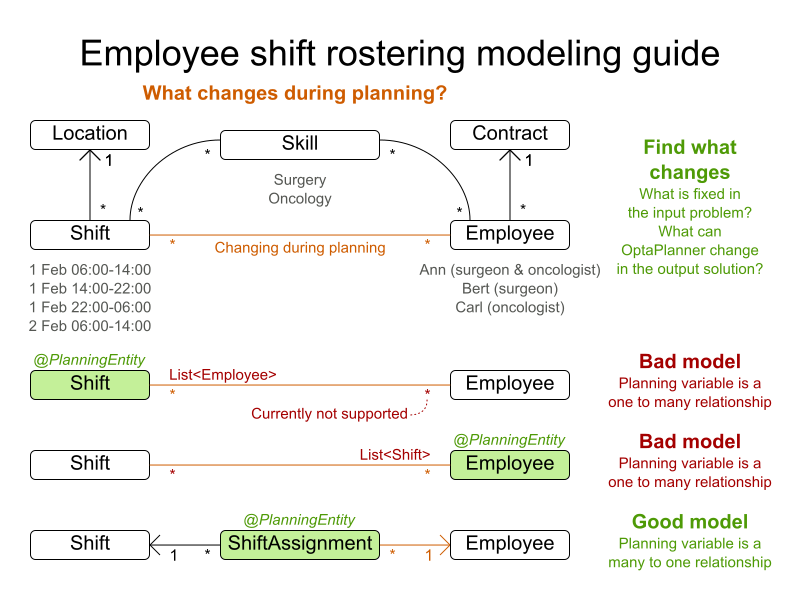

1. OptaPlanner Introduction
1.1. What is OptaPlanner?
Every organization faces planning problems: providing products or services with a limited set of constrained resources (employees, assets, time and money). OptaPlanner optimizes such planning to do more business with less resources. This is known as Constraint Satisfaction Programming (which is part of the Operations Research discipline).
OptaPlanner is a lightweight, embeddable constraint satisfaction engine which optimizes planning problems. It solves use cases such as:
-
Employee shift rostering: timetabling nurses, repairmen, …
-
Agenda scheduling: scheduling meetings, appointments, maintenance jobs, advertisements, …
-
Educational timetabling: scheduling lessons, courses, exams, conference presentations, …
-
Vehicle routing: planning vehicle routes (trucks, trains, boats, airplanes, …) for moving freight and/or passengers through multiple destinations using known mapping tools …
-
Bin packing: filling containers, trucks, ships, and storage warehouses with items, but also packing information across computer resources, as in cloud computing …
-
Job shop scheduling: planning car assembly lines, machine queue planning, workforce task planning, …
-
Cutting stock: minimizing waste while cutting paper, steel, carpet, …
-
Sport scheduling: planning games and training schedules for football leagues, baseball leagues, …
-
Financial optimization: investment portfolio optimization, risk spreading, …

1.2. What is a Planning Problem?

A planning problem has an optimal goal, based on limited resources and under specific constraints. Optimal goals can be any number of things, such as:
-
Maximized profits - the optimal goal results in the highest possible profit.
-
Minimized ecological footprint - the optimal goal has the least amount of environmental impact.
-
Maximized satisfaction for employees or customers - the optimal goal prioritizes the needs of employees or customers.
The ability to achieve these goals relies on the number of resources available, such as:
-
The number of people.
-
Amount of time.
-
Budget.
-
Physical assets, for example, machinery, vehicles, computers, buildings, etc.
Specific constraints related to these resources must also be taken into account, such as the number of hours a person works, their ability to use certain machines, or compatibility between pieces of equipment.
OptaPlanner helps JavaTM programmers solve constraint satisfaction problems efficiently. Under the hood, it combines optimization heuristics and metaheuristics with very efficient score calculation.
1.2.1. A Planning Problem is NP-complete or NP-hard
All the use cases above are probably NP-complete or harder. In layman’s terms, NP-complete means:
-
It’s easy to verify a given solution to a problem in reasonable time.
-
There is no silver bullet to find the optimal solution of a problem in reasonable time (*).
|
(*) At least, none of the smartest computer scientists in the world have found such a silver bullet yet. But if they find one for 1 NP-complete problem, it will work for every NP-complete problem. In fact, there’s a $ 1,000,000 reward for anyone that proves if such a silver bullet actually exists or not. |
The implication of this is pretty dire: solving your problem is probably harder than you anticipated, because the two common techniques won’t suffice:
-
A Brute Force algorithm (even a smarter variant) will take too long.
-
A quick algorithm, for example in bin packing, putting in the largest items first, will return a solution that is far from optimal.
By using advanced optimization algorithms, OptaPlanner does find a good solution in reasonable time for such planning problems.
1.2.2. A Planning Problem Has (Hard and Soft) Constraints
Usually, a planning problem has at least two levels of constraints:
-
A (negative) hard constraint must not be broken. For example: 1 teacher can not teach 2 different lessons at the same time.
-
A (negative) soft constraint should not be broken if it can be avoided. For example: Teacher A does not like to teach on Friday afternoon.
Some problems have positive constraints too:
-
A positive soft constraint (or reward) should be fulfilled if possible. For example: Teacher B likes to teach on Monday morning.
Some basic problems (such as N queens) only have hard constraints. Some problems have three or more levels of constraints, for example hard, medium and soft constraints.
These constraints define the score calculation (AKA fitness function) of a planning problem. Each solution of a planning problem can be graded with a score. With OptaPlanner, score constraints are written in an Object Oriented language, such as JavaTM code or Drools rules. Such code is easy, flexible and scalable.
1.2.3. A Planning Problem Has a Huge Search Space
A planning problem has a number of solutions. There are several categories of solutions:
-
A possible solution is any solution, whether or not it breaks any number of constraints. Planning problems tend to have an incredibly large number of possible solutions. Many of those solutions are worthless.
-
A feasible solution is a solution that does not break any (negative) hard constraints. The number of feasible solutions tends to be relative to the number of possible solutions. Sometimes there are no feasible solutions. Every feasible solution is a possible solution.
-
An optimal solution is a solution with the highest score. Planning problems tend to have 1 or a few optimal solutions. There is always at least 1 optimal solution, even in the case that there are no feasible solutions and the optimal solution isn’t feasible.
-
The best solution found is the solution with the highest score found by an implementation in a given amount of time. The best solution found is likely to be feasible and, given enough time, it’s an optimal solution.
Counterintuitively, the number of possible solutions is huge (if calculated correctly), even with a small dataset. As you can see in the examples, most instances have a lot more possible solutions than the minimal number of atoms in the known universe (10^80). Because there is no silver bullet to find the optimal solution, any implementation is forced to evaluate at least a subset of all those possible solutions.
OptaPlanner supports several optimization algorithms to efficiently wade through that incredibly large number of possible solutions. Depending on the use case, some optimization algorithms perform better than others, but it’s impossible to tell in advance. With OptaPlanner, it is easy to switch the optimization algorithm, by changing the solver configuration in a few lines of XML or code.
1.3. Requirements
OptaPlanner is open source software, released under the Apache Software License 2.0. This license is very liberal and allows reuse for commercial purposes. Read the layman’s explanation.
OptaPlanner is 100% pure JavaTM and runs on any JVM 8 or higher. It integrates very easily with other JavaTM technologies. OptaPlanner is available in the Maven Central Repository.
Planner works on any Java Virtual Machine and is compatible with Standard Java, Enterprise Java, and all JVM languages.

1.4. Governance
1.4.1. Status of OptaPlanner
OptaPlanner is stable, reliable and scaleable. It has been heavily tested with unit, integration, and stress tests, and is used in production throughout the world. One example handles over 50 000 variables with 5000 variables each, multiple constraint types and billions of possible constraint matches.
1.4.2. Release Notes
We release a Beta or CR version every few weeks and a Final version every few months. Read the release notes of each release on our website.
1.4.3. Backwards Compatibility
OptaPlanner separates its API and implementation:
-
Public API: All classes in the package namespace org.optaplanner.core.api are 100% backwards compatible in future releases (especially minor and hotfix releases). In rare circumstances, if the major version number changes, a few specific classes might have a few backwards incompatible changes, but those will be clearly documented in the upgrade recipe.
-
XML configuration: The XML solver configuration is backwards compatible for all elements, except for elements that require the use of non public API classes. The XML solver configuration is defined by the classes in the package namespace org.optaplanner.core.config.
-
Implementation classes: All classes in the package namespace org.optaplanner.core.impl are not backwards compatible: they will change in future major or minor releases (but probably not in hotfix releases). The upgrade recipe describes every such relevant change and on how to quickly deal with it when upgrading to a newer version.
|
This documentation covers some |
1.4.4. Community and Support
For news and articles, check our blog, Google+ (OptaPlanner, Geoffrey De Smet) and twitter (OptaPlanner, Geoffrey De Smet). If OptaPlanner helps you, help us by blogging or tweeting about it!
Public questions are welcome on our community forum. Bugs and feature requests are welcome in our issue tracker. Pull requests are very welcome on GitHub and get priority treatment! By open sourcing your improvements, you 'll benefit from our peer review and from our improvements made on top of your improvements.
Red Hat sponsors OptaPlanner development by employing the core team. For enterprise support and consulting, take a look at the BRMS and BPM Suite products (which contain OptaPlanner) or contact Red Hat.
1.4.5. Relationship with Drools and jBPM
OptaPlanner is part of the KIE group of projects. It releases regularly (often once or twice per month) together with the Drools rule engine and the jBPM workflow engine.
See the architecture overview to learn more about the optional integration with Drools.
1.5. Download and Run the Examples
1.5.1. Get the Release .zip and Run the Examples
To try it now:
-
Download a release zip of OptaPlanner from the OptaPlanner website and unzip it.
-
Open the directory examples and run the script.
Linux or Mac:
$ cd examples $ ./runExamples.shWindows:
$ cd examples $ runExamples.bat

The Examples GUI application will open. Pick an example to try it out:

|
OptaPlanner itself has no GUI dependencies. It runs just as well on a server or a mobile JVM as it does on the desktop. |
Run the Webexamples
Besides the GUI examples, there are also a set of webexamples to try out. The webexamples include:
-
Vehicle routing: calculating the shortest possible route to pick up all items required for a number of different customers using either Leaflet or Google Maps visualizations.
-
Cloud balancing: Assigning processes across computers with different specifications and costs.
Prerequisites
The webexamples require several JEE APIs to run, such as:
-
Servlet
-
JAX-RS
-
CDI
These are not required for Planner itself.
Running the Webexamples on a JEE Application Server
-
Download a JEE application server, such as JBoss EAP or WildFly and unzip it.
-
Download a release zip of OptaPlanner from the OptaPlanner website and unzip it.
-
Open the directory webexamples and deploy the
optaplanner-webexamples-*.warfile on the JEE application server.If using JBoss EAP in standalone mode, this can be done by adding the
optaplanner-webexamples-.warfile to thejboss-eap-/standalone/deploymentsfolder. -
Open the following address in a web browser: http://localhost:8080/optaplanner-webexamples-*/ (replace the * with the actual version).
Deploying Webexamples on a Servlet Container
To successfully deploy the webexamples on a servlet container (such as Jetty or Tomcat) instead of on a real JEE application server (such as WildFly):
-
Add the missing implementation libraries (for example RestEasy and Weld) in the
optaplanner-webexamples-*.warmanually. -
Deploy the
optaplanner-webexamples-*.waron the servlet container.
Pick an example to try it out, such as the Vehicle Routing example:
1.5.2. Run the Examples in an IDE (IntelliJ, Eclipse, NetBeans)
To run the examples in your favorite IDE:
-
In IntelliJ IDEA, NetBeans or a non-vanilla Eclipse:
-
Open the file examples/sources/pom.xml as a new project, the maven integration will take care of the rest.
-
Run the examples from the project.
-
-
In a vanilla Eclipse (which lacks the M2Eclipse plugin):
-
Open a new project for the directory examples/sources .
-
Add all the jars to the classpath from the directory binaries and the directory examples/binaries , except for the file examples/binaries/optaplanner-examples-*.jar .
-
Add the Java source directory src/main/java and the Java resources directory src/main/resources .
-
Create a run configuration:
-
Main class:
org.optaplanner.examples.app.OptaPlannerExamplesApp -
VM parameters (optional):
-Xmx512M -server-
To run a specific example directly and skip the example selection window, run its
Appclass (for exampleCloudBalancingApp) instead ofOptaPlannerExamplesApp.
-
-
-
Run that run configuration.
-
1.5.3. Use OptaPlanner with Maven, Gradle, Ivy, Buildr or ANT
The OptaPlanner jars are also available in the central maven repository (and also in the JBoss maven repository).
If you use Maven, add a dependency to optaplanner-core in your project’s pom.xml
:
<dependency>
<groupId>org.optaplanner</groupId>
<artifactId>optaplanner-core</artifactId>
</dependency>This is similar for Gradle, Ivy and Buildr. To identify the latest version, check the central maven repository.
Because you might end up using other OptaPlanner modules too, it’s recommended to import the optaplanner-bom in Maven’s dependencyManagement so the OptaPlanner version is specified only once:
<dependencyManagement>
<dependencies>
<dependency>
<groupId>org.optaplanner</groupId>
<artifactId>optaplanner-bom</artifactId>
<type>pom</type>
<version>...</version>
<scope>import</scope>
</dependency>
...
</dependencies>
</dependencyManagement>If you’re still using ANT (without Ivy), copy all the jars from the download zip’s binaries directory in your classpath.
|
The download zip’s binaries
directory contains far more jars then Check the maven repository pom.xml files to determine the minimal dependency set of a specific module (for a specific version). |
1.5.4. Build OptaPlanner from Source
It’s easy to build OptaPlanner from source.
Prerequisites
-
Clone
optaplannerfrom GitHub (or alternatively, download the zipball):$ git clone git@github.com:kiegroup/optaplanner.git optaplanner ...If you don’t have a GitHub account or your local Git installation isn’t configured with it, use this command instead, to avoid an authentication issue:
$ git clone https://github.com/kiegroup/optaplanner.git optaplanner ... -
Build it with Maven:
$ cd optaplanner $ mvn clean install -DskipTests ...The first time, Maven might take a long time, because it needs to download jars.
-
Run the examples:
$ cd optaplanner-examples $ mvn exec:java ... -
Edit the sources in your favorite IDE.
-
Optional: use a Java profiler.
-
2. Getting Started: A Cloud Balancing Demonstration
2.1. Cloud Balancing Tutorial
2.1.1. Problem Description
Suppose your company owns a number of cloud computers and needs to run a number of processes on those computers. Assign each process to a computer.
The following hard constraints must be fulfilled:
-
Every computer must be able to handle the minimum hardware requirements of the sum of its processes:
-
CPU capacity: The CPU power of a computer must be at least the sum of the CPU power required by the processes assigned to that computer.
-
Memory capacity: The RAM memory of a computer must be at least the sum of the RAM memory required by the processes assigned to that computer.
-
Network capacity: The network bandwidth of a computer must be at least the sum of the network bandwidth required by the processes assigned to that computer.
-
The following soft constraints should be optimized:
-
Each computer that has one or more processes assigned, incurs a maintenance cost (which is fixed per computer).
-
Cost: Minimize the total maintenance cost.
-
This problem is a form of bin packing. The following is a simplified example, in which we assign four processes to two computers with two constraints (CPU and RAM) with a simple algorithm:

The simple algorithm used here is the First Fit Decreasing algorithm, which assigns the bigger processes first and assigns the smaller processes to the remaining space.
As you can see, it is not optimal, as it does not leave enough room to assign the yellow process D.
Planner does find the more optimal solution by using additional, smarter algorithms. It also scales: both in data (more processes, more computers) and constraints (more hardware requirements, other constraints). So let’s see how Planner can be used in this scenario.
Here’s an executive summary of this example and an advanced implementation with more constraints:

2.1.2. Problem Size
| Problem Size | Computers | Processes | Search Space |
|---|---|---|---|
2computers-6processes |
2 |
6 |
64 |
3computers-9processes |
3 |
9 |
10^4 |
4computers-012processes |
4 |
12 |
10^7 |
100computers-300processes |
100 |
300 |
10^600 |
200computers-600processes |
200 |
600 |
10^1380 |
400computers-1200processes |
400 |
1200 |
10^3122 |
800computers-2400processes |
800 |
2400 |
10^6967 |
2.2. Using the Domain Model
2.2.1. Domain Model Design
Using a domain model helps determine which classes are planning entities and which of their properties are planning variables. It also helps to simplify contraints, improve performance, and increase flexibility for future needs.
-
Draw a class diagram of your domain model.
-
Normalize it to remove duplicate data.
-
Write down some sample instances for each class.
-
Computer: represents a computer with certain hardware and maintenance costs.In this example, the sample instances for the
Computerclass are:cpuPower,memory,networkBandwidth,cost. -
Process: represents a process with a demand. Needs to be assigned to aComputerby Planner.Sample instances for
Processare:requiredCpuPower,requiredMemory, andrequiredNetworkBandwidth. -
CloudBalance: represents a problem. Contains everyComputerandProcessfor a certain data set.The sample instance for
CloudBalanceisscore.
-
-
Determine which relationships (or fields) change during planning.
-
Planning entity: the class (or classes) that changes during solving. In this example, it is the class
Process. -
Planning variable: the property (or properties) of a planning entity class that changes during solving. In this example, it is the property
computeron the classProcess. -
Planning solution: the class that represents a data set and contains all planning entities. In this example that is the class
CloudBalance.
-
In the UML class diagram below, the Planner concepts are already annotated:

2.2.2. Domain Model Implementation
2.2.2.1. The Computer Class
The Computer class is a POJO (Plain Old Java Object). Usually, you will have more of this kind of classes with input data.
public class CloudComputer ... {
private int cpuPower;
private int memory;
private int networkBandwidth;
private int cost;
... // getters
}2.2.2.2. The Process Class
The Process class is particularly important. It is the class that is modified during solving.
We need to tell Planner that it can change the property computer. To do this:
. Annotate the class with @PlanningEntity.
. Annotate the getter getComputer() with @PlanningVariable.
Of course, the property computer needs a setter too, so Planner can change it during solving.
@PlanningEntity(...)
public class CloudProcess ... {
private int requiredCpuPower;
private int requiredMemory;
private int requiredNetworkBandwidth;
private CloudComputer computer;
... // getters
@PlanningVariable(valueRangeProviderRefs = {"computerRange"})
public CloudComputer getComputer() {
return computer;
}
public void setComputer(CloudComputer computer) {
computer = computer;
}
// ************************************************************************
// Complex methods
// ************************************************************************
...
}-
Planner needs to know which values it can choose from to assign to the property
computer. Those values are retrieved from the methodCloudBalance.getComputerList()on the planning solution, which returns a list of all computers in the current data set. -
The
@PlanningVariable'svalueRangeProviderRefsparameter onCloudProcess.getComputer()needs to match with the@ValueRangeProvider'sidon CloudBalance.getComputerList().
|
Instead of getter annotations, it is also possible to use field annotations. |
2.2.2.3. The CloudBalance Class
The CloudBalance class has a @PlanningSolution
annotation.
* It holds a list of all computers and processes.
* It represents both the planning problem and (if it’s initialized) the planning solution.
-
Planner needs to retrieve the collection of processes that it can change, therefore we annotate the getter
getProcessList()with@PlanningEntityCollectionProperty. -
The
CloudBalanceclass also has a@PlanningScoreannotated propertyscore, which is theScoreof that solution in its current state. Planner automatically updates it when it calculates aScorefor a solution instance and therefore it needs a setter. -
Especially for score calculation with Drools, the property
computerListneeds to be annotated with a@ProblemFactCollectionPropertyso the computers are known to it.
@PlanningSolution
public class CloudBalance ... {
private List<CloudComputer> computerList;
private List<CloudProcess> processList;
private HardSoftScore score;
@ValueRangeProvider(id = "computerRange")
@ProblemFactCollectionProperty
public List<CloudComputer> getComputerList() {
return computerList;
}
@PlanningEntityCollectionProperty
public List<CloudProcess> getProcessList() {
return processList;
}
@PlanningScore
public HardSoftScore getScore() {
return score;
}
public void setScore(HardSoftScore score) {
this.score = score;
}
...
}2.3. Run the Cloud Balancing Hello World
-
Create a run configuration with the following main class:
org.optaplanner.examples.cloudbalancing.app.CloudBalancingHelloWorldBy default, the Cloud Balancing Hello World is configured to run for 120 seconds.
It will execute the following code:
public class CloudBalancingHelloWorld {
public static void main(String[] args) {
// Build the Solver
SolverFactory<CloudBalance> solverFactory = SolverFactory.createFromXmlResource(
"org/optaplanner/examples/cloudbalancing/solver/cloudBalancingSolverConfig.xml");
Solver<CloudBalance> solver = solverFactory.buildSolver();
// Load a problem with 400 computers and 1200 processes
CloudBalance unsolvedCloudBalance = new CloudBalancingGenerator().createCloudBalance(400, 1200);
// Solve the problem
CloudBalance solvedCloudBalance = solver.solve(unsolvedCloudBalance);
// Display the result
System.out.println("\nSolved cloudBalance with 400 computers and 1200 processes:\n"
+ toDisplayString(solvedCloudBalance));
}
...
}The code example does the following:
-
Build the
Solverbased on a solver configuration (in this case an XML file,cloudBalancingSolverConfig.xml, from the classpath).Building the
Solveris the most complicated part of this procedure. For more detail, see Solver Configuration.SolverFactory<CloudBalance> solverFactory = SolverFactory.createFromXmlResource( "org/optaplanner/examples/cloudbalancing/solver/cloudBalancingSolverConfig.xml"); Solver solver<CloudBalance> = solverFactory.buildSolver(); -
Load the problem.
CloudBalancingGeneratorgenerates a random problem: you will replace this with a class that loads a real problem, for example from a database.CloudBalance unsolvedCloudBalance = new CloudBalancingGenerator().createCloudBalance(400, 1200); -
Solve the problem.
CloudBalance solvedCloudBalance = solver.solve(unsolvedCloudBalance); -
Display the result.
System.out.println("\nSolved cloudBalance with 400 computers and 1200 processes:\n" + toDisplayString(solvedCloudBalance));
2.4. Solver Configuration
Take a look at the solver configuration:
<?xml version="1.0" encoding="UTF-8"?>
<solver>
<!-- Domain model configuration -->
<scanAnnotatedClasses/>
<!-- Score configuration -->
<scoreDirectorFactory>
<easyScoreCalculatorClass>org.optaplanner.examples.cloudbalancing.optional.score.CloudBalancingEasyScoreCalculator</easyScoreCalculatorClass>
<!--<scoreDrl>org/optaplanner/examples/cloudbalancing/solver/cloudBalancingScoreRules.drl</scoreDrl>-->
</scoreDirectorFactory>
<!-- Optimization algorithms configuration -->
<termination>
<secondsSpentLimit>30</secondsSpentLimit>
</termination>
</solver>This solver configuration consists of three parts:
-
Domain model configuration: What can Planner change?
We need to make Planner aware of our domain classes. In this configuration, it will automatically scan all classes in your classpath (for a
@PlanningEntityor@PlanningSolutionannotation):<scanAnnotatedClasses/> -
Score configuration: How should Planner optimize the planning variables? What is our goal?
Since we have hard and soft constraints, we use a
HardSoftScore. But we need to tell Planner how to calculate the score, depending on our business requirements. Further down, we will look into two alternatives to calculate the score: using an easy Java implementation, or using Drools DRL.<scoreDirectorFactory> <easyScoreCalculatorClass>org.optaplanner.examples.cloudbalancing.optional.score.CloudBalancingEasyScoreCalculator</easyScoreCalculatorClass> <!--<scoreDrl>org/optaplanner/examples/cloudbalancing/solver/cloudBalancingScoreRules.drl</scoreDrl>--> </scoreDirectorFactory> -
Optimization algorithms configuration: How should Planner optimize it?
In this case, we use the default optimization algorithms (because no explicit optimization algorithms are configured) for 30 seconds:
<termination> <secondsSpentLimit>30</secondsSpentLimit> </termination>Planner should get a good result in seconds (and even in less than 15 milliseconds with real-time planning), but the more time it has, the better the result will be. Advanced use cases might use a different termination criteria than a hard time limit.
The default algorithms will already easily surpass human planners and most in-house implementations. Use the Benchmarker to power tweak to get even better results.
2.5. Score Configuration
Planner will search for the Solution with the highest Score.
This example uses a HardSoftScore, which means Planner will look for the solution with no hard constraints broken (fulfill hardware requirements) and as little as possible soft constraints broken (minimize maintenance cost).

Of course, Planner needs to be told about these domain-specific score constraints. There are several ways to implement such a score function:
2.5.1. Easy Java Score Configuration
One way to define a score function is to implement the interface EasyScoreCalculator in plain Java.
<scoreDirectorFactory>
<easyScoreCalculatorClass>org.optaplanner.examples.cloudbalancing.optional.score.CloudBalancingEasyScoreCalculator</easyScoreCalculatorClass>
</scoreDirectorFactory>Just implement the calculateScore(Solution) method to return a HardSoftScore instance.
public class CloudBalancingEasyScoreCalculator implements EasyScoreCalculator<CloudBalance> {
/**
* A very simple implementation. The double loop can easily be removed by using Maps as shown in
* {@link CloudBalancingMapBasedEasyScoreCalculator#calculateScore(CloudBalance)}.
*/
public HardSoftScore calculateScore(CloudBalance cloudBalance) {
int hardScore = 0;
int softScore = 0;
for (CloudComputer computer : cloudBalance.getComputerList()) {
int cpuPowerUsage = 0;
int memoryUsage = 0;
int networkBandwidthUsage = 0;
boolean used = false;
// Calculate usage
for (CloudProcess process : cloudBalance.getProcessList()) {
if (computer.equals(process.getComputer())) {
cpuPowerUsage += process.getRequiredCpuPower();
memoryUsage += process.getRequiredMemory();
networkBandwidthUsage += process.getRequiredNetworkBandwidth();
used = true;
}
}
// Hard constraints
int cpuPowerAvailable = computer.getCpuPower() - cpuPowerUsage;
if (cpuPowerAvailable < 0) {
hardScore += cpuPowerAvailable;
}
int memoryAvailable = computer.getMemory() - memoryUsage;
if (memoryAvailable < 0) {
hardScore += memoryAvailable;
}
int networkBandwidthAvailable = computer.getNetworkBandwidth() - networkBandwidthUsage;
if (networkBandwidthAvailable < 0) {
hardScore += networkBandwidthAvailable;
}
// Soft constraints
if (used) {
softScore -= computer.getCost();
}
}
return HardSoftScore.valueOf(hardScore, softScore);
}
}Even if we optimize the code above to use Maps to iterate through the processList only once, it is still slow because it does not do incremental score calculation.
To fix that, either use incremental Java score calculation or Drools score calculation.
2.5.2. Drools Score Configuration
Drools score calculation uses incremental calculation, where every score constraint is written as one or more score rules.
Using the Drools rule engine for score calculation, allows you to integrate with other Drools technologies, such as decision tables (XLS or web based), the KIE Workbench, …
Prerequisite
To use the Drools rule engine as a score function, simply add a scoreDrl resource in the classpath:
<scoreDirectorFactory>
<scoreDrl>org/optaplanner/examples/cloudbalancing/solver/cloudBalancingScoreRules.drl</scoreDrl>
</scoreDirectorFactory>-
We want to make sure that all computers have enough CPU, RAM and network bandwidth to support all their processes, so we make these hard constraints:
Example 7. cloudBalancingScoreRules.drl - Hard Constraints... import org.optaplanner.examples.cloudbalancing.domain.CloudBalance; import org.optaplanner.examples.cloudbalancing.domain.CloudComputer; import org.optaplanner.examples.cloudbalancing.domain.CloudProcess; global HardSoftScoreHolder scoreHolder; // ############################################################################ // Hard constraints // ############################################################################ rule "requiredCpuPowerTotal" when $computer : CloudComputer($cpuPower : cpuPower) accumulate( CloudProcess( computer == $computer, $requiredCpuPower : requiredCpuPower); $requiredCpuPowerTotal : sum($requiredCpuPower); $requiredCpuPowerTotal > $cpuPower ) then scoreHolder.addHardConstraintMatch(kcontext, $cpuPower - $requiredCpuPowerTotal); end rule "requiredMemoryTotal" ... end rule "requiredNetworkBandwidthTotal" ... end -
If those constraints are met, we want to minimize the maintenance cost, so we add that as a soft constraint:
Example 8. cloudBalancingScoreRules.drl - Soft Constraints// ############################################################################ // Soft constraints // ############################################################################ rule "computerCost" when $computer : CloudComputer($cost : cost) exists CloudProcess(computer == $computer) then scoreHolder.addSoftConstraintMatch(kcontext, - $cost); end
2.6. Beyond this Tutorial
Now that this simple example works, try going further. Enrich the domain model and add extra constraints such as these:
-
Each
Processbelongs to aService. A computer might crash, so processes running the same service should be assigned to different computers. -
Each
Computeris located in aBuilding. A building might burn down, so processes of the same services should be assigned to computers in different buildings.
3. Use Cases and Examples
3.1. Examples Overview
Planner has several examples. In this manual we explain mainly using the n queens example and cloud balancing example. So it is advisable to read at least those sections.
The Competition? column in the following table identifies an example as being either realistic or unrealistic. A realistic competition is an official, independent competition:
-
that clearly defines a real-word use case.
-
with real-world constraints.
-
with multiple, real-world datasets.
-
that expects reproducible results within a specific time limit on specific hardware.
-
that has had serious participation from the academic and/or enterprise Operations Research community.
These realistic competitions provide an objective comparison of Planner with competitive software and academic research.
The source code of all these examples is available in the distribution zip under examples/sources and also in git under optaplanner/optaplanner-examples.
| Example | Domain | Size | Competition? | Special features used |
|---|---|---|---|---|
|
|
|
None |
|
|
|
|
||
|
|
|
||
|
|
|
|
|
|
|
|
||
|
|
|
||
|
|
|
||
|
|
|
||
|
|
|
|
|
Vehicle routing with time windows |
|
|
|
|
|
|
|
||
|
|
|
||
|
|
|
||
|
|
|
|
|
|
|
|
||
|
|
|
|
|
|
|
|
||
|
|
|
3.2. Basic Examples
3.2.1. N Queens
3.2.1.1. Problem Description
Place n queens on a n sized chessboard so that no two queens can attack each other. The most common n queens puzzle is the eight queens puzzle, with n = 8:

Constraints:
-
Use a chessboard of n columns and n rows.
-
Place n queens on the chessboard.
-
No two queens can attack each other. A queen can attack any other queen on the same horizontal, vertical or diagonal line.
This documentation heavily uses the four queens puzzle as the primary example.
A proposed solution could be:

The above solution is wrong because queens A1 and B0 can attack each other (so can queens B0 and D0). Removing queen B0 would respect the "no two queens can attack each other" constraint, but would break the "place n queens" constraint.
Below is a correct solution:

All the constraints have been met, so the solution is correct.
Note that most n queens puzzles have multiple correct solutions. We will focus on finding a single correct solution for a given n, not on finding the number of possible correct solutions for a given n.
3.2.1.2. Problem Size
4queens has 4 queens with a search space of 256.
8queens has 8 queens with a search space of 10^7.
16queens has 16 queens with a search space of 10^19.
32queens has 32 queens with a search space of 10^48.
64queens has 64 queens with a search space of 10^115.
256queens has 256 queens with a search space of 10^616.The implementation of the n queens example has not been optimized because it functions as a beginner example. Nevertheless, it can easily handle 64 queens. With a few changes it has been shown to easily handle 5000 queens and more.
3.2.1.3. Domain Model
This example uses the domain model to solve the four queens problem.
-
Creating a Domain Model A good domain model will make it easier to understand and solve your planning problem.
This is the domain model for the n queens example:
public class Column { private int index; // ... getters and setters }public class Row { private int index; // ... getters and setters }public class Queen { private Column column; private Row row; public int getAscendingDiagonalIndex() {...} public int getDescendingDiagonalIndex() {...} // ... getters and setters } -
Calculating the Search Space.
A
Queeninstance has aColumn(for example: 0 is column A, 1 is column B, …) and aRow(its row, for example: 0 is row 0, 1 is row 1, …).The ascending diagonal line and the descending diagonal line can be calculated based on the column and the row.
The column and row indexes start from the upper left corner of the chessboard.
public class NQueens { private int n; private List<Column> columnList; private List<Row> rowList; private List<Queen> queenList; private SimpleScore score; // ... getters and setters } -
Finding the Solution
A single
NQueensinstance contains a list of allQueeninstances. It is theSolutionimplementation which will be supplied to, solved by, and retrieved from the Solver.
Notice that in the four queens example, NQueens’s getN() method will always return four.
| A solution | Queen | columnIndex | rowIndex | ascendingDiagonalIndex (columnIndex + rowIndex) | descendingDiagonalIndex (columnIndex - rowIndex) |
|---|---|---|---|---|---|
|
|
A1 |
0 |
1 |
1 (**) |
-1 |
B0 |
1 |
0 (*) |
1 (**) |
1 |
|
C2 |
2 |
2 |
4 |
0 |
|
D0 |
3 |
0 (*) |
3 |
3 |
When two queens share the same column, row or diagonal line, such as (*) and (**), they can attack each other.
3.2.2. Cloud Balancing
This example is explained in a tutorial.
3.2.3. Traveling Salesman (TSP - Traveling Salesman Problem)
3.2.3.1. Problem Description
Given a list of cities, find the shortest tour for a salesman that visits each city exactly once.
The problem is defined by Wikipedia. It is one of the most intensively studied problems in computational mathematics. Yet, in the real world, it is often only part of a planning problem, along with other constraints, such as employee shift rostering constraints.
3.2.3.2. Problem Size
dj38 has 38 cities with a search space of 10^58.
europe40 has 40 cities with a search space of 10^62.
st70 has 70 cities with a search space of 10^126.
pcb442 has 442 cities with a search space of 10^1166.
lu980 has 980 cities with a search space of 10^2927.3.2.3.3. Problem Difficulty
Despite TSP’s simple definition, the problem is surprisingly hard to solve. Because it is an NP-hard problem (like most planning problems), the optimal solution for a specific problem dataset can change a lot when that problem dataset is slightly altered:
3.2.4. Dinner Party
3.2.4.1. Problem Description
Miss Manners is throwing another dinner party.
-
This time she invited 144 guests and prepared 12 round tables with 12 seats each.
-
Every guest should sit next to someone (left and right) of the opposite gender.
-
And that neighbour should have at least one hobby in common with the guest.
-
At every table, there should be two politicians, two doctors, two socialites, two coaches, two teachers and two programmers.
-
And the two politicians, two doctors, two coaches and two programmers should not be the same kind at a table.
Drools Expert also has the normal Miss Manners example (which is much smaller) and employs an exhaustive heuristic to solve it. Planner’s implementation is far more scalable because it uses heuristics to find the best solution and Drools Expert to calculate the score of each solution.
3.2.4.2. Problem Size
wedding01 has 18 jobs, 144 guests, 288 hobby practicians, 12 tables and 144 seats with a search space of 10^310.3.2.5. Tennis Club Scheduling
3.2.5.1. Problem Description
Every week the tennis club has four teams playing round robin against each other. Assign those four spots to the teams fairly.
Hard constraints:
-
Conflict: A team can only play once per day.
-
Unavailability: Some teams are unavailable on some dates.
Medium constraints:
-
Fair assignment: All teams should play an (almost) equal number of times.
Soft constraints:
-
Evenly confrontation: Each team should play against every other team an equal number of times.
3.2.5.2. Problem Size
munich-7teams has 7 teams, 18 days, 12 unavailabilityPenalties and 72 teamAssignments with a search space of 10^60.
3.2.6. Meeting Scheduling
3.2.6.1. Problem Description
Assign each meeting to a starting time and a room. Meetings have different durations.
Hard constraints:
-
Room conflict: two meetings must not use the same room at the same time.
-
Required attendance: A person cannot have two required meetings at the same time.
Medium constraints:
-
Preferred attendance: A person cannot have two preferred meetings at the same time, nor a preferred and a required meeting at the same time.
Soft constraints:
-
Sooner rather than later: Schedule all meetings as soon as possible.
3.2.6.2. Problem Size
50meetings-160timegrains-5rooms has 50 meetings, 160 timeGrains and 5 rooms with a search space of 10^145.
100meetings-320timegrains-5rooms has 100 meetings, 320 timeGrains and 5 rooms with a search space of 10^320.3.3. Real Examples
3.3.1. Course Timetabling (ITC 2007 Track 3 - Curriculum Course Scheduling)
3.3.1.1. Problem Description
Schedule each lecture into a timeslot and into a room.
Hard constraints:
-
Teacher conflict: A teacher must not have two lectures in the same period.
-
Curriculum conflict: A curriculum must not have two lectures in the same period.
-
Room occupancy: two lectures must not be in the same room in the same period.
-
Unavailable period (specified per dataset): A specific lecture must not be assigned to a specific period.
Soft constraints:
-
Room capacity: A room’s capacity should not be less than the number of students in its lecture.
-
Minimum working days: Lectures of the same course should be spread out into a minimum number of days.
-
Curriculum compactness: Lectures belonging to the same curriculum should be adjacent to each other (so in consecutive periods).
-
Room stability: Lectures of the same course should be assigned to the same room.
The problem is defined by the International Timetabling Competition 2007 track 3.
3.3.1.2. Problem Size
comp01 has 24 teachers, 14 curricula, 30 courses, 160 lectures, 30 periods, 6 rooms and 53 unavailable period constraints with a search space of 10^360.
comp02 has 71 teachers, 70 curricula, 82 courses, 283 lectures, 25 periods, 16 rooms and 513 unavailable period constraints with a search space of 10^736.
comp03 has 61 teachers, 68 curricula, 72 courses, 251 lectures, 25 periods, 16 rooms and 382 unavailable period constraints with a search space of 10^653.
comp04 has 70 teachers, 57 curricula, 79 courses, 286 lectures, 25 periods, 18 rooms and 396 unavailable period constraints with a search space of 10^758.
comp05 has 47 teachers, 139 curricula, 54 courses, 152 lectures, 36 periods, 9 rooms and 771 unavailable period constraints with a search space of 10^381.
comp06 has 87 teachers, 70 curricula, 108 courses, 361 lectures, 25 periods, 18 rooms and 632 unavailable period constraints with a search space of 10^957.
comp07 has 99 teachers, 77 curricula, 131 courses, 434 lectures, 25 periods, 20 rooms and 667 unavailable period constraints with a search space of 10^1171.
comp08 has 76 teachers, 61 curricula, 86 courses, 324 lectures, 25 periods, 18 rooms and 478 unavailable period constraints with a search space of 10^859.
comp09 has 68 teachers, 75 curricula, 76 courses, 279 lectures, 25 periods, 18 rooms and 405 unavailable period constraints with a search space of 10^740.
comp10 has 88 teachers, 67 curricula, 115 courses, 370 lectures, 25 periods, 18 rooms and 694 unavailable period constraints with a search space of 10^981.
comp11 has 24 teachers, 13 curricula, 30 courses, 162 lectures, 45 periods, 5 rooms and 94 unavailable period constraints with a search space of 10^381.
comp12 has 74 teachers, 150 curricula, 88 courses, 218 lectures, 36 periods, 11 rooms and 1368 unavailable period constraints with a search space of 10^566.
comp13 has 77 teachers, 66 curricula, 82 courses, 308 lectures, 25 periods, 19 rooms and 468 unavailable period constraints with a search space of 10^824.
comp14 has 68 teachers, 60 curricula, 85 courses, 275 lectures, 25 periods, 17 rooms and 486 unavailable period constraints with a search space of 10^722.3.3.2. Machine Reassignment (Google ROADEF 2012)
3.3.2.1. Problem Description
Assign each process to a machine. All processes already have an original (unoptimized) assignment. Each process requires an amount of each resource (such as CPU, RAM, …). This is a more complex version of the Cloud Balancing example.
Hard constraints:
-
Maximum capacity: The maximum capacity for each resource for each machine must not be exceeded.
-
Conflict: Processes of the same service must run on distinct machines.
-
Spread: Processes of the same service must be spread out across locations.
-
Dependency: The processes of a service depending on another service must run in the neighborhood of a process of the other service.
-
Transient usage: Some resources are transient and count towards the maximum capacity of both the original machine as the newly assigned machine.
Soft constraints:
-
Load: The safety capacity for each resource for each machine should not be exceeded.
-
Balance: Leave room for future assignments by balancing the available resources on each machine.
-
Process move cost: A process has a move cost.
-
Service move cost: A service has a move cost.
-
Machine move cost: Moving a process from machine A to machine B has another A-B specific move cost.
The problem is defined by the Google ROADEF/EURO Challenge 2012.
3.3.2.3. Problem Size
model_a1_1 has 2 resources, 1 neighborhoods, 4 locations, 4 machines, 79 services, 100 processes and 1 balancePenalties with a search space of 10^60.
model_a1_2 has 4 resources, 2 neighborhoods, 4 locations, 100 machines, 980 services, 1000 processes and 0 balancePenalties with a search space of 10^2000.
model_a1_3 has 3 resources, 5 neighborhoods, 25 locations, 100 machines, 216 services, 1000 processes and 0 balancePenalties with a search space of 10^2000.
model_a1_4 has 3 resources, 50 neighborhoods, 50 locations, 50 machines, 142 services, 1000 processes and 1 balancePenalties with a search space of 10^1698.
model_a1_5 has 4 resources, 2 neighborhoods, 4 locations, 12 machines, 981 services, 1000 processes and 1 balancePenalties with a search space of 10^1079.
model_a2_1 has 3 resources, 1 neighborhoods, 1 locations, 100 machines, 1000 services, 1000 processes and 0 balancePenalties with a search space of 10^2000.
model_a2_2 has 12 resources, 5 neighborhoods, 25 locations, 100 machines, 170 services, 1000 processes and 0 balancePenalties with a search space of 10^2000.
model_a2_3 has 12 resources, 5 neighborhoods, 25 locations, 100 machines, 129 services, 1000 processes and 0 balancePenalties with a search space of 10^2000.
model_a2_4 has 12 resources, 5 neighborhoods, 25 locations, 50 machines, 180 services, 1000 processes and 1 balancePenalties with a search space of 10^1698.
model_a2_5 has 12 resources, 5 neighborhoods, 25 locations, 50 machines, 153 services, 1000 processes and 0 balancePenalties with a search space of 10^1698.
model_b_1 has 12 resources, 5 neighborhoods, 10 locations, 100 machines, 2512 services, 5000 processes and 0 balancePenalties with a search space of 10^10000.
model_b_2 has 12 resources, 5 neighborhoods, 10 locations, 100 machines, 2462 services, 5000 processes and 1 balancePenalties with a search space of 10^10000.
model_b_3 has 6 resources, 5 neighborhoods, 10 locations, 100 machines, 15025 services, 20000 processes and 0 balancePenalties with a search space of 10^40000.
model_b_4 has 6 resources, 5 neighborhoods, 50 locations, 500 machines, 1732 services, 20000 processes and 1 balancePenalties with a search space of 10^53979.
model_b_5 has 6 resources, 5 neighborhoods, 10 locations, 100 machines, 35082 services, 40000 processes and 0 balancePenalties with a search space of 10^80000.
model_b_6 has 6 resources, 5 neighborhoods, 50 locations, 200 machines, 14680 services, 40000 processes and 1 balancePenalties with a search space of 10^92041.
model_b_7 has 6 resources, 5 neighborhoods, 50 locations, 4000 machines, 15050 services, 40000 processes and 1 balancePenalties with a search space of 10^144082.
model_b_8 has 3 resources, 5 neighborhoods, 10 locations, 100 machines, 45030 services, 50000 processes and 0 balancePenalties with a search space of 10^100000.
model_b_9 has 3 resources, 5 neighborhoods, 100 locations, 1000 machines, 4609 services, 50000 processes and 1 balancePenalties with a search space of 10^150000.
model_b_10 has 3 resources, 5 neighborhoods, 100 locations, 5000 machines, 4896 services, 50000 processes and 1 balancePenalties with a search space of 10^184948.
3.3.3. Vehicle Routing
3.3.3.1. Problem Description
Using a fleet of vehicles, pick up the objects of each customer and bring them to the depot. Each vehicle can service multiple customers, but it has a limited capacity.

Besides the basic case (CVRP), there is also a variant with time windows (CVRPTW).
Hard constraints:
-
Vehicle capacity: a vehicle cannot carry more items then its capacity.
-
Time windows (only in CVRPTW):
-
Travel time: Traveling from one location to another takes time.
-
Customer service duration: a vehicle must stay at the customer for the length of the service duration.
-
Customer ready time: a vehicle may arrive before the customer’s ready time, but it must wait until the ready time before servicing.
-
Customer due time: a vehicle must arrive on time, before the customer’s due time.
-
Soft constraints:
-
Total distance: minimize the total distance driven (fuel consumption) of all vehicles.
The capacitated vehicle routing problem (CVRP) and its timewindowed variant (CVRPTW) are defined by the VRP web.

3.3.3.3. Problem Size
CVRP instances (without time windows):
A-n32-k5 has 1 depots, 5 vehicles and 31 customers with a search space of 10^46.
A-n33-k5 has 1 depots, 5 vehicles and 32 customers with a search space of 10^48.
A-n33-k6 has 1 depots, 6 vehicles and 32 customers with a search space of 10^48.
A-n34-k5 has 1 depots, 5 vehicles and 33 customers with a search space of 10^50.
A-n36-k5 has 1 depots, 5 vehicles and 35 customers with a search space of 10^54.
A-n37-k5 has 1 depots, 5 vehicles and 36 customers with a search space of 10^56.
A-n37-k6 has 1 depots, 6 vehicles and 36 customers with a search space of 10^56.
A-n38-k5 has 1 depots, 5 vehicles and 37 customers with a search space of 10^58.
A-n39-k5 has 1 depots, 5 vehicles and 38 customers with a search space of 10^60.
A-n39-k6 has 1 depots, 6 vehicles and 38 customers with a search space of 10^60.
A-n44-k7 has 1 depots, 7 vehicles and 43 customers with a search space of 10^70.
A-n45-k6 has 1 depots, 6 vehicles and 44 customers with a search space of 10^72.
A-n45-k7 has 1 depots, 7 vehicles and 44 customers with a search space of 10^72.
A-n46-k7 has 1 depots, 7 vehicles and 45 customers with a search space of 10^74.
A-n48-k7 has 1 depots, 7 vehicles and 47 customers with a search space of 10^78.
A-n53-k7 has 1 depots, 7 vehicles and 52 customers with a search space of 10^89.
A-n54-k7 has 1 depots, 7 vehicles and 53 customers with a search space of 10^91.
A-n55-k9 has 1 depots, 9 vehicles and 54 customers with a search space of 10^93.
A-n60-k9 has 1 depots, 9 vehicles and 59 customers with a search space of 10^104.
A-n61-k9 has 1 depots, 9 vehicles and 60 customers with a search space of 10^106.
A-n62-k8 has 1 depots, 8 vehicles and 61 customers with a search space of 10^108.
A-n63-k10 has 1 depots, 10 vehicles and 62 customers with a search space of 10^111.
A-n63-k9 has 1 depots, 9 vehicles and 62 customers with a search space of 10^111.
A-n64-k9 has 1 depots, 9 vehicles and 63 customers with a search space of 10^113.
A-n65-k9 has 1 depots, 9 vehicles and 64 customers with a search space of 10^115.
A-n69-k9 has 1 depots, 9 vehicles and 68 customers with a search space of 10^124.
A-n80-k10 has 1 depots, 10 vehicles and 79 customers with a search space of 10^149.
F-n135-k7 has 1 depots, 7 vehicles and 134 customers with a search space of 10^285.
F-n45-k4 has 1 depots, 4 vehicles and 44 customers with a search space of 10^72.
F-n72-k4 has 1 depots, 4 vehicles and 71 customers with a search space of 10^131.CVRPTW instances (with time windows):
Solomon_025_C101 has 1 depots, 25 vehicles and 25 customers with a search space of 10^34.
Solomon_025_C201 has 1 depots, 25 vehicles and 25 customers with a search space of 10^34.
Solomon_025_R101 has 1 depots, 25 vehicles and 25 customers with a search space of 10^34.
Solomon_025_R201 has 1 depots, 25 vehicles and 25 customers with a search space of 10^34.
Solomon_025_RC101 has 1 depots, 25 vehicles and 25 customers with a search space of 10^34.
Solomon_025_RC201 has 1 depots, 25 vehicles and 25 customers with a search space of 10^34.
Solomon_100_C101 has 1 depots, 25 vehicles and 100 customers with a search space of 10^200.
Solomon_100_C201 has 1 depots, 25 vehicles and 100 customers with a search space of 10^200.
Solomon_100_R101 has 1 depots, 25 vehicles and 100 customers with a search space of 10^200.
Solomon_100_R201 has 1 depots, 25 vehicles and 100 customers with a search space of 10^200.
Solomon_100_RC101 has 1 depots, 25 vehicles and 100 customers with a search space of 10^200.
Solomon_100_RC201 has 1 depots, 25 vehicles and 100 customers with a search space of 10^200.
Homberger_0200_C1_2_1 has 1 depots, 50 vehicles and 200 customers with a search space of 10^460.
Homberger_0200_C2_2_1 has 1 depots, 50 vehicles and 200 customers with a search space of 10^460.
Homberger_0200_R1_2_1 has 1 depots, 50 vehicles and 200 customers with a search space of 10^460.
Homberger_0200_R2_2_1 has 1 depots, 50 vehicles and 200 customers with a search space of 10^460.
Homberger_0200_RC1_2_1 has 1 depots, 50 vehicles and 200 customers with a search space of 10^460.
Homberger_0200_RC2_2_1 has 1 depots, 50 vehicles and 200 customers with a search space of 10^460.
Homberger_0400_C1_4_1 has 1 depots, 100 vehicles and 400 customers with a search space of 10^1040.
Homberger_0400_C2_4_1 has 1 depots, 100 vehicles and 400 customers with a search space of 10^1040.
Homberger_0400_R1_4_1 has 1 depots, 100 vehicles and 400 customers with a search space of 10^1040.
Homberger_0400_R2_4_1 has 1 depots, 100 vehicles and 400 customers with a search space of 10^1040.
Homberger_0400_RC1_4_1 has 1 depots, 100 vehicles and 400 customers with a search space of 10^1040.
Homberger_0400_RC2_4_1 has 1 depots, 100 vehicles and 400 customers with a search space of 10^1040.
Homberger_0600_C1_6_1 has 1 depots, 150 vehicles and 600 customers with a search space of 10^1666.
Homberger_0600_C2_6_1 has 1 depots, 150 vehicles and 600 customers with a search space of 10^1666.
Homberger_0600_R1_6_1 has 1 depots, 150 vehicles and 600 customers with a search space of 10^1666.
Homberger_0600_R2_6_1 has 1 depots, 150 vehicles and 600 customers with a search space of 10^1666.
Homberger_0600_RC1_6_1 has 1 depots, 150 vehicles and 600 customers with a search space of 10^1666.
Homberger_0600_RC2_6_1 has 1 depots, 150 vehicles and 600 customers with a search space of 10^1666.
Homberger_0800_C1_8_1 has 1 depots, 200 vehicles and 800 customers with a search space of 10^2322.
Homberger_0800_C2_8_1 has 1 depots, 200 vehicles and 800 customers with a search space of 10^2322.
Homberger_0800_R1_8_1 has 1 depots, 200 vehicles and 800 customers with a search space of 10^2322.
Homberger_0800_R2_8_1 has 1 depots, 200 vehicles and 800 customers with a search space of 10^2322.
Homberger_0800_RC1_8_1 has 1 depots, 200 vehicles and 800 customers with a search space of 10^2322.
Homberger_0800_RC2_8_1 has 1 depots, 200 vehicles and 800 customers with a search space of 10^2322.
Homberger_1000_C110_1 has 1 depots, 250 vehicles and 1000 customers with a search space of 10^3000.
Homberger_1000_C210_1 has 1 depots, 250 vehicles and 1000 customers with a search space of 10^3000.
Homberger_1000_R110_1 has 1 depots, 250 vehicles and 1000 customers with a search space of 10^3000.
Homberger_1000_R210_1 has 1 depots, 250 vehicles and 1000 customers with a search space of 10^3000.
Homberger_1000_RC110_1 has 1 depots, 250 vehicles and 1000 customers with a search space of 10^3000.
Homberger_1000_RC210_1 has 1 depots, 250 vehicles and 1000 customers with a search space of 10^3000.3.3.3.4. Domain Model

The vehicle routing with timewindows domain model makes heavily use of shadow variables.
This allows it to express its constraints more naturally, because properties such as arrivalTime and departureTime, are directly available on the domain model.
3.3.3.5. Road Distances Instead of Air Distances
In the real world, vehicles cannot follow a straight line from location to location: they have to use roads and highways. From a business point of view, this matters a lot:

For the optimization algorithm, this does not matter much, as long as the distance between two points can be looked up (and are preferably precalculated). The road cost does not even need to be a distance, it can also be travel time, fuel cost, or a weighted function of those. There are several technologies available to precalculate road costs, such as GraphHopper (embeddable, offline Java engine), Open MapQuest (web service) and Google Maps Client API (web service).

There are also several technologies to render it, such as Leaflet and Google Maps for developers: the optaplanner-webexamples-*.war has an example which demonstrates such rendering:
It is even possible to render the actual road routes with GraphHopper or Google Map Directions, but because of route overlaps on highways, it can become harder to see the standstill order:

Take special care that the road costs between two points use the same optimization criteria as the one used in Planner. For example, GraphHopper etc will by default return the fastest route, not the shortest route. Don’t use the km (or miles) distances of the fastest GPS routes to optimize the shortest trip in Planner: this leads to a suboptimal solution as shown below:
Contrary to popular belief, most users do not want the shortest route: they want the fastest route instead. They prefer highways over normal roads. They prefer normal roads over dirt roads. In the real world, the fastest and shortest route are rarely the same.
3.3.4. Project Job Scheduling
3.3.4.1. Problem Description
Schedule all jobs in time and execution mode to minimize project delays. Each job is part of a project. A job can be executed in different ways: each way is an execution mode that implies a different duration but also different resource usages. This is a form of flexible job shop scheduling.

Hard constraints:
-
Job precedence: a job can only start when all its predecessor jobs are finished.
-
Resource capacity: do not use more resources than available.
-
Resources are local (shared between jobs of the same project) or global (shared between all jobs)
-
Resource are renewable (capacity available per day) or nonrenewable (capacity available for all days)
-
Medium constraints:
-
Total project delay: minimize the duration (makespan) of each project.
Soft constraints:
-
Total makespan: minimize the duration of the whole multi-project schedule.
The problem is defined by the MISTA 2013 challenge.
3.3.4.2. Problem Size
Schedule A-1 has 2 projects, 24 jobs, 64 execution modes, 7 resources and 150 resource requirements.
Schedule A-2 has 2 projects, 44 jobs, 124 execution modes, 7 resources and 420 resource requirements.
Schedule A-3 has 2 projects, 64 jobs, 184 execution modes, 7 resources and 630 resource requirements.
Schedule A-4 has 5 projects, 60 jobs, 160 execution modes, 16 resources and 390 resource requirements.
Schedule A-5 has 5 projects, 110 jobs, 310 execution modes, 16 resources and 900 resource requirements.
Schedule A-6 has 5 projects, 160 jobs, 460 execution modes, 16 resources and 1440 resource requirements.
Schedule A-7 has 10 projects, 120 jobs, 320 execution modes, 22 resources and 900 resource requirements.
Schedule A-8 has 10 projects, 220 jobs, 620 execution modes, 22 resources and 1860 resource requirements.
Schedule A-9 has 10 projects, 320 jobs, 920 execution modes, 31 resources and 2880 resource requirements.
Schedule A-10 has 10 projects, 320 jobs, 920 execution modes, 31 resources and 2970 resource requirements.
Schedule B-1 has 10 projects, 120 jobs, 320 execution modes, 31 resources and 900 resource requirements.
Schedule B-2 has 10 projects, 220 jobs, 620 execution modes, 22 resources and 1740 resource requirements.
Schedule B-3 has 10 projects, 320 jobs, 920 execution modes, 31 resources and 3060 resource requirements.
Schedule B-4 has 15 projects, 180 jobs, 480 execution modes, 46 resources and 1530 resource requirements.
Schedule B-5 has 15 projects, 330 jobs, 930 execution modes, 46 resources and 2760 resource requirements.
Schedule B-6 has 15 projects, 480 jobs, 1380 execution modes, 46 resources and 4500 resource requirements.
Schedule B-7 has 20 projects, 240 jobs, 640 execution modes, 61 resources and 1710 resource requirements.
Schedule B-8 has 20 projects, 440 jobs, 1240 execution modes, 42 resources and 3180 resource requirements.
Schedule B-9 has 20 projects, 640 jobs, 1840 execution modes, 61 resources and 5940 resource requirements.
Schedule B-10 has 20 projects, 460 jobs, 1300 execution modes, 42 resources and 4260 resource requirements.3.3.5. Hospital Bed Planning (PAS - Patient Admission Scheduling)
3.3.5.1. Problem Description
Assign each patient (that will come to the hospital) into a bed for each night that the patient will stay in the hospital. Each bed belongs to a room and each room belongs to a department. The arrival and departure dates of the patients is fixed: only a bed needs to be assigned for each night.
This problem features overconstrained datasets.

Hard constraints:
-
Two patients must not be assigned to the same bed in the same night. Weight:
-1000hard * conflictNightCount. -
A room can have a gender limitation: only females, only males, the same gender in the same night or no gender limitation at all. Weight:
-50hard * nightCount. -
A department can have a minimum or maximum age. Weight:
-100hard * nightCount. -
A patient can require a room with specific equipment(s). Weight:
-50hard * nightCount.
Medium constraints:
-
Assign every patient to a bed, unless the dataset is overconstrained. Weight:
-1medium * nightCount.
Soft constraints:
-
A patient can prefer a maximum room size, for example if he/she wants a single room. Weight:
-8soft * nightCount. -
A patient is best assigned to a department that specializes in his/her problem. Weight:
-10soft * nightCount. -
A patient is best assigned to a room that specializes in his/her problem. Weight:
-20soft * nightCount.-
That room speciality should be priority 1. Weight:
-10soft * (priority - 1) * nightCount.
-
-
A patient can prefer a room with specific equipment(s). Weight:
-20soft * nightCount.
The problem is a variant on Kaho’s Patient Scheduling and the datasets come from real world hospitals.
3.3.5.2. Problem Size
testdata01 has 4 specialisms, 2 equipments, 4 departments, 98 rooms, 286 beds, 14 nights, 652 patients and 652 admissions with a search space of 10^1601.
testdata02 has 6 specialisms, 2 equipments, 6 departments, 151 rooms, 465 beds, 14 nights, 755 patients and 755 admissions with a search space of 10^2013.
testdata03 has 5 specialisms, 2 equipments, 5 departments, 131 rooms, 395 beds, 14 nights, 708 patients and 708 admissions with a search space of 10^1838.
testdata04 has 6 specialisms, 2 equipments, 6 departments, 155 rooms, 471 beds, 14 nights, 746 patients and 746 admissions with a search space of 10^1994.
testdata05 has 4 specialisms, 2 equipments, 4 departments, 102 rooms, 325 beds, 14 nights, 587 patients and 587 admissions with a search space of 10^1474.
testdata06 has 4 specialisms, 2 equipments, 4 departments, 104 rooms, 313 beds, 14 nights, 685 patients and 685 admissions with a search space of 10^1709.
testdata07 has 6 specialisms, 4 equipments, 6 departments, 162 rooms, 472 beds, 14 nights, 519 patients and 519 admissions with a search space of 10^1387.
testdata08 has 6 specialisms, 4 equipments, 6 departments, 148 rooms, 441 beds, 21 nights, 895 patients and 895 admissions with a search space of 10^2366.
testdata09 has 4 specialisms, 4 equipments, 4 departments, 105 rooms, 310 beds, 28 nights, 1400 patients and 1400 admissions with a search space of 10^3487.
testdata10 has 4 specialisms, 4 equipments, 4 departments, 104 rooms, 308 beds, 56 nights, 1575 patients and 1575 admissions with a search space of 10^3919.
testdata11 has 4 specialisms, 4 equipments, 4 departments, 107 rooms, 318 beds, 91 nights, 2514 patients and 2514 admissions with a search space of 10^6291.
testdata12 has 4 specialisms, 4 equipments, 4 departments, 105 rooms, 310 beds, 84 nights, 2750 patients and 2750 admissions with a search space of 10^6851.
testdata13 has 5 specialisms, 4 equipments, 5 departments, 125 rooms, 368 beds, 28 nights, 907 patients and 1109 admissions with a search space of 10^2845.3.3.6. Task assigning
3.3.6.1. Problem Description
Assign each task to a spot in an employee’s queue. Each task has a duration which is affected by the employee’s affinity level with the task’s customer.
Hard constraints:
-
Skill: Each task requires one or more skills. The employee must posses all these skills.
Soft level 0 constraints:
-
Critical tasks: Complete critical tasks first, sooner than major and minor tasks.
Soft level 1 constraints:
-
Minimize makespan: Reduce the time to complete all tasks.
-
Start with the longest working employee first, then the second longest working employee and so forth, to creates fairness and load balancing.
-
Soft level 2 constraints:
-
Major tasks: Complete major tasks as soon as possible, sooner than minor tasks.
Soft level 3 constraints:
-
Minor tasks: Complete minor tasks as soon as possible.
3.3.6.2. Problem Size
24tasks-8employees has 24 tasks, 6 skills, 8 employees, 4 task types and 4 customers with a search space of 10^40.
50tasks-5employees has 50 tasks, 5 skills, 5 employees, 10 task types and 10 customers with a search space of 10^91.
100tasks-5employees has 100 tasks, 5 skills, 5 employees, 20 task types and 15 customers with a search space of 10^207.
500tasks-20employees has 500 tasks, 6 skills, 20 employees, 100 task types and 60 customers with a search space of 10^1384.
3.4. Difficult Examples
3.4.1. Exam Timetabling (ITC 2007 track 1 - Examination)
3.4.1.1. Problem Description
Schedule each exam into a period and into a room. Multiple exams can share the same room during the same period.

Hard constraints:
-
Exam conflict: two exams that share students must not occur in the same period.
-
Room capacity: A room’s seating capacity must suffice at all times.
-
Period duration: A period’s duration must suffice for all of its exams.
-
Period related hard constraints (specified per dataset):
-
Coincidence: two specified exams must use the same period (but possibly another room).
-
Exclusion: two specified exams must not use the same period.
-
After: A specified exam must occur in a period after another specified exam’s period.
-
-
Room related hard constraints (specified per dataset):
-
Exclusive: one specified exam should not have to share its room with any other exam.
-
Soft constraints (each of which has a parametrized penalty):
-
The same student should not have two exams in a row.
-
The same student should not have two exams on the same day.
-
Period spread: two exams that share students should be a number of periods apart.
-
Mixed durations: two exams that share a room should not have different durations.
-
Front load: Large exams should be scheduled earlier in the schedule.
-
Period penalty (specified per dataset): Some periods have a penalty when used.
-
Room penalty (specified per dataset): Some rooms have a penalty when used.
It uses large test data sets of real-life universities.
The problem is defined by the International Timetabling Competition 2007 track 1. Geoffrey De Smet finished 4th in that competition with a very early version of Planner. Many improvements have been made since then.
3.4.1.2. Problem Size
exam_comp_set1 has 7883 students, 607 exams, 54 periods, 7 rooms, 12 period constraints and 0 room constraints with a search space of 10^1564.
exam_comp_set2 has 12484 students, 870 exams, 40 periods, 49 rooms, 12 period constraints and 2 room constraints with a search space of 10^2864.
exam_comp_set3 has 16365 students, 934 exams, 36 periods, 48 rooms, 168 period constraints and 15 room constraints with a search space of 10^3023.
exam_comp_set4 has 4421 students, 273 exams, 21 periods, 1 rooms, 40 period constraints and 0 room constraints with a search space of 10^360.
exam_comp_set5 has 8719 students, 1018 exams, 42 periods, 3 rooms, 27 period constraints and 0 room constraints with a search space of 10^2138.
exam_comp_set6 has 7909 students, 242 exams, 16 periods, 8 rooms, 22 period constraints and 0 room constraints with a search space of 10^509.
exam_comp_set7 has 13795 students, 1096 exams, 80 periods, 15 rooms, 28 period constraints and 0 room constraints with a search space of 10^3374.
exam_comp_set8 has 7718 students, 598 exams, 80 periods, 8 rooms, 20 period constraints and 1 room constraints with a search space of 10^1678.3.4.1.3. Domain Model
Below you can see the main examination domain classes:
Notice that we’ve split up the exam concept into an Exam class and a Topic class.
The Exam instances change during solving (this is the planning entity class), when their period or room property changes.
The Topic, Period and Room instances never change during solving (these are problem facts, just like some other classes).
3.4.2. Employee Rostering (INRC 2010 - Nurse Rostering)
3.4.2.1. Problem Description
For each shift, assign a nurse to work that shift.

Hard constraints:
-
No unassigned shifts (built-in): Every shift need to be assigned to an employee.
-
Shift conflict: An employee can have only one shift per day.
Soft constraints:
-
Contract obligations. The business frequently violates these, so they decided to define these as soft constraints instead of hard constraints.
-
Minimum and maximum assignments: Each employee needs to work more than x shifts and less than y shifts (depending on their contract).
-
Minimum and maximum consecutive working days: Each employee needs to work between x and y days in a row (depending on their contract).
-
Minimum and maximum consecutive free days: Each employee needs to be free between x and y days in a row (depending on their contract).
-
Minimum and maximum consecutive working weekends: Each employee needs to work between x and y weekends in a row (depending on their contract).
-
Complete weekends: Each employee needs to work every day in a weekend or not at all.
-
Identical shift types during weekend: Each weekend shift for the same weekend of the same employee must be the same shift type.
-
Unwanted patterns: A combination of unwanted shift types in a row. For example: a late shift followed by an early shift followed by a late shift.
-
-
Employee wishes:
-
Day on request: An employee wants to work on a specific day.
-
Day off request: An employee does not want to work on a specific day.
-
Shift on request: An employee wants to be assigned to a specific shift.
-
Shift off request: An employee does not want to be assigned to a specific shift.
-
-
Alternative skill: An employee assigned to a skill should have a proficiency in every skill required by that shift.
The problem is defined by the International Nurse Rostering Competition 2010.
3.4.2.3. Problem Size
There are three dataset types:
-
sprint: must be solved in seconds.
-
medium: must be solved in minutes.
-
long: must be solved in hours.
toy1 has 1 skills, 3 shiftTypes, 2 patterns, 1 contracts, 6 employees, 7 shiftDates, 35 shiftAssignments and 0 requests with a search space of 10^27.
toy2 has 1 skills, 3 shiftTypes, 3 patterns, 2 contracts, 20 employees, 28 shiftDates, 180 shiftAssignments and 140 requests with a search space of 10^234.
sprint01 has 1 skills, 4 shiftTypes, 3 patterns, 4 contracts, 10 employees, 28 shiftDates, 152 shiftAssignments and 150 requests with a search space of 10^152.
sprint02 has 1 skills, 4 shiftTypes, 3 patterns, 4 contracts, 10 employees, 28 shiftDates, 152 shiftAssignments and 150 requests with a search space of 10^152.
sprint03 has 1 skills, 4 shiftTypes, 3 patterns, 4 contracts, 10 employees, 28 shiftDates, 152 shiftAssignments and 150 requests with a search space of 10^152.
sprint04 has 1 skills, 4 shiftTypes, 3 patterns, 4 contracts, 10 employees, 28 shiftDates, 152 shiftAssignments and 150 requests with a search space of 10^152.
sprint05 has 1 skills, 4 shiftTypes, 3 patterns, 4 contracts, 10 employees, 28 shiftDates, 152 shiftAssignments and 150 requests with a search space of 10^152.
sprint06 has 1 skills, 4 shiftTypes, 3 patterns, 4 contracts, 10 employees, 28 shiftDates, 152 shiftAssignments and 150 requests with a search space of 10^152.
sprint07 has 1 skills, 4 shiftTypes, 3 patterns, 4 contracts, 10 employees, 28 shiftDates, 152 shiftAssignments and 150 requests with a search space of 10^152.
sprint08 has 1 skills, 4 shiftTypes, 3 patterns, 4 contracts, 10 employees, 28 shiftDates, 152 shiftAssignments and 150 requests with a search space of 10^152.
sprint09 has 1 skills, 4 shiftTypes, 3 patterns, 4 contracts, 10 employees, 28 shiftDates, 152 shiftAssignments and 150 requests with a search space of 10^152.
sprint10 has 1 skills, 4 shiftTypes, 3 patterns, 4 contracts, 10 employees, 28 shiftDates, 152 shiftAssignments and 150 requests with a search space of 10^152.
sprint_hint01 has 1 skills, 4 shiftTypes, 8 patterns, 3 contracts, 10 employees, 28 shiftDates, 152 shiftAssignments and 150 requests with a search space of 10^152.
sprint_hint02 has 1 skills, 4 shiftTypes, 0 patterns, 3 contracts, 10 employees, 28 shiftDates, 152 shiftAssignments and 150 requests with a search space of 10^152.
sprint_hint03 has 1 skills, 4 shiftTypes, 8 patterns, 3 contracts, 10 employees, 28 shiftDates, 152 shiftAssignments and 150 requests with a search space of 10^152.
sprint_late01 has 1 skills, 4 shiftTypes, 8 patterns, 3 contracts, 10 employees, 28 shiftDates, 152 shiftAssignments and 150 requests with a search space of 10^152.
sprint_late02 has 1 skills, 3 shiftTypes, 4 patterns, 3 contracts, 10 employees, 28 shiftDates, 144 shiftAssignments and 139 requests with a search space of 10^144.
sprint_late03 has 1 skills, 4 shiftTypes, 8 patterns, 3 contracts, 10 employees, 28 shiftDates, 160 shiftAssignments and 150 requests with a search space of 10^160.
sprint_late04 has 1 skills, 4 shiftTypes, 8 patterns, 3 contracts, 10 employees, 28 shiftDates, 160 shiftAssignments and 150 requests with a search space of 10^160.
sprint_late05 has 1 skills, 4 shiftTypes, 8 patterns, 3 contracts, 10 employees, 28 shiftDates, 152 shiftAssignments and 150 requests with a search space of 10^152.
sprint_late06 has 1 skills, 4 shiftTypes, 0 patterns, 3 contracts, 10 employees, 28 shiftDates, 152 shiftAssignments and 150 requests with a search space of 10^152.
sprint_late07 has 1 skills, 4 shiftTypes, 0 patterns, 3 contracts, 10 employees, 28 shiftDates, 152 shiftAssignments and 150 requests with a search space of 10^152.
sprint_late08 has 1 skills, 4 shiftTypes, 0 patterns, 3 contracts, 10 employees, 28 shiftDates, 152 shiftAssignments and 0 requests with a search space of 10^152.
sprint_late09 has 1 skills, 4 shiftTypes, 0 patterns, 3 contracts, 10 employees, 28 shiftDates, 152 shiftAssignments and 0 requests with a search space of 10^152.
sprint_late10 has 1 skills, 4 shiftTypes, 0 patterns, 3 contracts, 10 employees, 28 shiftDates, 152 shiftAssignments and 150 requests with a search space of 10^152.
medium01 has 1 skills, 4 shiftTypes, 0 patterns, 4 contracts, 31 employees, 28 shiftDates, 608 shiftAssignments and 403 requests with a search space of 10^906.
medium02 has 1 skills, 4 shiftTypes, 0 patterns, 4 contracts, 31 employees, 28 shiftDates, 608 shiftAssignments and 403 requests with a search space of 10^906.
medium03 has 1 skills, 4 shiftTypes, 0 patterns, 4 contracts, 31 employees, 28 shiftDates, 608 shiftAssignments and 403 requests with a search space of 10^906.
medium04 has 1 skills, 4 shiftTypes, 0 patterns, 4 contracts, 31 employees, 28 shiftDates, 608 shiftAssignments and 403 requests with a search space of 10^906.
medium05 has 1 skills, 4 shiftTypes, 0 patterns, 4 contracts, 31 employees, 28 shiftDates, 608 shiftAssignments and 403 requests with a search space of 10^906.
medium_hint01 has 1 skills, 4 shiftTypes, 7 patterns, 4 contracts, 30 employees, 28 shiftDates, 428 shiftAssignments and 390 requests with a search space of 10^632.
medium_hint02 has 1 skills, 4 shiftTypes, 7 patterns, 3 contracts, 30 employees, 28 shiftDates, 428 shiftAssignments and 390 requests with a search space of 10^632.
medium_hint03 has 1 skills, 4 shiftTypes, 7 patterns, 4 contracts, 30 employees, 28 shiftDates, 428 shiftAssignments and 390 requests with a search space of 10^632.
medium_late01 has 1 skills, 4 shiftTypes, 7 patterns, 4 contracts, 30 employees, 28 shiftDates, 424 shiftAssignments and 390 requests with a search space of 10^626.
medium_late02 has 1 skills, 4 shiftTypes, 7 patterns, 3 contracts, 30 employees, 28 shiftDates, 428 shiftAssignments and 390 requests with a search space of 10^632.
medium_late03 has 1 skills, 4 shiftTypes, 0 patterns, 4 contracts, 30 employees, 28 shiftDates, 428 shiftAssignments and 390 requests with a search space of 10^632.
medium_late04 has 1 skills, 4 shiftTypes, 7 patterns, 3 contracts, 30 employees, 28 shiftDates, 416 shiftAssignments and 390 requests with a search space of 10^614.
medium_late05 has 2 skills, 5 shiftTypes, 7 patterns, 4 contracts, 30 employees, 28 shiftDates, 452 shiftAssignments and 390 requests with a search space of 10^667.
long01 has 2 skills, 5 shiftTypes, 3 patterns, 3 contracts, 49 employees, 28 shiftDates, 740 shiftAssignments and 735 requests with a search space of 10^1250.
long02 has 2 skills, 5 shiftTypes, 3 patterns, 3 contracts, 49 employees, 28 shiftDates, 740 shiftAssignments and 735 requests with a search space of 10^1250.
long03 has 2 skills, 5 shiftTypes, 3 patterns, 3 contracts, 49 employees, 28 shiftDates, 740 shiftAssignments and 735 requests with a search space of 10^1250.
long04 has 2 skills, 5 shiftTypes, 3 patterns, 3 contracts, 49 employees, 28 shiftDates, 740 shiftAssignments and 735 requests with a search space of 10^1250.
long05 has 2 skills, 5 shiftTypes, 3 patterns, 3 contracts, 49 employees, 28 shiftDates, 740 shiftAssignments and 735 requests with a search space of 10^1250.
long_hint01 has 2 skills, 5 shiftTypes, 9 patterns, 3 contracts, 50 employees, 28 shiftDates, 740 shiftAssignments and 0 requests with a search space of 10^1257.
long_hint02 has 2 skills, 5 shiftTypes, 7 patterns, 3 contracts, 50 employees, 28 shiftDates, 740 shiftAssignments and 0 requests with a search space of 10^1257.
long_hint03 has 2 skills, 5 shiftTypes, 7 patterns, 3 contracts, 50 employees, 28 shiftDates, 740 shiftAssignments and 0 requests with a search space of 10^1257.
long_late01 has 2 skills, 5 shiftTypes, 9 patterns, 3 contracts, 50 employees, 28 shiftDates, 752 shiftAssignments and 0 requests with a search space of 10^1277.
long_late02 has 2 skills, 5 shiftTypes, 9 patterns, 4 contracts, 50 employees, 28 shiftDates, 752 shiftAssignments and 0 requests with a search space of 10^1277.
long_late03 has 2 skills, 5 shiftTypes, 9 patterns, 3 contracts, 50 employees, 28 shiftDates, 752 shiftAssignments and 0 requests with a search space of 10^1277.
long_late04 has 2 skills, 5 shiftTypes, 9 patterns, 4 contracts, 50 employees, 28 shiftDates, 752 shiftAssignments and 0 requests with a search space of 10^1277.
long_late05 has 2 skills, 5 shiftTypes, 9 patterns, 3 contracts, 50 employees, 28 shiftDates, 740 shiftAssignments and 0 requests with a search space of 10^1257.3.4.3. Traveling Tournament Problem (TTP)
3.4.3.1. Problem Description
Schedule matches between n teams.
Hard constraints:
-
Each team plays twice against every other team: once home and once away.
-
Each team has exactly one match on each timeslot.
-
No team must have more than three consecutive home or three consecutive away matches.
-
No repeaters: no two consecutive matches of the same two opposing teams.
Soft constraints:
-
Minimize the total distance traveled by all teams.
The problem is defined on Michael Trick’s website (which contains the world records too).
3.4.3.2. Problem Size
1-nl04 has 6 days, 4 teams and 12 matches with a search space of 10^9.
1-nl06 has 10 days, 6 teams and 30 matches with a search space of 10^30.
1-nl08 has 14 days, 8 teams and 56 matches with a search space of 10^64.
1-nl10 has 18 days, 10 teams and 90 matches with a search space of 10^112.
1-nl12 has 22 days, 12 teams and 132 matches with a search space of 10^177.
1-nl14 has 26 days, 14 teams and 182 matches with a search space of 10^257.
1-nl16 has 30 days, 16 teams and 240 matches with a search space of 10^354.
2-bra24 has 46 days, 24 teams and 552 matches with a search space of 10^917.
3-nfl16 has 30 days, 16 teams and 240 matches with a search space of 10^354.
3-nfl18 has 34 days, 18 teams and 306 matches with a search space of 10^468.
3-nfl20 has 38 days, 20 teams and 380 matches with a search space of 10^600.
3-nfl22 has 42 days, 22 teams and 462 matches with a search space of 10^749.
3-nfl24 has 46 days, 24 teams and 552 matches with a search space of 10^917.
3-nfl26 has 50 days, 26 teams and 650 matches with a search space of 10^1104.
3-nfl28 has 54 days, 28 teams and 756 matches with a search space of 10^1309.
3-nfl30 has 58 days, 30 teams and 870 matches with a search space of 10^1534.
3-nfl32 has 62 days, 32 teams and 992 matches with a search space of 10^1778.
4-super04 has 6 days, 4 teams and 12 matches with a search space of 10^9.
4-super06 has 10 days, 6 teams and 30 matches with a search space of 10^30.
4-super08 has 14 days, 8 teams and 56 matches with a search space of 10^64.
4-super10 has 18 days, 10 teams and 90 matches with a search space of 10^112.
4-super12 has 22 days, 12 teams and 132 matches with a search space of 10^177.
4-super14 has 26 days, 14 teams and 182 matches with a search space of 10^257.
5-galaxy04 has 6 days, 4 teams and 12 matches with a search space of 10^9.
5-galaxy06 has 10 days, 6 teams and 30 matches with a search space of 10^30.
5-galaxy08 has 14 days, 8 teams and 56 matches with a search space of 10^64.
5-galaxy10 has 18 days, 10 teams and 90 matches with a search space of 10^112.
5-galaxy12 has 22 days, 12 teams and 132 matches with a search space of 10^177.
5-galaxy14 has 26 days, 14 teams and 182 matches with a search space of 10^257.
5-galaxy16 has 30 days, 16 teams and 240 matches with a search space of 10^354.
5-galaxy18 has 34 days, 18 teams and 306 matches with a search space of 10^468.
5-galaxy20 has 38 days, 20 teams and 380 matches with a search space of 10^600.
5-galaxy22 has 42 days, 22 teams and 462 matches with a search space of 10^749.
5-galaxy24 has 46 days, 24 teams and 552 matches with a search space of 10^917.
5-galaxy26 has 50 days, 26 teams and 650 matches with a search space of 10^1104.
5-galaxy28 has 54 days, 28 teams and 756 matches with a search space of 10^1309.
5-galaxy30 has 58 days, 30 teams and 870 matches with a search space of 10^1534.
5-galaxy32 has 62 days, 32 teams and 992 matches with a search space of 10^1778.
5-galaxy34 has 66 days, 34 teams and 1122 matches with a search space of 10^2041.
5-galaxy36 has 70 days, 36 teams and 1260 matches with a search space of 10^2324.
5-galaxy38 has 74 days, 38 teams and 1406 matches with a search space of 10^2628.
5-galaxy40 has 78 days, 40 teams and 1560 matches with a search space of 10^2951.3.4.4. Cheap Time Scheduling
3.4.4.1. Problem Description
Schedule all tasks in time and on a machine to minimize power cost. Power prices differs in time. This is a form of job shop scheduling.
Hard constraints:
-
Start time limits: each task must start between its earliest start and latest start limit.
-
Maximum capacity: the maximum capacity for each resource for each machine must not be exceeded.
-
Startup and shutdown: each machine must be active in the periods during which it has assigned tasks. Between tasks it is allowed to be idle to avoid startup and shutdown costs.
Medium constraints:
-
Power cost: minimize the total power cost of the whole schedule.
-
Machine power cost: Each active or idle machine consumes power, which infers a power cost (depending on the power price during that time).
-
Task power cost: Each task consumes power too, which infers a power cost (depending on the power price during its time).
-
Machine startup and shutdown cost: Every time a machine starts up or shuts down, an extra cost is inflicted.
-
Soft constraints (addendum to the original problem definition):
-
Start early: prefer starting a task sooner rather than later.
The problem is defined by the ICON challenge.
3.4.4.2. Problem Size
sample01 has 3 resources, 2 machines, 288 periods and 25 tasks with a search space of 10^53.
sample02 has 3 resources, 2 machines, 288 periods and 50 tasks with a search space of 10^114.
sample03 has 3 resources, 2 machines, 288 periods and 100 tasks with a search space of 10^226.
sample04 has 3 resources, 5 machines, 288 periods and 100 tasks with a search space of 10^266.
sample05 has 3 resources, 2 machines, 288 periods and 250 tasks with a search space of 10^584.
sample06 has 3 resources, 5 machines, 288 periods and 250 tasks with a search space of 10^673.
sample07 has 3 resources, 2 machines, 288 periods and 1000 tasks with a search space of 10^2388.
sample08 has 3 resources, 5 machines, 288 periods and 1000 tasks with a search space of 10^2748.
sample09 has 4 resources, 20 machines, 288 periods and 2000 tasks with a search space of 10^6668.
instance00 has 1 resources, 10 machines, 288 periods and 200 tasks with a search space of 10^595.
instance01 has 1 resources, 10 machines, 288 periods and 200 tasks with a search space of 10^599.
instance02 has 1 resources, 10 machines, 288 periods and 200 tasks with a search space of 10^599.
instance03 has 1 resources, 10 machines, 288 periods and 200 tasks with a search space of 10^591.
instance04 has 1 resources, 10 machines, 288 periods and 200 tasks with a search space of 10^590.
instance05 has 2 resources, 25 machines, 288 periods and 200 tasks with a search space of 10^667.
instance06 has 2 resources, 25 machines, 288 periods and 200 tasks with a search space of 10^660.
instance07 has 2 resources, 25 machines, 288 periods and 200 tasks with a search space of 10^662.
instance08 has 2 resources, 25 machines, 288 periods and 200 tasks with a search space of 10^651.
instance09 has 2 resources, 25 machines, 288 periods and 200 tasks with a search space of 10^659.
instance10 has 2 resources, 20 machines, 288 periods and 500 tasks with a search space of 10^1657.
instance11 has 2 resources, 20 machines, 288 periods and 500 tasks with a search space of 10^1644.
instance12 has 2 resources, 20 machines, 288 periods and 500 tasks with a search space of 10^1637.
instance13 has 2 resources, 20 machines, 288 periods and 500 tasks with a search space of 10^1659.
instance14 has 2 resources, 20 machines, 288 periods and 500 tasks with a search space of 10^1643.
instance15 has 3 resources, 40 machines, 288 periods and 500 tasks with a search space of 10^1782.
instance16 has 3 resources, 40 machines, 288 periods and 500 tasks with a search space of 10^1778.
instance17 has 3 resources, 40 machines, 288 periods and 500 tasks with a search space of 10^1764.
instance18 has 3 resources, 40 machines, 288 periods and 500 tasks with a search space of 10^1769.
instance19 has 3 resources, 40 machines, 288 periods and 500 tasks with a search space of 10^1778.
instance20 has 3 resources, 50 machines, 288 periods and 1000 tasks with a search space of 10^3689.
instance21 has 3 resources, 50 machines, 288 periods and 1000 tasks with a search space of 10^3678.
instance22 has 3 resources, 50 machines, 288 periods and 1000 tasks with a search space of 10^3706.
instance23 has 3 resources, 50 machines, 288 periods and 1000 tasks with a search space of 10^3676.
instance24 has 3 resources, 50 machines, 288 periods and 1000 tasks with a search space of 10^3681.
instance25 has 3 resources, 60 machines, 288 periods and 1000 tasks with a search space of 10^3774.
instance26 has 3 resources, 60 machines, 288 periods and 1000 tasks with a search space of 10^3737.
instance27 has 3 resources, 60 machines, 288 periods and 1000 tasks with a search space of 10^3744.
instance28 has 3 resources, 60 machines, 288 periods and 1000 tasks with a search space of 10^3731.
instance29 has 3 resources, 60 machines, 288 periods and 1000 tasks with a search space of 10^3746.
instance30 has 4 resources, 70 machines, 288 periods and 2000 tasks with a search space of 10^7718.
instance31 has 4 resources, 70 machines, 288 periods and 2000 tasks with a search space of 10^7740.
instance32 has 4 resources, 70 machines, 288 periods and 2000 tasks with a search space of 10^7686.
instance33 has 4 resources, 70 machines, 288 periods and 2000 tasks with a search space of 10^7672.
instance34 has 4 resources, 70 machines, 288 periods and 2000 tasks with a search space of 10^7695.
instance35 has 4 resources, 80 machines, 288 periods and 2000 tasks with a search space of 10^7807.
instance36 has 4 resources, 80 machines, 288 periods and 2000 tasks with a search space of 10^7814.
instance37 has 4 resources, 80 machines, 288 periods and 2000 tasks with a search space of 10^7764.
instance38 has 4 resources, 80 machines, 288 periods and 2000 tasks with a search space of 10^7736.
instance39 has 4 resources, 80 machines, 288 periods and 2000 tasks with a search space of 10^7783.
instance40 has 4 resources, 90 machines, 288 periods and 4000 tasks with a search space of 10^15976.
instance41 has 4 resources, 90 machines, 288 periods and 4000 tasks with a search space of 10^15935.
instance42 has 4 resources, 90 machines, 288 periods and 4000 tasks with a search space of 10^15887.
instance43 has 4 resources, 90 machines, 288 periods and 4000 tasks with a search space of 10^15896.
instance44 has 4 resources, 90 machines, 288 periods and 4000 tasks with a search space of 10^15885.
instance45 has 4 resources, 100 machines, 288 periods and 5000 tasks with a search space of 10^20173.
instance46 has 4 resources, 100 machines, 288 periods and 5000 tasks with a search space of 10^20132.
instance47 has 4 resources, 100 machines, 288 periods and 5000 tasks with a search space of 10^20126.
instance48 has 4 resources, 100 machines, 288 periods and 5000 tasks with a search space of 10^20110.
instance49 has 4 resources, 100 machines, 288 periods and 5000 tasks with a search space of 10^20078.3.4.5. Investment asset class allocation (portfolio optimization)
3.4.5.1. Problem Description
Decide the relative quantity to invest in each asset class.
Hard constraints:
-
Risk maximum: the total standard deviation must not be higher than the standard deviation maximum.
-
Total standard deviation calculation takes asset class correlations into account by applying Markowitz Portfolio Theory.
-
-
Region maximum: Each region has a quantity maximum.
-
Sector maximum: Each sector has a quantity maximum.
Soft constraints:
-
Maximize expected return.
3.4.5.2. Problem Size
de_smet_1 has 1 regions, 3 sectors and 11 asset classes with a search space of 10^4.
irrinki_1 has 2 regions, 3 sectors and 6 asset classes with a search space of 10^3.Larger datasets have not been created or tested yet, but should not pose a problem.
4. Planner Configuration
4.1. Overview
Solving a planning problem with Planner consists of the following steps:
-
Model your planning problem as a class that implements the interface
Solution, for example the classNQueens. -
Configure a
Solver, for example a First Fit and Tabu Search solver for anyNQueensinstance. -
Load a problem data set from your data layer, for example a Four Queens instance. That is the planning problem.
-
Solve it with
Solver.solve(planningProblem)which returns the best solution found.

4.2. Solver Configuration
4.2.1. Solver Configuration by XML
Build a Solver instance with the SolverFactory.
Configure the SolverFactory with a solver configuration XML file, provided as a classpath resource (as definied by ClassLoader.getResource()):
SolverFactory<NQueens> solverFactory = SolverFactory.createFromXmlResource(
"org/optaplanner/examples/nqueens/solver/nqueensSolverConfig.xml");
Solver<NQueens> solver = solverFactory.buildSolver();In a typical project (following the Maven directory structure), that solverConfig XML file would be located at $PROJECT_DIR/src/main/resources/org/optaplanner/examples/nqueens/solver/nqueensSolverConfig.xml.
Alternatively, a SolverFactory can be created from a File, an InputStream or a Reader with methods such as SolverFactory.createFromXmlFile().
However, for portability reasons, a classpath resource is recommended.
|
On some environments (OSGi, JBoss modules, …), classpath resources (such as the solver config, score DRL’s and domain classes) in your jars might not be available to the default |
|
When using Workbench or Execution Server or to take advantage of Drools’s |
Both a Solver and a SolverFactory have a generic type called Solution_, which is the class representing a planning problem and solution.
A solver configuration XML file looks like this:
<?xml version="1.0" encoding="UTF-8"?>
<solver>
<!-- Define the model -->
<solutionClass>org.optaplanner.examples.nqueens.domain.NQueens</solutionClass>
<entityClass>org.optaplanner.examples.nqueens.domain.Queen</entityClass>
<!-- Define the score function -->
<scoreDirectorFactory>
<scoreDrl>org/optaplanner/examples/nqueens/solver/nQueensScoreRules.drl</scoreDrl>
</scoreDirectorFactory>
<!-- Configure the optimization algorithms (optional) -->
<termination>
...
</termination>
<constructionHeuristic>
...
</constructionHeuristic>
<localSearch>
...
</localSearch>
</solver>Notice the three parts in it:
-
Define the model.
-
Define the score function.
-
Optionally configure the optimization algorithm(s).
These various parts of a configuration are explained further in this manual.
Planner makes it relatively easy to switch optimization algorithm(s) just by changing the configuration. There is even a Benchmarker which allows you to play out different configurations against each other and report the most appropriate configuration for your use case.
4.2.2. Solver Configuration by Java API
A solver configuration can also be configured with the SolverConfig API.
This is especially useful to change some values dynamically at runtime.
For example, to change the running time based on user input, before building the Solver:
SolverFactory<NQueens> solverFactory = SolverFactory.createFromXmlResource(
"org/optaplanner/examples/nqueens/solver/nqueensSolverConfig.xml");
TerminationConfig terminationConfig = new TerminationConfig();
terminationConfig.setMinutesSpentLimit(userInput);
solverFactory.getSolverConfig().setTerminationConfig(terminationConfig);
Solver<NQueens> solver = solverFactory.buildSolver();Every element in the solver configuration XML is available as a *Config class or a property on a *Config class in the package namespace org.optaplanner.core.config.
These *Config classes are the Java representation of the XML format.
They build the runtime components (of the package namespace org.optaplanner.core.impl) and assemble them into an efficient Solver.
|
The |
4.2.3. Annotations Configuration
4.2.3.1. Automatic Scanning for Annotations
Instead of the declaring the classes that have a @PlanningSolution or @PlanningEntity manually:
<solver>
<!-- Define the model -->
<solutionClass>org.optaplanner.examples.nqueens.domain.NQueens</solutionClass>
<entityClass>org.optaplanner.examples.nqueens.domain.Queen</entityClass>
...
</solver>Planner can find scan the classpath and find them automatically:
<solver>
<!-- Define the model -->
<scanAnnotatedClasses/>
...
</solver>|
On environments such as OSGi and Android, which use a non-standard |
Automated scanning inflicts a performance cost during bootstrap. To speed up scanning or if there are multiple models in your classpath, specify the packages to scan:
<solver>
<!-- Define the model -->
<scanAnnotatedClasses>
<packageInclude>org.optaplanner.examples.cloudbalancing</packageInclude>
</scanAnnotatedClasses>
...
</solver>This finds all solution and entity classes in that package or its subpackages.
|
If |
4.2.3.2. Annotation Alternatives
Planner needs to be told which classes in your domain model are planning entities, which properties are planning variables, etc. There are several ways to deliver this information:
-
Add class annotations and JavaBean property annotations on the domain model (recommended). The property annotations must be on the getter method, not on the setter method. Such a getter does not need to be public.
-
Add class annotations and field annotations on the domain model. Such a field does not need to be public.
-
No annotations: externalize the domain configuration in an XML file. This is not yet supported.
This manual focuses on the first manner, but every features supports all three manners, even if it’s not explicitly mentioned.
4.3. Model a Planning Problem
4.3.1. Is This Class a Problem Fact or Planning Entity?
Look at a dataset of your planning problem. You will recognize domain classes in there, each of which can be categorized as one of the following:
-
A unrelated class: not used by any of the score constraints. From a planning standpoint, this data is obsolete.
-
A problem fact class: used by the score constraints, but does NOT change during planning (as long as the problem stays the same). For example:
Bed,Room,Shift,Employee,Topic,Period, … All the properties of a problem fact class are problem properties. -
A planning entity class: used by the score constraints and changes during planning. For example:
BedDesignation,ShiftAssignment,Exam, … The properties that change during planning are planning variables. The other properties are problem properties.
Ask yourself: _What class changes during planning?_Which class has variables that I want the Solver to change for me? That class is a planning entity.
Most use cases have only one planning entity class.
Most use cases also have only one planning variable per planning entity class.
|
In real-time planning, even though the problem itself changes, problem facts do not really change during planning, instead they change between planning (because the Solver temporarily stops to apply the problem fact changes). |
To create a good domain model, read the domain modeling guide.
In Planner, all problems facts and planning entities are plain old JavaBeans (POJOs). Load them from a database, an XML file, a data repository, a REST service, a noSQL cloud, … (see integration): it doesn’t matter.
4.3.2. Problem Fact
A problem fact is any JavaBean (POJO) with getters that does not change during planning.
Implementing the interface Serializable is recommended (but not required). For example in n queens, the columns and rows are problem facts:
public class Column implements Serializable {
private int index;
// ... getters
}public class Row implements Serializable {
private int index;
// ... getters
}A problem fact can reference other problem facts of course:
public class Course implements Serializable {
private String code;
private Teacher teacher; // Other problem fact
private int lectureSize;
private int minWorkingDaySize;
private List<Curriculum> curriculumList; // Other problem facts
private int studentSize;
// ... getters
}A problem fact class does not require any Planner specific code. For example, you can reuse your domain classes, which might have JPA annotations.
|
Generally, better designed domain classes lead to simpler and more efficient score constraints.
Therefore, when dealing with a messy (denormalized) legacy system, it can sometimes be worthwhile to convert the messy domain model into a Planner specific model first.
For example: if your domain model has two Alternatively, you can sometimes also introduce a cached problem fact to enrich the domain model for planning only. |
4.3.3. Planning Entity
4.3.3.1. Planning Entity Annotation
A planning entity is a JavaBean (POJO) that changes during solving, for example a Queen that changes to another row.
A planning problem has multiple planning entities, for example for a single n queens problem, each Queen is a planning entity.
But there is usually only one planning entity class, for example the Queen class.
A planning entity class needs to be annotated with the @PlanningEntity annotation.
Each planning entity class has one or more planning variables (which can be genuine or shadows). It should also have one or more defining properties.
For example in n queens, a Queen is defined by its Column and has a planning variable Row.
This means that a Queen’s column never changes during solving, while its row does change.
@PlanningEntity
public class Queen {
private Column column;
// Planning variables: changes during planning, between score calculations.
private Row row;
// ... getters and setters
}A planning entity class can have multiple planning variables.
For example, a Lecture is defined by its Course and its index in that course (because one course has multiple lectures). Each Lecture needs to be scheduled into a Period and a Room so it has two planning variables (period and room). For example: the course Mathematics has eight lectures per week, of which the first lecture is Monday morning at 08:00 in room 212.
@PlanningEntity
public class Lecture {
private Course course;
private int lectureIndexInCourse;
// Planning variables: changes during planning, between score calculations.
private Period period;
private Room room;
// ...
}Without automated scanning, the solver configuration also needs to declare each planning entity class:
<solver>
...
<entityClass>org.optaplanner.examples.nqueens.domain.Queen</entityClass>
...
</solver>Some uses cases have multiple planning entity classes. For example: route freight and trains into railway network arcs, where each freight can use multiple trains over its journey and each train can carry multiple freights per arc. Having multiple planning entity classes directly raises the implementation complexity of your use case.
|
Do not create unnecessary planning entity classes. This leads to difficult For example, do not create a planning entity class to hold the total free time of a teacher, which needs to be kept up to date as the If historic data needs to be considered too, then create problem fact to hold the total of the historic assignments up to, but not including, the planning window (so that it does not change when a planning entity changes) and let the score constraints take it into account. |
4.3.3.2. Planning Entity Difficulty
Some optimization algorithms work more efficiently if they have an estimation of which planning entities are more difficult to plan. For example: in bin packing bigger items are harder to fit, in course scheduling lectures with more students are more difficult to schedule, and in n queens the middle queens are more difficult to fit on the board.
|
Do not try to use planning entity difficulty to implement a business constraint. It will not affect the score function: if we have infinite solving time, the returned solution will be the same. To attain a schedule in which certain entities are scheduled earlier in the schedule, add a score constraint to change the score function so it prefers such solutions. Only consider adding planning entity difficulty too if it can make the solver more efficient. |
To allow the heuristics to take advantage of that domain specific information, set a difficultyComparatorClass to the @PlanningEntity annotation:
@PlanningEntity(difficultyComparatorClass = CloudProcessDifficultyComparator.class)
public class CloudProcess {
// ...
}public class CloudProcessDifficultyComparator implements Comparator<CloudProcess> {
public int compare(CloudProcess a, CloudProcess b) {
return new CompareToBuilder()
.append(a.getRequiredMultiplicand(), b.getRequiredMultiplicand())
.append(a.getId(), b.getId())
.toComparison();
}
}Alternatively, you can also set a difficultyWeightFactoryClass to the @PlanningEntity annotation, so that you have access to the rest of the problem facts from the Solution too:
@PlanningEntity(difficultyWeightFactoryClass = QueenDifficultyWeightFactory.class)
public class Queen {
// ...
}See sorted selection for more information.
|
Difficulty should be implemented ascending: easy entities are lower, difficult entities are higher. For example, in bin packing: small item < medium item < big item. Although most algorithms start with the more difficult entities first, they just reverse the ordering. |
None of the current planning variable states should be used to compare planning entity difficulty. During Construction Heuristics, those variables are likely to be null anyway.
For example, a Queen's row variable should not be used.
4.3.4. Planning Variable (genuine)
4.3.4.1. Planning Variable Annotation
A planning variable is a JavaBean property (so a getter and setter) on a planning entity.
It points to a planning value, which changes during planning.
For example, a Queen's row property is a genuine planning variable.
Note that even though a Queen's row property changes to another Row during planning, no Row instance itself is changed.
Normally planning variables are genuine, but advanced cases can also have shadows.
A genuine planning variable getter needs to be annotated with the @PlanningVariable annotation, which needs a non-empty valueRangeProviderRefs property.
@PlanningEntity
public class Queen {
...
private Row row;
@PlanningVariable(valueRangeProviderRefs = {"rowRange"})
public Row getRow() {
return row;
}
public void setRow(Row row) {
this.row = row;
}
}The valueRangeProviderRefs property defines what are the possible planning values for this planning variable.
It references one or more @ValueRangeProvider id's.
|
A @PlanningVariable annotation needs to be on a member in a class with a @PlanningEntity annotation. It is ignored on parent classes or subclasses without that annotation. |
Annotating the field instead of the property works too:
@PlanningEntity
public class Queen {
...
@PlanningVariable(valueRangeProviderRefs = {"rowRange"})
private Row row;
}4.3.4.2. Nullable Planning Variable
By default, an initialized planning variable cannot be null, so an initialized solution will never use null for any of its planning variables.
In an over-constrained use case, this can be counterproductive.
For example: in task assignment with too many tasks for the workforce, we would rather leave low priority tasks unassigned instead of assigning them to an overloaded worker.
To allow an initialized planning variable to be null, set nullable to true:
@PlanningVariable(..., nullable = true)
public Worker getWorker() {
return worker;
}|
Planner will automatically add the value |
|
Using a nullable planning variable implies that your score calculation is responsible for punishing (or even rewarding) variables with a null value. |
Repeated planning (especially real-time planning) does not mix well with a nullable planning variable.
Every time the Solver starts or a problem fact change is made,
the Construction Heuristics will try to initialize all the null variables again, which can be a huge waste of time.
One way to deal with this, is to change when a planning entity should be reinitialized with an reinitializeVariableEntityFilter:
@PlanningVariable(..., nullable = true, reinitializeVariableEntityFilter = ReinitializeTaskFilter.class)
public Worker getWorker() {
return worker;
}4.3.4.3. When is a Planning Variable Considered Initialized?
A planning variable is considered initialized if its value is not null or if the variable is nullable.
So a nullable variable is always considered initialized, even when a custom reinitializeVariableEntityFilter triggers a reinitialization during construction heuristics.
A planning entity is initialized if all of its planning variables are initialized.
A Solution is initialized if all of its planning entities are initialized.
4.3.5. Planning Value and Planning Value Range
4.3.5.1. Planning Value
A planning value is a possible value for a genuine planning variable.
Usually, a planning value is a problem fact, but it can also be any object, for example a double.
It can even be another planning entity or even a interface implemented by both a planning entity and a problem fact.
A planning value range is the set of possible planning values for a planning variable.
This set can be a countable (for example row 1, 2, 3 or 4) or uncountable (for example any double between 0.0 and 1.0).
4.3.5.2. Planning Value Range Provider
4.3.5.2.1. Overview
The value range of a planning variable is defined with the @ValueRangeProvider annotation.
A @ValueRangeProvider annotation always has a property id, which is referenced by the @PlanningVariable's property valueRangeProviderRefs.
This annotation can be located on two types of methods:
-
On the Solution: All planning entities share the same value range.
-
On the planning entity: The value range differs per planning entity. This is less common.
|
A @ValueRangeProvider annotation needs to be on a member in a class with a @PlanningSolution or a @PlanningEntity annotation. It is ignored on parent classes or subclasses without those annotations. |
The return type of that method can be two types:
-
Collection: The value range is defined by aCollection(usually aList) of its possible values. -
ValueRange: The value range is defined by its bounds. This is less common.
4.3.5.2.2. ValueRangeProvider on the Solution
All instances of the same planning entity class share the same set of possible planning values for that planning variable. This is the most common way to configure a value range.
The Solution implementation has method that returns a Collection (or a ValueRange). Any value from that Collection is a possible planning value for this planning variable.
@PlanningVariable(valueRangeProviderRefs = {"rowRange"})
public Row getRow() {
return row;
}@PlanningSolution
public class NQueens {
...
@ValueRangeProvider(id = "rowRange")
public List<Row> getRowList() {
return rowList;
}
}|
That |
Annotating the field instead of the property works too:
@PlanningSolution
public class NQueens {
...
@ValueRangeProvider(id = "rowRange")
private List<Row> rowList;
}4.3.5.2.3. ValueRangeProvider on the Planning Entity
Each planning entity has its own value range (a set of possible planning values) for the planning variable. For example, if a teacher can never teach in a room that does not belong to his department, lectures of that teacher can limit their room value range to the rooms of his department.
@PlanningVariable(valueRangeProviderRefs = {"departmentRoomRange"})
public Room getRoom() {
return room;
}
@ValueRangeProvider(id = "departmentRoomRange")
public List<Room> getPossibleRoomList() {
return getCourse().getTeacher().getDepartment().getRoomList();
}Never use this to enforce a soft constraint (or even a hard constraint when the problem might not have a feasible solution). For example: Unless there is no other way, a teacher can not teach in a room that does not belong to his department. In this case, the teacher should not be limited in his room value range (because sometimes there is no other way).
|
By limiting the value range specifically of one planning entity, you are effectively creating a built-in hard constraint. This can have the benefit of severely lowering the number of possible solutions; however, it can also away the freedom of the optimization algorithms to temporarily break that constraint in order to escape from a local optimum. |
A planning entity should not use other planning entities to determinate its value range. That would only try to make the planning entity solve the planning problem itself and interfere with the optimization algorithms.
Every entity has its own List instance, unless multiple entities have the same value range.
For example, if teacher A and B belong to the same department, they use the same List<Room> instance.
Furthermore, each List contains a subset of the same set of planning value instances.
For example, if department A and B can both use room X, then their List<Room> instances contain the same Room instance.
|
A |
|
A |
4.3.5.2.4. ValueRangeFactory
Instead of a Collection, you can also return a ValueRange or CountableValueRange, build by the ValueRangeFactory:
@ValueRangeProvider(id = "delayRange")
public CountableValueRange<Integer> getDelayRange() {
return ValueRangeFactory.createIntValueRange(0, 5000);
}A ValueRange uses far less memory, because it only holds the bounds.
In the example above, a Collection would need to hold all 5000 ints, instead of just the two bounds.
Furthermore, an incrementUnit can be specified, for example if you have to buy stocks in units of 200 pieces:
@ValueRangeProvider(id = "stockAmountRange")
public CountableValueRange<Integer> getStockAmountRange() {
// Range: 0, 200, 400, 600, ..., 9999600, 9999800, 10000000
return ValueRangeFactory.createIntValueRange(0, 10000000, 200);
}|
Return |
The ValueRangeFactory has creation methods for several value class types:
-
boolean: A boolean range. -
int: A 32bit integer range. -
long: A 64bit integer range. -
double: A 64bit floating point range which only supports random selection (because it does not implementCountableValueRange). -
BigInteger: An arbitrary-precision integer range. -
BigDecimal: A decimal point range. By default, the increment unit is the lowest non-zero value in the scale of the bounds. -
Temporal(such asLocalDate,LocalDateTime, …): A time range.
4.3.5.2.5. Combine ValueRangeProviders
Value range providers can be combined, for example:
@PlanningVariable(valueRangeProviderRefs = {"companyCarRange", "personalCarRange"})
public Car getCar() {
return car;
} @ValueRangeProvider(id = "companyCarRange")
public List<CompanyCar> getCompanyCarList() {
return companyCarList;
}
@ValueRangeProvider(id = "personalCarRange")
public List<PersonalCar> getPersonalCarList() {
return personalCarList;
}4.3.5.3. Planning Value Strength
Some optimization algorithms work a bit more efficiently if they have an estimation of which planning values are stronger, which means they are more likely to satisfy a planning entity. For example: in bin packing bigger containers are more likely to fit an item and in course scheduling bigger rooms are less likely to break the student capacity constraint. Usually, the efficiency gain of planning value strength is far less than that of planning entity difficulty.
|
Do not try to use planning value strength to implement a business constraint. It will not affect the score function: if we have infinite solving time, the returned solution will be the same. To affect the score function, add a score constraint. Only consider adding planning value strength too if it can make the solver more efficient. |
To allow the heuristics to take advantage of that domain specific information, set a strengthComparatorClass to the @PlanningVariable annotation:
@PlanningVariable(..., strengthComparatorClass = CloudComputerStrengthComparator.class)
public CloudComputer getComputer() {
return computer;
}public class CloudComputerStrengthComparator implements Comparator<CloudComputer> {
public int compare(CloudComputer a, CloudComputer b) {
return new CompareToBuilder()
.append(a.getMultiplicand(), b.getMultiplicand())
.append(b.getCost(), a.getCost()) // Descending (but this is debatable)
.append(a.getId(), b.getId())
.toComparison();
}
}|
If you have multiple planning value classes in the same value range, the |
Alternatively, you can also set a strengthWeightFactoryClass to the @PlanningVariable annotation, so you have access to the rest of the problem facts from the solution too:
@PlanningVariable(..., strengthWeightFactoryClass = RowStrengthWeightFactory.class)
public Row getRow() {
return row;
}See sorted selection for more information.
|
Strength should be implemented ascending: weaker values are lower, stronger values are higher. For example in bin packing: small container < medium container < big container. |
None of the current planning variable state in any of the planning entities should be used to compare planning values. During construction heuristics, those variables are likely to be null.
For example, none of the row variables of any Queen may be used to determine the strength of a Row.
4.3.5.4. Chained Planning Variable (TSP, VRP, …)
Some use cases, such as TSP and Vehicle Routing, require chaining. This means the planning entities point to each other and form a chain. By modeling the problem as a set of chains (instead of a set of trees/loops), the search space is heavily reduced.
A planning variable that is chained either:
-
Directly points to a problem fact (or planning entity), which is called an anchor.
-
Points to another planning entity with the same planning variable, which recursively points to an anchor.
Here are some example of valid and invalid chains:

Every initialized planning entity is part of an open-ended chain that begins from an anchor. A valid model means that:
-
A chain is never a loop. The tail is always open.
-
Every chain always has exactly one anchor. The anchor is a problem fact, never a planning entity.
-
A chain is never a tree, it is always a line. Every anchor or planning entity has at most one trailing planning entity.
-
Every initialized planning entity is part of a chain.
-
An anchor with no planning entities pointing to it, is also considered a chain.
|
A planning problem instance given to the |
|
If your constraints dictate a closed chain, model it as an open-ended chain (which is easier to persist in a database) and implement a score constraint for the last entity back to the anchor. |
The optimization algorithms and built-in Moves do chain correction to guarantee that the model stays valid:
|
A custom |
For example, in TSP the anchor is a Domicile (in vehicle routing it is Vehicle):
public class Domicile ... implements Standstill {
...
public City getCity() {...}
}The anchor (which is a problem fact) and the planning entity implement a common interface, for example TSP’s Standstill:
public interface Standstill {
City getCity();
}That interface is the return type of the planning variable.
Furthermore, the planning variable is chained.
For example TSP’s Visit (in vehicle routing it is Customer):
@PlanningEntity
public class Visit ... implements Standstill {
...
public City getCity() {...}
@PlanningVariable(graphType = PlanningVariableGraphType.CHAINED,
valueRangeProviderRefs = {"domicileRange", "visitRange"})
public Standstill getPreviousStandstill() {
return previousStandstill;
}
public void setPreviousStandstill(Standstill previousStandstill) {
this.previousStandstill = previousStandstill;
}
}Notice how two value range providers are usually combined:
-
The value range provider that holds the anchors, for example
domicileList. -
The value range provider that holds the initialized planning entities, for example
visitList.
4.3.6. Shadow Variable
4.3.6.1. Introduction
A shadow variable is a planning variable whose correct value can be deduced from the state of the genuine planning variables. Even though such a variable violates the principle of normalization by definition, in some use cases it can be very practical to use a shadow variable, especially to express the constraints more naturally. For example in vehicle routing with time windows: the arrival time at a customer for a vehicle can be calculated based on the previously visited customers of that vehicle (and the known travel times between two locations).

When the customers for a vehicle change, the arrival time for each customer is automatically adjusted. For more information, see the vehicle routing domain model.
From a score calculation perspective, a shadow variable is like any other planning variable. From an optimization perspective, Planner effectively only optimizes the genuine variables (and mostly ignores the shadow variables): it just assures that when a genuine variable changes, any dependent shadow variables are changed accordingly.
|
Any class that has at least one shadow variable, is a planning entity class, even if it has no genuine planning variables. That entity class needs to be defined in the solver configuration (unless classes are automatically scanned) and be annotated accordingly. An genuine planning entity class has at least one genuine planning variable, but can have shadow variables too. A shadow planning entity class has no genuine planning variables and at least one shadow planning variable. |
There are several built-in shadow variables:
4.3.6.2. Bi-directional Variable (Inverse Relation Shadow Variable)
Two variables are bi-directional if their instances always point to each other (unless one side points to null and the other side does not exist). So if A references B, then B references A.

For a non-chained planning variable, the bi-directional relationship must be a many to one relationship. To map a bi-directional relationship between two planning variables, annotate the master side (which is the genuine side) as a normal planning variable:
@PlanningEntity
public class CloudProcess {
@PlanningVariable(...)
public CloudComputer getComputer() {
return computer;
}
public void setComputer(CloudComputer computer) {...}
}And then annotate the other side (which is the shadow side) with a @InverseRelationShadowVariable annotation on a Collection (usually a Set or List) property:
@PlanningEntity
public class CloudComputer {
@InverseRelationShadowVariable(sourceVariableName = "computer")
public List<CloudProcess> getProcessList() {
return processList;
}
}The sourceVariableName property is the name of the genuine planning variable on the return type of the getter (so the name of the genuine planning variable on the other side).
|
The shadow property, which is a |
For a chained planning variable, the bi-directional relationship must be a one to one relationship. In that case, the genuine side looks like this:
@PlanningEntity
public class Customer ... {
@PlanningVariable(graphType = PlanningVariableGraphType.CHAINED, ...)
public Standstill getPreviousStandstill() {
return previousStandstill;
}
public void setPreviousStandstill(Standstill previousStandstill) {...}
}And the shadow side looks like this:
@PlanningEntity
public class Standstill {
@InverseRelationShadowVariable(sourceVariableName = "previousStandstill")
public Customer getNextCustomer() {
return nextCustomer;
}
public void setNextCustomer(Customer nextCustomer) {...}
}|
The input planning problem of a |
4.3.6.3. Anchor Shadow Variable
An anchor shadow variable is the anchor of a chained variable.
Annotate the anchor property as a @AnchorShadowVariable annotation:
@PlanningEntity
public class Customer {
@AnchorShadowVariable(sourceVariableName = "previousStandstill")
public Vehicle getVehicle() {...}
public void setVehicle(Vehicle vehicle) {...}
}The sourceVariableName property is the name of the chained variable on the same entity class.
4.3.6.4. Custom VariableListener
To update a shadow variable, Planner uses a VariableListener.
To define a custom shadow variable, write a custom VariableListener: implement the interface and annotate it on the shadow variable that needs to change.
@PlanningVariable(...)
public Standstill getPreviousStandstill() {
return previousStandstill;
}
@CustomShadowVariable(variableListenerClass = VehicleUpdatingVariableListener.class,
sources = {@PlanningVariableReference(variableName = "previousStandstill")})
public Vehicle getVehicle() {
return vehicle;
}The variableName is the variable that triggers changes in the shadow variable(s).
|
If the class of the trigger variable is different than the shadow variable, also specify the |
For example, the VehicleUpdatingVariableListener assures that every Customer in a chain has the same Vehicle, namely the chain’s anchor.
public class VehicleUpdatingVariableListener implements VariableListener<Customer> {
public void afterEntityAdded(ScoreDirector scoreDirector, Customer customer) {
updateVehicle(scoreDirector, customer);
}
public void afterVariableChanged(ScoreDirector scoreDirector, Customer customer) {
updateVehicle(scoreDirector, customer);
}
...
protected void updateVehicle(ScoreDirector scoreDirector, Customer sourceCustomer) {
Standstill previousStandstill = sourceCustomer.getPreviousStandstill();
Vehicle vehicle = previousStandstill == null ? null : previousStandstill.getVehicle();
Customer shadowCustomer = sourceCustomer;
while (shadowCustomer != null && shadowCustomer.getVehicle() != vehicle) {
scoreDirector.beforeVariableChanged(shadowCustomer, "vehicle");
shadowCustomer.setVehicle(vehicle);
scoreDirector.afterVariableChanged(shadowCustomer, "vehicle");
shadowCustomer = shadowCustomer.getNextCustomer();
}
}
}|
A |
|
Any change of a shadow variable must be told to the |
If one VariableListener changes two shadow variables (because having two separate VariableListeners would be inefficient), then annotate only the first shadow variable with the variableListenerClass and let the other shadow variable(s) reference the first shadow variable:
@PlanningVariable(...)
public Standstill getPreviousStandstill() {
return previousStandstill;
}
@CustomShadowVariable(variableListenerClass = TransportTimeAndCapacityUpdatingVariableListener.class,
sources = {@PlanningVariableReference(variableName = "previousStandstill")})
public Integer getTransportTime() {
return transportTime;
}
@CustomShadowVariable(variableListenerRef = @PlanningVariableReference(variableName = "transportTime"))
public Integer getCapacity() {
return capacity;
}4.3.6.5. VariableListener triggering order
All shadow variables are triggered by a VariableListener, regardless if it’s a built-in or a custom shadow variable.
The genuine and shadow variables form a graph, that determines the order in which the afterEntityAdded(), afterVariableChanged() and afterEntityRemoved() methods are called:

|
In the example above, D could have also been ordered after E (or F) because there is no direct or indirect dependency between D and E (or F). |
Planner guarantees that:
-
The first
VariableListener'safter*()methods trigger after the last genuine variable has changed. Therefore the genuine variables (A and B in the example above) are guaranteed to be in a consistent state across all its instances (with values A1, A2 and B1 in the example above) because the entireMovehas been applied. -
The second
VariableListener'safter*()methods trigger after the last first shadow variable has changed. Therefore the first shadow variable (C in the example above) are guaranteed to be in consistent state across all its instances (with values C1 and C2 in the example above). And of course the genuine variables too. -
And so forth.
Planner does not guarantee the order in which the after*() methods are called for the sameVariableListener with different parameters (such as A1 and A2 in the example above), although they are likely to be in the order in which they were affected.
By default, Planner does not guarantee that the events are unique.
For example, if a shadow variable on an entity is changed twice in the same move (for example by two different genuine variables), then that will cause the same event twice on the VariableListeners that are listening to that original shadow variable.
To avoid dealing with that complexity, overwrite the method requiresUniqueEntityEvents() to receive unique events at the cost of a small performance penalty:
public class StartTimeUpdatingVariableListener implements VariableListener<Task> {
@Override
public boolean requiresUniqueEntityEvents() {
return true;
}
...
}4.3.7. Planning Problem and Planning Solution
4.3.7.1. Planning Problem Instance
A dataset for a planning problem needs to be wrapped in a class for the Solver to solve.
That solution class represents both the planning problem and (if solved) a solution.
It is annotated with a @PlanningSolution annotation.
For example in n queens, the solution class is the NQueens class, which contains a Column list, a Row list, and a Queen list.
A planning problem is actually an unsolved planning solution or - stated differently - an uninitialized solution.
For example in n queens, that NQueens class has the @PlanningSolution annotation, yet every Queen in an unsolved NQueens class is not yet assigned to a Row (their row property is null). That’s not a feasible solution.
It’s not even a possible solution.
It’s an uninitialized solution.
4.3.7.2. Solution Class
A solution class holds all problem facts, planning entities and a score.
It is annotated with a @PlanningSolution annotation.
For example, an NQueens instance holds a list of all columns, all rows and all Queen instances:
@PlanningSolution
public class NQueens {
// Problem facts
private int n;
private List<Column> columnList;
private List<Row> rowList;
// Planning entities
private List<Queen> queenList;
private SimpleScore score;
...
}Without automated scanning, the solver configuration also needs to declare the planning solution class:
<solver>
...
<solutionClass>org.optaplanner.examples.nqueens.domain.NQueens</solutionClass>
...
</solver>4.3.7.3. Planning Entities of a Solution (@PlanningEntityCollectionProperty)
Planner needs to extract the entity instances from the solution instance.
It gets those collection(s) by calling every getter (or field) that is annotated with @PlanningEntityCollectionProperty:
@PlanningSolution
public class NQueens {
...
private List<Queen> queenList;
@PlanningEntityCollectionProperty
public List<Queen> getQueenList() {
return queenList;
}
}There can be multiple @PlanningEntityCollectionProperty annotated members.
Those can even return a Collection with the same entity class type.
|
A `@PlanningEntityCollectionProperty annotation needs to be on a member in a class with a @PlanningSolution annotation. It is ignored on parent classes or subclasses without that annotation. |
In rare cases, a planning entity might be a singleton: use @PlanningEntityProperty on its getter (or field) instead.
Both annotations can also be auto discovered if enabled.
4.3.7.4. Score of a Solution (@PlanningScore)
A Solution requires a score property (or field), which is annotated with a @PlanningScore annotation.
The score property is null if the the score hasn’t been calculated yet.
The score property is typed to the specific Score implementation of your use case.
For example, NQueens uses a SimpleScore:
@PlanningSolution
public class NQueens {
...
private SimpleScore score;
@PlanningScore
public SimpleScore getScore() {
return score;
}
public void setScore(SimpleScore score) {
this.score = score;
}
}Most use cases use a HardSoftScore instead:
@PlanningSolution
public class CloudBalance {
...
private HardSoftScore score;
@PlanningScore
public HardSoftScore getScore() {
return score;
}
public void setScore(HardSoftScore score) {
this.score = score;
}
}Some use cases use other score types.
This annotation can also be auto discovered if enabled.
4.3.7.5. Problem Facts of a Solution (@ProblemFactCollectionProperty)
For Drools score calculation, Planner needs to extract the problem fact instances from the solution instance.
It gets those collection(s) by calling every method (or field) that is annotated with @ProblemFactCollectionProperty.
All objects returned by those methods will be inserted into the Drools session, so the score rules can access them.
For example in NQueens all Column and Row instances are problem facts.
@PlanningSolution
public class NQueens {
...
private List<Column> columnList;
private List<Row> rowList;
@ProblemFactCollectionProperty
public List<Column> getColumnList() {
return columnList;
}
@ProblemFactCollectionProperty
public List<Row> getRowList() {
return rowList;
}
}All planning entities are automatically inserted into the Drools working memory. Do note add an annotation on their properties.
|
The problem facts methods are not called often: at most only once per solver phase per solver thread. |
There can be multiple @ProblemFactCollectionProperty annotated members.
Those can even return a Collection with the same class type, but they shouldn’t return the same instance twice.
|
A @ProblemFactCollectionProperty annotation needs to be on a member in a class with a @PlanningSolution annotation. It is ignored on parent classes or subclasses without that annotation. |
In rare cases, a problem fact might be a singleton: use @ProblemFactProperty on its method (or field) instead.
Both annotations can also be auto discovered if enabled.
4.3.7.5.1. Cached Problem Fact
A cached problem fact is a problem fact that does not exist in the real domain model, but is calculated before the Solver really starts solving.
The problem facts methods have the opportunity to enrich the domain model with such cached problem facts, which can lead to simpler and faster score constraints.
For example in examination, a cached problem fact TopicConflict is created for every two Topics which share at least one Student.
@ProblemFactCollectionProperty
private List<TopicConflict> calculateTopicConflictList() {
List<TopicConflict> topicConflictList = new ArrayList<TopicConflict>();
for (Topic leftTopic : topicList) {
for (Topic rightTopic : topicList) {
if (leftTopic.getId() < rightTopic.getId()) {
int studentSize = 0;
for (Student student : leftTopic.getStudentList()) {
if (rightTopic.getStudentList().contains(student)) {
studentSize++;
}
}
if (studentSize > 0) {
topicConflictList.add(new TopicConflict(leftTopic, rightTopic, studentSize));
}
}
}
}
return topicConflictList;
}Where a score constraint needs to check that no two exams with a topic that shares a student are scheduled close together (depending on the constraint: at the same time, in a row, or in the same day), the TopicConflict instance can be used as a problem fact, rather than having to combine every two Student instances.
4.3.7.6. Auto Discover Solution Properties
Instead of configuring each property (or field) annotation explicitly, some can also be deducted automatically by Planner. For example, on the cloud balancing example:
@PlanningSolution(autoDiscoverMemberType = AutoDiscoverMemberType.FIELD)
public class CloudBalance {
// Auto discovered as @ProblemFactCollectionProperty
@ValueRangeProvider(id = "computerRange") // Not (yet) auto discovered
private List<CloudComputer> computerList;
// Auto discovered as @PlanningEntityCollectionProperty
private List<CloudProcess> processList;
// Auto discovered as @PlanningScore
private HardSoftScore score;
...
}The AutoDiscoverMemberType can be:
-
NONE: No auto discovery. -
FIELD: Auto discover all fields on the@PlanningSolutionclass -
GETTER: Auto discover all getters on the@PlanningSolutionclass
The automatic annotation is based on the field type (or getter return type):
-
@ProblemFactProperty: when it isn’t aCollection, a@PlanningEntityclass or aScore -
@ProblemFactCollectionProperty: when it’s aCollectionof a type that isn’t a@PlanningEntityclass -
@PlanningEntityProperty: when it is a configured@PlanningEntityclass or subclass -
@PlanningEntityCollectionProperty: when it’s aCollectionof a type that is a configured@PlanningEntityclass or subclass -
@PlanningScore: when it is aScoreor subclass
These automatic annotation can still be overwritten per field (or getter).
Specifically, a BendableScore always needs to override
with an explicit @PlanningScore annotation to define the number of hard and soft levels.
4.3.7.7. Cloning a Solution
Most (if not all) optimization algorithms clone the solution each time they encounter a new best solution (so they can recall it later) or to work with multiple solutions in parallel.
|
There are many ways to clone, such as a shallow clone, deep clone, … This context focuses on a planning clone. |
A planning clone of a solution must fulfill these requirements:
-
The clone must represent the same planning problem. Usually it reuses the same instances of the problem facts and problem fact collections as the original.
-
The clone must use different, cloned instances of the entities and entity collections. Changes to an original
Solutionentity’s variables must not affect its clone.

Implementing a planning clone method is hard, therefore you do not need to implement it.
4.3.7.7.1. FieldAccessingSolutionCloner
This SolutionCloner is used by default.
It works well for most use cases.
|
When the |
The FieldAccessingSolutionCloner does not clone problem facts by default.
If any of your problem facts needs to be deep cloned for a planning clone, for example if the problem fact references a planning entity or the planning solution, mark it with a @DeepPlanningClone annotation:
@DeepPlanningClone
public class SeatDesignationDependency {
private SeatDesignation leftSeatDesignation; // planning entity
private SeatDesignation rightSeatDesignation; // planning entity
...
}In the example above, because SeatDesignation is a planning entity (which is deep planning cloned automatically), SeatDesignationDependency must also be deep planning cloned.
Alternatively, the @DeepPlanningClone annotation can also be used on a getter method.
4.3.7.7.2. Custom Cloning with a SolutionCloner
To use a customer cloner, configure it on the planning solution:
@PlanningSolution(solutionCloner = NQueensSolutionCloner.class)
public class NQueens {
...
}For example, a NQueens planning clone only deep clones all Queen instances.
So when the original solution changes (later on during planning) and one or more Queen instances change,
the planning clone isn’t affected.
public class NQueensSolutionCloner implements SolutionCloner<NQueens> {
@Override
public NQueens cloneSolution(CloneLedger ledger, NQueens original) {
NQueens clone = new NQueens();
ledger.registerClone(original, clone);
clone.setId(original.getId());
clone.setN(original.getN());
clone.setColumnList(original.getColumnList());
clone.setRowList(original.getRowList());
List<Queen> queenList = original.getQueenList();
List<Queen> clonedQueenList = new ArrayList<Queen>(queenList.size());
for (Queen originalQueen : queenList) {
Queen cloneQueen = new Queen();
ledger.registerClone(originalQueen, cloneQueen);
cloneQueen.setId(originalQueen.getId());
cloneQueen.setColumn(originalQueen.getColumn());
cloneQueen.setRow(originalQueen.getRow());
clonedQueenList.add(cloneQueen);
}
clone.setQueenList(clonedQueenList);
clone.setScore(original.getScore());
return clone;
}
}The cloneSolution() method should only deep clone the planning entities.
Notice that the problem facts, such as Column and Row are normally not cloned: even their List instances are not cloned.
If the problem facts were cloned too, then you would have to make sure that the new planning entity clones also refer to the new problem facts clones used by the cloned solution.
For example, if you were to clone all Row instances, then each Queen clone and the NQueens clone itself should refer to those new Row clones.
|
Cloning an entity with a chained variable is devious: a variable of an entity A might point to another entity B. If A is cloned, then its variable must point to the clone of B, not the original B. |
4.3.7.8. Create an Uninitialized Solution
Create a Solution instance to represent your planning problem’s dataset, so it can be set on the Solver as the planning problem to solve.
For example in n queens, an NQueens instance is created with the required Column and Row instances and every Queen set to a different column and every row set to null.
private NQueens createNQueens(int n) {
NQueens nQueens = new NQueens();
nQueens.setId(0L);
nQueens.setN(n);
nQueens.setColumnList(createColumnList(nQueens));
nQueens.setRowList(createRowList(nQueens));
nQueens.setQueenList(createQueenList(nQueens));
return nQueens;
}
private List<Queen> createQueenList(NQueens nQueens) {
int n = nQueens.getN();
List<Queen> queenList = new ArrayList<Queen>(n);
long id = 0L;
for (Column column : nQueens.getColumnList()) {
Queen queen = new Queen();
queen.setId(id);
id++;
queen.setColumn(column);
// Notice that we leave the PlanningVariable properties on null
queenList.add(queen);
}
return queenList;
}
Usually, most of this data comes from your data layer, and your Solution implementation just aggregates that data and creates the uninitialized planning entity instances to plan:
private void createLectureList(CourseSchedule schedule) {
List<Course> courseList = schedule.getCourseList();
List<Lecture> lectureList = new ArrayList<Lecture>(courseList.size());
long id = 0L;
for (Course course : courseList) {
for (int i = 0; i < course.getLectureSize(); i++) {
Lecture lecture = new Lecture();
lecture.setId(id);
id++;
lecture.setCourse(course);
lecture.setLectureIndexInCourse(i);
// Notice that we leave the PlanningVariable properties (period and room) on null
lectureList.add(lecture);
}
}
schedule.setLectureList(lectureList);
}4.4. Use the Solver
4.4.1. The Solver Interface
A Solver implementation will solve your planning problem.
public interface Solver<Solution_> {
Solution_ solve(Solution_ planningProblem);
...
}A Solver can only solve one planning problem instance at a time.
A Solver should only be accessed from a single thread, except for the methods that are specifically javadocced as being thread-safe.
It is built with a SolverFactory, there is no need to implement it yourself.
4.4.2. Solving a Problem
Solving a problem is quite easy once you have:
-
A
Solverbuilt from a solver configuration -
A
Solutionthat represents the planning problem instance
Just provide the planning problem as argument to the solve() method and it will return the best solution found:
NQueens bestSolution = solver.solve(planningProblem);For example in n queens, the solve() method will return an NQueens instance with every Queen assigned to a Row.

The solve(Solution) method can take a long time (depending on the problem size and the solver configuration). The Solver intelligently wades through the search space of possible solutions and remembers the best solution it encounters during solving.
Depending on a number factors (including problem size, how much time the Solver has, the solver configuration, …), that best solution might or might not be an optimal solution.
|
The The |
|
The |
4.4.3. Environment Mode: Are There Bugs in my Code?
The environment mode allows you to detect common bugs in your implementation. It does not affect the logging level.
You can set the environment mode in the solver configuration XML file:
<solver>
<environmentMode>FAST_ASSERT</environmentMode>
...
</solver>A solver has a single Random instance.
Some solver configurations use the Random instance a lot more than others.
For example, Simulated Annealing depends highly on random numbers, while Tabu Search only depends on it to deal with score ties.
The environment mode influences the seed of that Random instance.
These are the environment modes:
4.4.3.1. FULL_ASSERT
The FULL_ASSERT mode turns on all assertions (such as assert that the incremental score calculation is uncorrupted for each move) to fail-fast on a bug in a Move implementation, a score rule, the rule engine itself, …
This mode is reproducible (see the reproducible mode). It is also intrusive because it calls the method calculateScore() more frequently than a non-assert mode.
The FULL_ASSERT mode is horribly slow (because it does not rely on incremental score calculation).
4.4.3.2. NON_INTRUSIVE_FULL_ASSERT
The NON_INTRUSIVE_FULL_ASSERT turns on several assertions to fail-fast on a bug in a Move implementation, a score rule, the rule engine itself, …
This mode is reproducible (see the reproducible mode). It is non-intrusive because it does not call the method calculateScore() more frequently than a non assert mode.
The NON_INTRUSIVE_FULL_ASSERT mode is horribly slow (because it does not rely on incremental score calculation).
4.4.3.3. FAST_ASSERT
The FAST_ASSERT mode turns on most assertions (such as assert that an undoMove’s score is the same as before the Move) to fail-fast on a bug in a Move implementation, a score rule, the rule engine itself, …
This mode is reproducible (see the reproducible mode). It is also intrusive because it calls the method calculateScore() more frequently than a non assert mode.
The FAST_ASSERT mode is slow.
It is recommended to write a test case that does a short run of your planning problem with the FAST_ASSERT mode on.
4.4.3.4. REPRODUCIBLE (default)
The reproducible mode is the default mode because it is recommended during development. In this mode, two runs in the same Planner version will execute the same code in the same order. Those two runs will have the same result at every step, except if the note below applies. This enables you to reproduce bugs consistently. It also allows you to benchmark certain refactorings (such as a score constraint performance optimization) fairly across runs.
|
Despite the reproducible mode, your application might still not be fully reproducible because of:
|
The reproducible mode can be slightly slower than the non-reproducible mode. If your production environment can benefit from reproducibility, use this mode in production.
In practice, this mode uses the default, fixed random seed if no seed is specified, and it also disables certain concurrency optimizations (such as work stealing).
4.4.3.5. NON_REPRODUCIBLE
The non-reproducible mode can be slightly faster than the reproducible mode. Avoid using it during development as it makes debugging and bug fixing painful. If your production environment doesn’t care about reproducibility, use this mode in production.
In practice, this mode uses no fixed random seed if no seed is specified.
4.4.4. Logging Level: What is the Solver Doing?
The best way to illuminate the black box that is a Solver, is to play with the logging level:
-
error: Log errors, except those that are thrown to the calling code as a
RuntimeException.If an error happens, Planner normally fails fast: it throws a subclass of
RuntimeExceptionwith a detailed message to the calling code. It does not log it as an error itself to avoid duplicate log messages. Except if the calling code explicitly catches and eats thatRuntimeException, aThread's defaultExceptionHandlerwill log it as an error anyway. Meanwhile, the code is disrupted from doing further harm or obfuscating the error. -
warn: Log suspicious circumstances.
-
info: Log every phase and the solver itself. See scope overview.
-
debug: Log every step of every phase. See scope overview.
-
trace: Log every move of every step of every phase. See scope overview.
|
Turning on Even Both cause congestion in multi-threaded solving with most appenders, see below. In Eclipse, |
For example, set it to debug logging, to see when the phases end and how fast steps are taken:
INFO Solving started: time spent (3), best score (-4init/0), random (JDK with seed 0).
DEBUG CH step (0), time spent (5), score (-3init/0), selected move count (1), picked move (Queen-2 {null -> Row-0}).
DEBUG CH step (1), time spent (7), score (-2init/0), selected move count (3), picked move (Queen-1 {null -> Row-2}).
DEBUG CH step (2), time spent (10), score (-1init/0), selected move count (4), picked move (Queen-3 {null -> Row-3}).
DEBUG CH step (3), time spent (12), score (-1), selected move count (4), picked move (Queen-0 {null -> Row-1}).
INFO Construction Heuristic phase (0) ended: time spent (12), best score (-1), score calculation speed (9000/sec), step total (4).
DEBUG LS step (0), time spent (19), score (-1), best score (-1), accepted/selected move count (12/12), picked move (Queen-1 {Row-2 -> Row-3}).
DEBUG LS step (1), time spent (24), score (0), new best score (0), accepted/selected move count (9/12), picked move (Queen-3 {Row-3 -> Row-2}).
INFO Local Search phase (1) ended: time spent (24), best score (0), score calculation speed (4000/sec), step total (2).
INFO Solving ended: time spent (24), best score (0), score calculation speed (7000/sec), phase total (2), environment mode (REPRODUCIBLE).All time spent values are in milliseconds.
Everything is logged to SLF4J, which is a simple logging facade which delegates every log message to Logback, Apache Commons Logging, Log4j or java.util.logging. Add a dependency to the logging adaptor for your logging framework of choice.
If you are not using any logging framework yet, use Logback by adding this Maven dependency (there is no need to add an extra bridge dependency):
<dependency>
<groupId>ch.qos.logback</groupId>
<artifactId>logback-classic</artifactId>
<version>1.x</version>
</dependency>Configure the logging level on the org.optaplanner package in your logback.xml file:
<configuration>
<logger name="org.optaplanner" level="debug"/>
...
</configuration>If it isn’t picked up, temporarily add the system property -Dlogback.debug=true to figure out why.
|
When running multiple solvers or one multi-threaded solver,
most appenders (including the console) cause congestion with |
If instead, you are still using Log4J 1.x (and you do not want to switch to its faster successor, Logback), add the bridge dependency:
<dependency>
<groupId>org.slf4j</groupId>
<artifactId>slf4j-log4j12</artifactId>
<version>1.x</version>
</dependency>And configure the logging level on the package org.optaplanner in your log4j.xml file:
<log4j:configuration xmlns:log4j="http://jakarta.apache.org/log4j/">
<category name="org.optaplanner">
<priority value="debug" />
</category>
...
</log4j:configuration>|
In a multitenant application, multiple Then configure your logger to use different files for each |
4.4.5. Random Number Generator
Many heuristics and metaheuristics depend on a pseudorandom number generator for move selection, to resolve score ties, probability based move acceptance, … During solving, the same Random instance is reused to improve reproducibility, performance and uniform distribution of random values.
To change the random seed of that Random instance, specify a randomSeed:
<solver>
<randomSeed>0</randomSeed>
...
</solver>To change the pseudorandom number generator implementation, specify a randomType:
<solver>
<randomType>MERSENNE_TWISTER</randomType>
...
</solver>The following types are supported:
-
JDK(default): Standard implementation (java.util.Random). -
MERSENNE_TWISTER: Implementation by Commons Math. -
WELL512A,WELL1024A,WELL19937A,WELL19937C,WELL44497AandWELL44497B: Implementation by Commons Math.
For most use cases, the randomType has no significant impact on the average quality of the best solution on multiple datasets. If you want to confirm this on your use case, use the benchmarker.
5. Score Calculation
5.1. Score Terminology
5.1.1. What is a Score?
Every Solution has a score.
The score is an objective way to compare two solutions.
The solution with the higher score is better.
The Solver aims to find the Solution with the highest Score of all possible solutions.
The best solution is the Solution with the highest Score that Solver has encountered during solving,
which might be the optimal solution.
Planner cannot automatically know which Solution is best for your business, so you need to tell it how to calculate the score of a given Solution according to your business needs.
If you forget or are unable to implement an important business constraint, the solution is probably useless:

5.1.2. Formalize the Business Constraints
To implement a verbal business constraint, it needs to be formalized as a score constraint. Luckily, defining constraints in Planner is very flexible through the following score techniques:
-
Score signum (positive or negative): maximize or minimize a constraint type
-
Score weight: put a cost/profit on a constraint type
-
Score level (hard, soft, …): prioritize a group of constraint types
-
Pareto scoring (rarely used)
Take the time to acquaint yourself with the first three techniques. Once you understand them, formalizing most business constraints becomes straightforward.
5.1.3. Score Constraint Signum (Positive or Negative)
All score techniques are based on constraints. A constraint can be a simple pattern (such as Maximize the apple harvest in the solution) or a more complex pattern. A positive constraint is a constraint you want to maximize. A negative constraint is a constraint you want to minimize.

The image above illustrates that the optimal solution always has the highest score, regardless if the constraints are positive or negative.
Most planning problems have only negative constraints and therefore have a negative score. In that case, the score is the sum of the weight of the negative constraints being broken, with a perfect score of 0. This explains why the score of a solution of four queens is the negative of the number of queen pairs which can attack each other.
Negative and positive constraints can be combined, even in the same score level.
|
Do not presume that your business knows all its score constraints in advance. Expect score constraints to be added or changed after the first releases. |
When a constraint activates (because the negative constraint is broken or the positive constraint is fulfilled) on a certain planning entity set, it is called a constraint match.
5.1.4. Score Constraint Weight
Not all score constraints are equally important. If breaking one constraint is equally bad as breaking another constraint x times, then those two constraints have a different weight (but they are in the same score level). For example in vehicle routing, you can make one "unhappy driver" constraint match count as much as two "fuel tank usage" constraint matches:

Score weighting is easy in use cases where you can put a price tag on everything. In that case, the positive constraints maximize revenue and the negative constraints minimize expenses, so together they maximize profit. Alternatively, score weighting is also often used to create social fairness. For example, a nurse, who requests a free day, pays a higher weight on New Years eve than on a normal day.
The weight of a constraint match can be dynamically based on the planning entities involved.
For example in cloud balance, the weight of the soft constraint match for an active Computer is the cost of that Computer (which differs per computer).
Putting a good weight on a constraint can be a difficult analytical decision, because it is about making choices and tradeoffs with other constraints. Don’t spend too much time on it at the start of an implementation. A non-accurate weight is less damaging than mediocre algorithms:
|
When deciding the weights of some constraints is debatable, it’s recommended to make them configurable at runtime, as demonstrated in the exam timetabling example with the |
Most use cases use a Score with int weights, such as HardSoftScore.
5.1.5. Score Constraint Level (hard, soft, …)
Sometimes a score constraint outranks another score constraint, no matter how many times the other is broken. In that case, those score constraints are in different levels. For example, a nurse cannot do two shifts at the same time (due to the constraints of physical reality), this outranks all nurse happiness constraints.
Most use cases have only two score levels, hard and soft.
The levels of two scores are compared lexicographically.
The first score level gets compared first.
If those differ, the remaining score levels are ignored.
For example, a score that breaks 0 hard constraints and 1000000 soft constraints is better than a score that breaks 1 hard constraint and 0 soft constraints.
If there are two (or more) score levels, for example a hard and soft level, then a score is feasible if no hard constraints are broken.
|
By default, Planner will always assign all planning variables a planning value. If there is no feasible solution, this means the best solution will be infeasible. To instead leave some of the planning entities unassigned, apply overconstrained planning. |
For each constraint, you need to pick a score level, a score weight and a score signum.
For example: -1soft which has score level of soft, a weight of 1 and a negative signum.
Do not use a big constraint weight when your business actually wants different score levels.
That hack, known as score folding, is broken:
|
Your business might tell you that your hard constraints all have the same weight, because they cannot be broken (so the weight does not matter). This is not true because if no feasible solution exists for a specific dataset, the least infeasible solution allows the business to estimate how many business resources they are lacking. For example in cloud balancing, how many new computers to buy. Furthermore, it will likely create a score trap.
For example in cloud balance if a |
Three or more score levels are supported. For example: a company might decide that profit outranks employee satisfaction (or vice versa), while both are outranked by the constraints of physical reality.
|
To model fairness or load balancing, there is no need to use lots of score levels (even though Planner can handle many score levels). |
Most use cases use a Score with two weights, such as HardSoftScore.
5.1.6. Pareto Scoring (AKA Multi-objective Optimization Scoring)
Far less common is the use case of pareto optimization, which is also known under the more confusing term multi-objective optimization. In pareto scoring, score constraints are in the same score level, yet they are not weighted against each other. When two scores are compared, each of the score constraints are compared individually and the score with the most dominating score constraints wins. Pareto scoring can even be combined with score levels and score constraint weighting.
Consider this example with positive constraints, where we want to get the most apples and oranges. Since it is impossible to compare apples and oranges, we can not weight them against each other. Yet, despite that we can not compare them, we can state that two apples are better then one apple. Similarly, we can state that two apples and one orange are better than just one orange. So despite our inability to compare some Scores conclusively (at which point we declare them equal), we can find a set of optimal scores. Those are called pareto optimal.
Scores are considered equal far more often. It is left up to a human to choose the better out of a set of best solutions (with equal scores) found by Planner. In the example above, the user must choose between solution A (three apples and one orange) and solution B (one apple and six oranges). It is guaranteed that Planner has not found another solution which has more apples or more oranges or even a better combination of both (such as two apples and three oranges).
To implement pareto scoring in Planner, implement a custom ScoreDefinition and Score (and replace the BestSolutionRecaller). Future versions will provide out-of-the-box support.
|
A pareto |
5.1.7. Combining Score Techniques
All the score techniques mentioned above, can be combined seamlessly:

5.1.8. Score interface
A score is represented by the Score interface, which naturally extends Comparable:
public interface Score<...> extends Comparable<...> {
...
}The Score implementation to use depends on your use case.
Your score might not efficiently fit in a single long value.
Planner has several built-in Score implementations, but you can implement a custom Score too.
Most use cases tend to use the built-in HardSoftScore.
All Score implementations also have an initScore (which is an int). It is mostly intended for internal use in Planner: it is the negative number of uninitialized planning variables.
From a user’s perspective this is 0, unless a Construction Heuristic is terminated before it could initialize all planning variables (in which case Score.isSolutionInitialized() returns false).
The Score implementation (for example HardSoftScore) must be the same throughout a Solver runtime.
The Score implementation is configured in the solution domain class:
@PlanningSolution
public class CloudBalance {
...
@PlanningScore
private HardSoftScore score;
}5.1.9. Avoid Floating Point Numbers in Score Calculation
Avoid the use of float or double in score calculation.
Use BigDecimal or scaled long instead.
Floating point numbers (float and double) cannot represent a decimal number correctly.
For example: a double cannot hold the value 0.05 correctly.
Instead, it holds the nearest representable value.
Arithmetic (including addition and subtraction) with floating point numbers, especially for planning problems, leads to incorrect decisions:

Additionally, floating point number addition is not associative:
System.out.println( ((0.01 + 0.02) + 0.03) == (0.01 + (0.02 + 0.03)) ); // returns falseThis leads to score corruption.
Decimal numbers (BigDecimal) have none of these problems.
|
BigDecimal arithmetic is considerably slower than Therefore, in many cases, it can be worthwhile to multiply all numbers for a single score weight by a plural of ten, so the score weight fits in a scaled |
5.2. Choose a Score Type
Depending on the number of score levels and type of score weights you need, choose a Score type.
Most use cases use a HardSoftScore.
|
To properly write a |
5.2.1. SimpleScore
A SimpleScore has a single int value, for example -123.
It has a single score level.
@PlanningScore
private SimpleScore score;Variants of this Score type:
-
SimpleLongScoreuses alongvalue instead of anintvalue. -
SimpleDoubleScoreuses adoublevalue instead of anintvalue. Not recommended to use. -
SimpleBigDecimalScoreuses aBigDecimalvalue instead of anintvalue.
5.2.2. HardSoftScore (Recommended)
A HardSoftScore has a hard int value and a soft int value, for example -123hard/-456soft.
It has two score levels (hard and soft).
@PlanningScore
private HardSoftScore score;Variants of this Score type:
-
HardSoftLongScoreuseslongvalues instead ofintvalues. -
HardSoftDoubleScoreusesdoublevalues instead ofintvalues. Not recommended to use. -
HardSoftBigDecimalScoreusesBigDecimalvalues instead ofintvalues.
5.2.3. HardMediumSoftScore
A HardMediumSoftScore which has a hard int value, a medium int value and a soft int value, for example -123hard/-456medium/-789soft.
It has three score levels (hard, medium and soft).
The hard level determines if the solution is feasible,
and the medium level and soft level score values determine
how well the solution meets business goals.
Higher medium values take precedence over soft values irrespective of the soft value.
@PlanningScore
private HardMediumSoftScore score;Variants of this Score type:
-
HardMediumSoftLongScoreuseslongvalues instead ofintvalues. -
HardMediumSoftBigDecimalScoreusesBigDecimalvalues instead ofintvalues.
5.2.4. BendableScore
A BendableScore has a configurable number of score levels.
It has an array of hard int values and an array of soft int values,
for example with two hard levels and three soft levels, the score can be [-123/-456]hard/[-789/-012/-345]soft.
In that case, it has five score levels.
A solution is feasible if all hard levels are at least zero.
A BendableScore with one hard level and one soft level is equivalent to a HardSoftScore, while a BendableScore with one hard level and two soft levels is equivalent to a HardMediumSoftScore.
@PlanningScore(bendableHardLevelsSize = 2, bendableSoftLevelsSize = 3)
private BendableScore score;The number of hard and soft score levels need to be set at compilation time. It is not flexible to change during solving.
|
Do not use a Usually, multiple constraints share the same level and are weighted against each other. Use explaining the score to get the weight of individual constraints in the same level. |
Variants of this Score type:
-
BendableLongScoreuseslongvalues instead ofintvalues. -
BendableBigDecimalScoreusesBigDecimalvalues instead ofintvalues.
5.2.5. Implementing a Custom Score
Internally, each Score implementation also has a ScoreDefinition implementation.
For example: SimpleScore is defined by SimpleScoreDefinition.
The ScoreDefinition interface defines the score representation.
To implement a custom Score, also implement such a custom ScoreDefinition.
Extend AbstractScoreDefinition (preferably by copy pasting HardSoftScoreDefinition) and start from there.
Then hook your custom ScoreDefinition in the domain:
@PlanningScore(scoreDefinitionClass = MyCustomScoreDefinition.class)
private MyCustomScore score;To have it integrate seamlessly with JPA/Hibernate, XStream, …, you’ll need to write some glue code.
5.3. Calculate the Score
5.3.1. Score Calculation Types
There are several ways to calculate the Score of a Solution:
-
Easy Java score calculation: implement a single Java method
-
Incremental Java score calculation: implement multiple Java methods
-
Drools score calculation (recommended): implement score rules
Every score calculation type can use any Score definition.
For example, easy Java score calculation can output a HardSoftScore.
All score calculation types are Object Oriented and can reuse existing Java code.
|
The score calculation must be read-only. It must not change the planning entities or the problem facts in any way. For example, it must not call a setter method on a planning entity in a Drools score rule’s RHS. This does not apply to logically inserted objects, which can be changed by the score rules that logically inserted them in the first place. Planner will not recalculate the score of a |
5.3.2. Easy Java Score Calculation
An easy way to implement your score calculation in Java.
-
Advantages:
-
Plain old Java: no learning curve
-
Opportunity to delegate score calculation to an existing code base or legacy system
-
-
Disadvantages:
-
Slower and less scalable
-
Because there is no incremental score calculation
-
-
Just implement one method of the interface EasyScoreCalculator:
public interface EasyScoreCalculator<Solution_> {
Score calculateScore(Solution_ solution);
}For example in n queens:
public class NQueensEasyScoreCalculator implements EasyScoreCalculator<NQueens> {
public SimpleScore calculateScore(NQueens nQueens) {
int n = nQueens.getN();
List<Queen> queenList = nQueens.getQueenList();
int score = 0;
for (int i = 0; i < n; i++) {
for (int j = i + 1; j < n; j++) {
Queen leftQueen = queenList.get(i);
Queen rightQueen = queenList.get(j);
if (leftQueen.getRow() != null && rightQueen.getRow() != null) {
if (leftQueen.getRowIndex() == rightQueen.getRowIndex()) {
score--;
}
if (leftQueen.getAscendingDiagonalIndex() == rightQueen.getAscendingDiagonalIndex()) {
score--;
}
if (leftQueen.getDescendingDiagonalIndex() == rightQueen.getDescendingDiagonalIndex()) {
score--;
}
}
}
}
return SimpleScore.valueOf(score);
}
}Configure it in your solver configuration:
<scoreDirectorFactory>
<easyScoreCalculatorClass>org.optaplanner.examples.nqueens.solver.score.NQueensEasyScoreCalculator</easyScoreCalculatorClass>
</scoreDirectorFactory>Alternatively, build a EasyScoreCalculator instance at runtime and set it with the programmatic API:
solverFactory.getSolverConfig().getScoreDirectorFactoryConfig.setEasyScoreCalculator(easyScoreCalculator);5.3.3. Incremental Java Score Calculation
A way to implement your score calculation incrementally in Java.
-
Advantages:
-
Very fast and scalable
-
Currently the fastest if implemented correctly
-
-
-
Disadvantages:
-
Hard to write
-
A scalable implementation heavily uses maps, indexes, … (things the Drools rule engine can do for you)
-
You have to learn, design, write and improve all these performance optimizations yourself
-
-
Hard to read
-
Regular score constraint changes can lead to a high maintenance cost
-
-
Implement all the methods of the interface IncrementalScoreCalculator and extend the class AbstractIncrementalScoreCalculator:
public interface IncrementalScoreCalculator<Solution_> {
void resetWorkingSolution(Solution_ workingSolution);
void beforeEntityAdded(Object entity);
void afterEntityAdded(Object entity);
void beforeVariableChanged(Object entity, String variableName);
void afterVariableChanged(Object entity, String variableName);
void beforeEntityRemoved(Object entity);
void afterEntityRemoved(Object entity);
Score calculateScore();
}
For example in n queens:
public class NQueensAdvancedIncrementalScoreCalculator extends AbstractIncrementalScoreCalculator<NQueens> {
private Map<Integer, List<Queen>> rowIndexMap;
private Map<Integer, List<Queen>> ascendingDiagonalIndexMap;
private Map<Integer, List<Queen>> descendingDiagonalIndexMap;
private int score;
public void resetWorkingSolution(NQueens nQueens) {
int n = nQueens.getN();
rowIndexMap = new HashMap<Integer, List<Queen>>(n);
ascendingDiagonalIndexMap = new HashMap<Integer, List<Queen>>(n * 2);
descendingDiagonalIndexMap = new HashMap<Integer, List<Queen>>(n * 2);
for (int i = 0; i < n; i++) {
rowIndexMap.put(i, new ArrayList<Queen>(n));
ascendingDiagonalIndexMap.put(i, new ArrayList<Queen>(n));
descendingDiagonalIndexMap.put(i, new ArrayList<Queen>(n));
if (i != 0) {
ascendingDiagonalIndexMap.put(n - 1 + i, new ArrayList<Queen>(n));
descendingDiagonalIndexMap.put((-i), new ArrayList<Queen>(n));
}
}
score = 0;
for (Queen queen : nQueens.getQueenList()) {
insert(queen);
}
}
public void beforeEntityAdded(Object entity) {
// Do nothing
}
public void afterEntityAdded(Object entity) {
insert((Queen) entity);
}
public void beforeVariableChanged(Object entity, String variableName) {
retract((Queen) entity);
}
public void afterVariableChanged(Object entity, String variableName) {
insert((Queen) entity);
}
public void beforeEntityRemoved(Object entity) {
retract((Queen) entity);
}
public void afterEntityRemoved(Object entity) {
// Do nothing
}
private void insert(Queen queen) {
Row row = queen.getRow();
if (row != null) {
int rowIndex = queen.getRowIndex();
List<Queen> rowIndexList = rowIndexMap.get(rowIndex);
score -= rowIndexList.size();
rowIndexList.add(queen);
List<Queen> ascendingDiagonalIndexList = ascendingDiagonalIndexMap.get(queen.getAscendingDiagonalIndex());
score -= ascendingDiagonalIndexList.size();
ascendingDiagonalIndexList.add(queen);
List<Queen> descendingDiagonalIndexList = descendingDiagonalIndexMap.get(queen.getDescendingDiagonalIndex());
score -= descendingDiagonalIndexList.size();
descendingDiagonalIndexList.add(queen);
}
}
private void retract(Queen queen) {
Row row = queen.getRow();
if (row != null) {
List<Queen> rowIndexList = rowIndexMap.get(queen.getRowIndex());
rowIndexList.remove(queen);
score += rowIndexList.size();
List<Queen> ascendingDiagonalIndexList = ascendingDiagonalIndexMap.get(queen.getAscendingDiagonalIndex());
ascendingDiagonalIndexList.remove(queen);
score += ascendingDiagonalIndexList.size();
List<Queen> descendingDiagonalIndexList = descendingDiagonalIndexMap.get(queen.getDescendingDiagonalIndex());
descendingDiagonalIndexList.remove(queen);
score += descendingDiagonalIndexList.size();
}
}
public SimpleScore calculateScore() {
return SimpleScore.valueOf(score);
}
}Configure it in your solver configuration:
<scoreDirectorFactory>
<incrementalScoreCalculatorClass>org.optaplanner.examples.nqueens.solver.score.NQueensAdvancedIncrementalScoreCalculator</incrementalScoreCalculatorClass>
</scoreDirectorFactory>|
A piece of incremental score calculator code can be difficult to write and to review.
Assert its correctness by using an |
5.3.3.1. ConstraintMatchAwareIncrementalScoreCalculator
Optionally, also implement the ConstraintMatchAwareIncrementalScoreCalculator interface to:
-
Explain a score by splitting it up per score constraint with
ScoreDirector.getConstraintMatchTotals(). -
Visualize or sort planning entities by how many constraints each one breaks with
ScoreDirector.getIndictmentMap(). -
Receive a detailed analysis if the
IncrementalScoreCalculatoris corrupted inFAST_ASSERTorFULL_ASSERTenvironmentMode,
public interface ConstraintMatchAwareIncrementalScoreCalculator<Solution_> {
void resetWorkingSolution(Solution_ workingSolution, boolean constraintMatchEnabled);
Collection<ConstraintMatchTotal> getConstraintMatchTotals();
Map<Object, Indictment> getIndictmentMap();
}For example in machine reassignment, create one ConstraintMatchTotal per constraint type
and call addConstraintMatch() for each constraint match:
public class MachineReassignmentIncrementalScoreCalculator
implements ConstraintMatchAwareIncrementalScoreCalculator<MachineReassignment> {
...
@Override
public void resetWorkingSolution(MachineReassignment workingSolution, boolean constraintMatchEnabled) {
resetWorkingSolution(workingSolution);
// ignore constraintMatchEnabled, it is always presumed enabled
}
@Override
public Collection<ConstraintMatchTotal> getConstraintMatchTotals() {
ConstraintMatchTotal maximumCapacityMatchTotal = new ConstraintMatchTotal(
CONSTRAINT_PACKAGE, "maximumCapacity", HardSoftLongScore.ZERO);
...
for (MrMachineScorePart machineScorePart : machineScorePartMap.values()) {
for (MrMachineCapacityScorePart machineCapacityScorePart : machineScorePart.machineCapacityScorePartList) {
if (machineCapacityScorePart.maximumAvailable < 0L) {
maximumCapacityMatchTotal.addConstraintMatch(
Arrays.asList(machineCapacityScorePart.machineCapacity),
HardSoftLongScore.valueOf(machineCapacityScorePart.maximumAvailable, 0));
}
}
}
...
List<ConstraintMatchTotal> constraintMatchTotalList = new ArrayList<>(4);
constraintMatchTotalList.add(maximumCapacityMatchTotal);
...
return constraintMatchTotalList;
}
@Override
public Map<Object, Indictment> getIndictmentMap() {
return null; // Calculate it non-incrementally from getConstraintMatchTotals()
}
}That getConstraintMatchTotals() code often duplicates some of the logic of the normal IncrementalScoreCalculator methods.
Drools Score Calculation doesn’t have this disadvantage, because it is constraint match aware automatically when needed,
without any extra domain-specific code.
5.3.4. Drools Score Calculation
5.3.4.1. Overview
Implement your score calculation using the Drools rule engine. Every score constraint is written as one or more score rules.
-
Advantages:
-
Incremental score calculation for free
-
Because most DRL syntax uses forward chaining, it does incremental calculation without any extra code
-
-
Score constraints are isolated as separate rules
-
Easy to add or edit existing score rules
-
-
Flexibility to augment your score constraints by
-
Defining them in decision tables
-
Excel (XLS) spreadsheet
-
KIE Workbench WebUI
-
-
Translate them into natural language with DSL
-
Store and release in the KIE Workbench repository
-
-
Performance optimizations in future versions for free
-
In every release, the Drools rule engine tends to become faster
-
-
-
Disadvantages:
-
DRL learning curve
-
Usage of DRL
-
Polyglot fear can prohibit the use of a new language such as DRL in some organizations
-
-
5.3.4.2. Drools Score Rules Configuration
There are several ways to define where your score rules live.
5.3.4.2.1. A scoreDrl Resource on the Classpath
This is the easy way.
The score rules live in a DRL file which is provided as a classpath resource.
Just add the score rules DRL file in the solver configuration as a <scoreDrl> element:
<scoreDirectorFactory>
<scoreDrl>org/optaplanner/examples/nqueens/solver/nQueensScoreRules.drl</scoreDrl>
</scoreDirectorFactory>In a typical project (following the Maven directory structure), that DRL file would be located at $PROJECT_DIR/src/main/resources/org/optaplanner/examples/nqueens/solver/nQueensScoreRules.drl (even for a war project).
|
The |
Add multiple <scoreDrl> elements if the score rules are split across multiple DRL files.
Optionally, you can also set drools configuration properties:
<scoreDirectorFactory>
<scoreDrl>org/optaplanner/examples/nqueens/solver/nQueensScoreRules.drl</scoreDrl>
<kieBaseConfigurationProperties>
<drools.equalityBehavior>...</drools.equalityBehavior>
</kieBaseConfigurationProperties>
</scoreDirectorFactory>To enable property reactive by default, without a @propertyReactive on the domain classes,
add <drools.propertySpecific>ALWAYS</drools.propertySpecific> in there.
Otherwise Planner automatically changes the Drools default to ALLOWED so property reactive is not active by default.
5.3.4.2.2. A scoreDrlFile
To use File on the local file system, instead of a classpath resource, add the score rules DRL file in the solver configuration as a <scoreDrlFile> element:
<scoreDirectorFactory>
<scoreDrlFile>/home/ge0ffrey/tmp/nQueensScoreRules.drl</scoreDrlFile>
</scoreDirectorFactory>|
For portability reasons, a classpath resource is recommended over a File. An application build on one computer, but used on another computer, might not find the file on the same location. Worse, if they use a different Operating System, it is hard to choose a portable file path. |
Add multiple <scoreDrlFile> elements if the score rules are split across multiple DRL files.
5.3.4.2.3. A ksessionName in a Kjar from a Maven repository
This way allows you to use score rules defined by the Workbench or build a kjar and deploy it to the Execution Server. Both the score rules and the solver configuration are resources in a kjar. Clients can obtain that kjar either from the local classpath, from a local Maven repository or even from a remote Maven repository.
The score rules still live in a DRL file, but the KieContainer finds that DRL file through the META-INF/kmodule.xml file:
<kmodule xmlns="http://www.drools.org/xsd/kmodule">
<configuration>
<!-- Don't enable propertyReactive unless there is a @PropertyReactive annotation on the domain classes -->
<property key="drools.propertySpecific" value="ALLOWED"/>
</configuration>
<kbase name="nQueensKbase" packages="org.optaplanner.examples.nqueens.solver">
<ksession name="nQueensKsession"/>
</kbase>
</kmodule>The kmodule above will pick up all the DRL files in the package org.optaplanner.examples.nqueens.solver.
A kbase can even extend another kbase.
|
Starting from version 7.0, Drools enables property reactive by default for all classes.
This means if you have a non-simple getter and forget to apply |
Add the ksession name in the solver configuration as a <ksessionName> element:
<scoreDirectorFactory>
<ksessionName>nQueensKsession</ksessionName>
</scoreDirectorFactory>In this approach, it’s required to use a SolverFactory.createFromKieContainerXmlResource(…) method to build the SolverFactory.
If no <ksessionName> element is specified, the default ksession of the kmodule.xml is used.
5.3.4.3. Implementing a Score Rule
Here is an example of a score constraint implemented as a score rule in a DRL file:
rule "multipleQueensHorizontal"
when
Queen($id : id, row != null, $i : rowIndex)
Queen(id > $id, rowIndex == $i)
then
scoreHolder.addConstraintMatch(kcontext, -1);
endThis score rule will fire once for every two queens with the same rowIndex.
The (id > $id) condition is needed to assure that for two queens A and B, it can only fire for (A, B) and not for (B, A), (A, A) or (B, B). Let us take a closer look at this score rule on this solution of four queens:
In this solution the multipleQueensHorizontal score rule will fire for six queen couples: (A, B), (A, C), (A, D), (B, C), (B, D) and (C, D). Because none of the queens are on the same vertical or diagonal line, this solution will have a score of -6.
An optimal solution of four queens has a score of 0.
|
Notice that every score rule will relate to at least one planning entity class (directly or indirectly through a logically inserted fact). This is a normal case. It would be a waste of time to write a score rule that only relates to problem facts, as the consequence will never change during planning, no matter what the possible solution. |
|
The |
5.3.4.4. Weighing Score Rules
A ScoreHolder instance is asserted into the KieSession as a global called scoreHolder.
The score rules need to (directly or indirectly) update that instance.
global SimpleScoreHolder scoreHolder;
rule "multipleQueensHorizontal"
when
Queen($id : id, row != null, $i : rowIndex)
Queen(id > $id, rowIndex == $i)
then
scoreHolder.addConstraintMatch(kcontext, -1);
end
// multipleQueensVertical is obsolete because it is always 0
rule "multipleQueensAscendingDiagonal"
when
Queen($id : id, row != null, $i : ascendingDiagonalIndex)
Queen(id > $id, ascendingDiagonalIndex == $i)
then
scoreHolder.addConstraintMatch(kcontext, -1);
end
rule "multipleQueensDescendingDiagonal"
when
Queen($id : id, row != null, $i : descendingDiagonalIndex)
Queen(id > $id, descendingDiagonalIndex == $i)
then
scoreHolder.addConstraintMatch(kcontext, -1);
end|
To learn more about the Drools rule language (DRL), consult the Drools documentation. |
Most use cases also weigh their constraint types or even their matches differently, by using a specific weight for each constraint match.
For example in course scheduling, assigning a Lecture to a Room that is lacking two seats is weighted equally bad as having one isolated Lecture in a Curriculum:
global HardSoftScoreHolder scoreHolder;
// RoomCapacity: For each lecture, the number of students that attend the course must be less or equal
// than the number of seats of all the rooms that host its lectures.
rule "roomCapacity"
when
$room : Room($capacity : capacity)
$lecture : Lecture(room == $room, studentSize > $capacity, $studentSize : studentSize)
then
// Each student above the capacity counts as one point of penalty.
scoreHolder.addSoftConstraintMatch(kcontext, ($capacity - $studentSize));
end
// CurriculumCompactness: Lectures belonging to a curriculum should be adjacent
// to each other (i.e., in consecutive periods).
// For a given curriculum we account for a violation every time there is one lecture not adjacent
// to any other lecture within the same day.
rule "curriculumCompactness"
when
...
then
// Each isolated lecture in a curriculum counts as two points of penalty.
scoreHolder.addSoftConstraintMatch(kcontext, -2);
end5.3.5. InitializingScoreTrend
The InitializingScoreTrend specifies how the Score will change as more and more variables are initialized (while the already initialized variables do not change). Some optimization algorithms (such Construction Heuristics and Exhaustive Search) run faster if they have such information.
For the Score (or each score level separately), specify a trend:
-
ANY(default): Initializing an extra variable can change the score positively or negatively. Gives no performance gain. -
ONLY_UP(rare): Initializing an extra variable can only change the score positively. Implies that:-
There are only positive constraints
-
And initializing the next variable can not unmatch a positive constraint that was matched by a previous initialized variable.
-
-
ONLY_DOWN: Initializing an extra variable can only change the score negatively. Implies that:-
There are only negative constraints
-
And initializing the next variable can not unmatch a negative constraint that was matched by a previous initialized variable.
-
Most use cases only have negative constraints.
Many of those have an InitializingScoreTrend that only goes down:
<scoreDirectorFactory>
<scoreDrl>.../cloudBalancingScoreRules.drl</scoreDrl>
<initializingScoreTrend>ONLY_DOWN</initializingScoreTrend>
</scoreDirectorFactory>Alternatively, you can also specify the trend for each score level separately:
<scoreDirectorFactory>
<scoreDrl>.../cloudBalancingScoreRules.drl</scoreDrl>
<initializingScoreTrend>ONLY_DOWN/ONLY_DOWN</initializingScoreTrend>
</scoreDirectorFactory>5.3.6. Invalid Score Detection
When you put the environmentModein FULL_ASSERT (or FAST_ASSERT),
it will detect score corruption in the incremental score calculation.
However, that will not verify that your score calculator actually implements your score constraints as your business desires.
For example, one score rule might consistently match the wrong pattern.
To verify the score rules against an independent implementation, configure a assertionScoreDirectorFactory:
<environmentMode>FAST_ASSERT</environmentMode>
...
<scoreDirectorFactory>
<scoreDrl>org/optaplanner/examples/nqueens/solver/nQueensScoreRules.drl</scoreDrl>
<assertionScoreDirectorFactory>
<easyScoreCalculatorClass>org.optaplanner.examples.nqueens.solver.score.NQueensEasyScoreCalculator</easyScoreCalculatorClass>
</assertionScoreDirectorFactory>
</scoreDirectorFactory>This way, the scoreDrl will be validated by the EasyScoreCalculator.
|
This works well to isolate score corruption, but to verify that the score rules implement the real business needs, a unit test with a ScoreVerifier is usually better. |
5.4. Score Calculation Performance Tricks
5.4.1. Overview
The Solver will normally spend most of its execution time running the score calculation (which is called in its deepest loops). Faster score calculation will return the same solution in less time with the same algorithm, which normally means a better solution in equal time.
5.4.2. Score Calculation Speed
After solving a problem, the Solver will log the score calculation speed per second.
This is a good measurement of Score calculation performance, despite that it is affected by non score calculation execution time.
It depends on the problem scale of the problem dataset.
Normally, even for high scale problems, it is higher than 1000, except when you are using an EasyScoreCalculator.
|
When improving your score calculation, focus on maximizing the score calculation speed, instead of maximizing the best score. A big improvement in score calculation can sometimes yield little or no best score improvement, for example when the algorithm is stuck in a local or global optima. If you are watching the calculation speed instead, score calculation improvements are far more visible. Furthermore, watching the calculation speed, allows you to remove or add score constraints, and still compare it with the original calculation speed. Comparing the best score with the original would be wrong, because it is comparing apples and oranges. |
5.4.3. Incremental Score Calculation (with Deltas)
When a Solution changes, incremental score calculation (AKA delta based score calculation), will calculate the delta with the previous state to find the new Score, instead of recalculating the entire score on every solution evaluation.
For example, if a single queen A moves from row 1 to 2, it will not bother to check if queen B and C can attack each other, since neither of them changed.
This is a huge performance and scalability gain. Drools score calculation gives you this huge scalability gain without forcing you to write a complicated incremental score calculation algorithm. Just let the Drools rule engine do the hard work.
Notice that the speedup is relative to the size of your planning problem (your n), making incremental score calculation far more scalable.
5.4.4. Avoid Calling Remote Services During Score Calculation
Do not call remote services in your score calculation (except if you are bridging EasyScoreCalculator to a legacy system). The network latency will kill your score calculation performance.
Cache the results of those remote services if possible.
If some parts of a constraint can be calculated once, when the Solver starts, and never change during solving, then turn them into cached problem facts.
5.4.5. Pointless Constraints
If you know a certain constraint can never be broken (or it is always broken), you need not write a score constraint for it.
For example in n queens, the score calculation does not check if multiple queens occupy the same column, because a Queen's column never changes and every Solution starts with each Queen on a different column.
|
Do not go overboard with this. If some datasets do not use a specific constraint but others do, just return out of the constraint as soon as you can. There is no need to dynamically change your score calculation based on the dataset. |
5.4.6. Built-in Hard Constraint
Instead of implementing a hard constraint, it can sometimes be built in.
For example, If Lecture A should never be assigned to Room X, but it uses ValueRangeProvider on Solution, so the Solver will often try to assign it to Room X too (only to find out that it breaks a hard constraint). Use a ValueRangeProvider on the planning entity or filtered selection to define that Course A should only be assigned a Room different than X.
This can give a good performance gain in some use cases, not just because the score calculation is faster, but mainly because most optimization algorithms will spend less time evaluating infeasible solutions. However, usually this not a good idea because there is a real risk of trading short term benefits for long term harm:
-
Many optimization algorithms rely on the freedom to break hard constraints when changing planning entities, to get out of local optima.
-
Both implementation approaches have limitations (feature compatibility, disabling automatic performance optimizations), as explained in their documentation.
5.4.7. Other Score Calculation Performance Tricks
-
Verify that your score calculation happens in the correct
Numbertype. If you are making the sum ofintvalues, do not let Drools sum it in adoublewhich takes longer. -
For optimal performance, always use server mode (
java -server). We have seen performance increases of 50% by turning on server mode. -
For optimal performance, use the latest Java version. For example, in the past we have seen performance increases of 30% by switching from java 1.5 to 1.6.
-
Always remember that premature optimization is the root of all evil. Make sure your design is flexible enough to allow configuration based tweaking.
5.4.8. Score Trap
Make sure that none of your score constraints cause a score trap. A trapped score constraint uses the same weight for different constraint matches, when it could just as easily use a different weight. It effectively lumps its constraint matches together, which creates a flatlined score function for that constraint. This can cause a solution state in which several moves need to be done to resolve or lower the weight of that single constraint. Some examples of score traps:
-
You need two doctors at each table, but you are only moving one doctor at a time. So the solver has no incentive to move a doctor to a table with no doctors. Punish a table with no doctors more then a table with only one doctor in that score constraint in the score function.
-
Two exams need to be conducted at the same time, but you are only moving one exam at a time. So the solver has to move one of those exams to another timeslot without moving the other in the same move. Add a coarse-grained move that moves both exams at the same time.
For example, consider this score trap. If the blue item moves from an overloaded computer to an empty computer, the hard score should improve. The trapped score implementation fails to do that:

The Solver should eventually get out of this trap, but it will take a lot of effort (especially if there are even more processes on the overloaded computer). Before they do that, they might actually start moving more processes into that overloaded computer, as there is no penalty for doing so.
|
Avoiding score traps does not mean that your score function should be smart enough to avoid local optima. Leave it to the optimization algorithms to deal with the local optima. Avoiding score traps means to avoid, for each score constraint individually, a flatlined score function. |
|
Always specify the degree of infeasibility. The business will often say "if the solution is infeasible, it does not matter how infeasible it is." While that is true for the business, it is not true for score calculation as it benefits from knowing how infeasible it is. In practice, soft constraints usually do this naturally and it is just a matter of doing it for the hard constraints too. |
There are several ways to deal with a score trap:
-
Improve the score constraint to make a distinction in the score weight. For example, penalize
-1hardfor every missing CPU, instead of just-1hardif any CPU is missing. -
If changing the score constraint is not allowed from the business perspective, add a lower score level with a score constraint that makes such a distinction. For example, penalize
-1subsoftfor every missing CPU, on top of-1hardif any CPU is missing. The business ignores the subsoft score level. -
Add coarse-grained moves and union select them with the existing fine-grained moves. A coarse-grained move effectively does multiple moves to directly get out of a score trap with a single move. For example, move multiple items from the same container to another container.
5.4.9. stepLimit Benchmark
Not all score constraints have the same performance cost. Sometimes one score constraint can kill the score calculation performance outright. Use the Benchmarker to do a one minute run and check what happens to the score calculation speed if you comment out all but one of the score constraints.
5.4.10. Fairness Score Constraints
Some use cases have a business requirement to provide a fair schedule (usually as a soft score constraint), for example:
-
Fairly distribute the workload amongst the employees, to avoid envy.
-
Evenly distribute the workload amongst assets, to improve reliability.
Implementing such a constraint can seem difficult (especially because there are different ways to formalize fairness), but usually the squared workload implementation behaves most desirable.
For each employee/asset, count the workload w and subtract w from the score.

As shown above, the squared workload implementation guarantees that if you select two employees from a given solution and make their distribution between those two employees fairer, then the resulting new solution will have a better overall score. Don not just use the difference from the average workload, as that can lead to unfairness, as demonstrated below.
|
Instead of the squared workload, it is also possible to use the variance (squared difference to the average) or the standard deviation (square root of the variance). This has no effect on the score comparison, because the average will not change during planning. It is just more work to implement (because the average needs to be known) and trivially slower (because the calculation is a bit longer). |
When the workload is perfect balanced, the user often likes to see a 0 score, instead of the distracting -34soft in the image above (for the last solution which is almost perfectly balanced). To nullify this, either add the average multiplied by the number of entities to the score or instead show the variance or standard deviation in the UI.
5.5. Explaining the Score: Using Score Calculation Outside the Solver
If other parts of your application, for example your webUI, need to calculate the score of a solution,
reuse the ScoreDirectorFactory of the Solver to build a separate ScoreDirector for that webUI:
ScoreDirectorFactory<CloudBalance> scoreDirectorFactory = solver.getScoreDirectorFactory();
ScoreDirector<CloudBalance> guiScoreDirector = scoreDirectorFactory.buildScoreDirector();
...
guiScoreDirector.dispose();|
Don’t forget to call |
Then use it when you need to calculate the Score of a Solution:
guiScoreDirector.setWorkingSolution(cloudBalance);
Score score = guiScoreDirector.calculateScore();Furthermore, the ScoreDirector can explain the score with constraint match totals and/or indictments:
5.5.1. Constraint Match Total: Break down the Score by Constraint
To break down the score per constraint (so per score rule with Drools score calculation),
get the ConstraintMatchTotals from the ScoreDirector:
for (ConstraintMatchTotal constraintMatchTotal : guiScoreDirector.getConstraintMatchTotals()) {
String constraintName = constraintMatchTotal.getConstraintName();
// The score impact of that constraint
Score scoreTotal = constraintMatchTotal.getScoreTotal();
for (ConstraintMatch constraintMatch : constraintMatchTotal.getConstraintMatchSet()) {
List<Object> justificationList = constraintMatch.getJustificationList();
Score score = constraintMatch.getScore();
...
}
}Each ConstraintMatchTotal is one constraint (so one score rule) and has a part of the overall score.
The sum of ConstraintMatchTotal.getScoreTotal() equals the overall score.
|
Drools score calculation supports constraint matches automatically, but incremental Java score calculation requires implementing an extra interface. |
5.5.2. Indictment Heat Map: Visualize the Hot Planning Entities
To show a heat map in the UI that highlights the planning entities and problem facts have an impact on the Score,
get the Indictment map from the ScoreDirector:
Map<Object, Indictment> indictmentMap = guiScoreDirector.getIndictmentMap();
for (CloudProcess process = cloudBalance.getProcessList()) {
Indictment indictment = indictmentMap.get(process);
if (indictment == null) {
continue;
}
// The score impact of that planning entity
Score scoreTotal = indictment.getScoreTotal();
for (ConstraintMatch constraintMatch : indictment.getConstraintMatchSet()) {
String constraintName = constraintMatch.getConstraintName();
Score score = constraintMatch.getScore();
...
}
}Each Indictment is the sum of all constraints where that justification object is involved with.
The sum of Indictment.getScoreTotal() differs from the overall score,
because multiple Indictments can share the same ConstraintMatch.
|
Drools score calculation supports indictments and constraint matches automatically, but incremental Java score calculation requires implementing an extra interface. |
5.6. Testing score constraints with JUnit
It’s recommended to write a unit test for each score constraint individually to check that it behaves correctly.
Add a test scoped dependency to the optaplanner-test jar to take advantage of the JUnit integration
and use the ScoreVerifier classes to test score rules in DRL (or a constraint match aware incremental score calculator).
For example, suppose we want to test these score rules:
global HardSoftScoreHolder scoreHolder;
rule "requiredCpuPowerTotal"
when
...
then
scoreHolder.addHardConstraintMatch(...);
end
...
rule "computerCost"
when
...
then
scoreHolder.addSoftConstraintMatch(...);
endFor each score rule, we have a separate @Test that only tests the effect of that score rule on the score:
public class CloudBalancingScoreConstraintTest {
private HardSoftScoreVerifier<CloudBalance> scoreVerifier = new HardSoftScoreVerifier<>(
SolverFactory.createFromXmlResource(
"org/optaplanner/examples/cloudbalancing/solver/cloudBalancingSolverConfig.xml"));
@Test
public void requiredCpuPowerTotal() {
CloudComputer c1 = new CloudComputer(1L, 1000, 1, 1, 1);
CloudComputer c2 = new CloudComputer(2L, 200, 1, 1, 1);
CloudProcess p1 = new CloudProcess(1L, 700, 0, 0);
CloudProcess p2 = new CloudProcess(2L, 70, 0, 0);
CloudBalance solution = new CloudBalance(0L,
Arrays.asList(c1, c2),
Arrays.asList(p1, p2));
// Uninitialized
scoreVerifier.assertHardWeight("requiredCpuPowerTotal", 0, solution);
p1.setComputer(c1);
p2.setComputer(c1);
// Usage 700 + 70 is within capacity 1000 of c1
scoreVerifier.assertHardWeight("requiredCpuPowerTotal", 0, solution);
p1.setComputer(c2);
p2.setComputer(c2);
// Usage 700 + 70 is above capacity 200 of c2
scoreVerifier.assertHardWeight("requiredCpuPowerTotal", -570, solution);
}
...
@Test
public void computerCost() {
CloudComputer c1 = new CloudComputer(1L, 1, 1, 1, 200);
CloudComputer c2 = new CloudComputer(2L, 1, 1, 1, 30);
CloudProcess p1 = new CloudProcess(1L, 0, 0, 0);
CloudProcess p2 = new CloudProcess(2L, 0, 0, 0);
CloudBalance solution = new CloudBalance(0L,
Arrays.asList(c1, c2),
Arrays.asList(p1, p2));
// Uninitialized
scoreVerifier.assertSoftWeight("computerCost", 0, solution);
p1.setComputer(c1);
p2.setComputer(c1);
// Pay 200 for c1
scoreVerifier.assertSoftWeight("computerCost", -200, solution);
p2.setComputer(c2);
// Pay 200 + 30 for c1 and c2
scoreVerifier.assertSoftWeight("computerCost", -230, solution);
}
}There is a ScoreVerifier implementation for each Score implementation.
In the assertHardWeight() and assertSoftWeight() methods, the weight of the other score rules is ignored (even those of the same score level).
|
A ScoreVerifier does not work well to isolate score corruption,
use an |
6. Optimization Algorithms
6.1. Search Space Size in the Real World
The number of possible solutions for a planning problem can be mind blowing. For example:
-
Four queens has
256possible solutions (4^4) and two optimal solutions. -
Five queens has
3125possible solutions (5^5) and one optimal solution. -
Eight queens has
16777216possible solutions (8^8) and 92 optimal solutions. -
64 queens has more than
10^115possible solutions (64^64). -
Most real-life planning problems have an incredible number of possible solutions and only one or a few optimal solutions.
For comparison: the minimal number of atoms in the known universe (10^80). As a planning problem gets bigger, the search space tends to blow up really fast. Adding only one extra planning entity or planning value can heavily multiply the running time of some algorithms.

Calculating the number of possible solutions depends on the design of the domain model:
|
This search space size calculation includes infeasible solutions (if they can be represented by the model), because:
Even in cases where adding some of the hard constraints in the formula is practical (for example, Course Scheduling), the resulting search space is still huge. |
An algorithm that checks every possible solution (even with pruning, such as in Branch And Bound) can easily run for billions of years on a single real-life planning problem. The aim is to find the best solution in the available timeframe. Planning competitions (such as the International Timetabling Competition) show that Local Search variations (Tabu Search, Simulated Annealing, Late Acceptance, …) usually perform best for real-world problems given real-world time limitations.
6.2. Does Planner Find the Optimal Solution?
The business wants the optimal solution, but they also have other requirements:
-
Scale out: Large production data sets must not crash and have also good results.
-
Optimize the right problem: The constraints must match the actual business needs.
-
Available time: The solution must be found in time, before it becomes useless to execute.
-
Reliability: Every data set must have at least a decent result (better than a human planner).
Given these requirements, and despite the promises of some salesmen, it is usually impossible for anyone or anything to find the optimal solution. Therefore, Planner focuses on finding the best solution in available time. In realistic, independent competitions, it often comes out as the best reusable software.
The nature of NP-complete problems make scaling a prime concern.
|
The quality of a result from a small data set is no indication of the quality of a result from a large data set. |
Scaling issues cannot be mitigated by hardware purchases later on. Start testing with a production sized data set as soon as possible. Do not assess quality on small data sets (unless production encounters only such data sets). Instead, solve a production sized data set and compare the results of longer executions, different algorithms and - if available - the human planner.
6.3. Architecture Overview
Planner is the first framework to combine optimization algorithms (metaheuristics, …) with score calculation by a rule engine (such as Drools Expert). This combination is very efficient, because:
-
A rule engine, such as Drools Expert, is great for calculating the score of a solution of a planning problem. It makes it easy and scalable to add additional soft or hard constraints such as, "a teacher should not teach more then seven hours a day". It does delta-based score calculation without any extra code. However it tends to be not suitable to actually find new solutions.
-
An optimization algorithm is great at finding new improving solutions for a planning problem, without necessarily brute-forcing every possibility. However, it needs to know the score of a solution and offers no support in calculating that score efficiently.
6.4. Optimization Algorithms Overview
Planner supports three families of optimization algorithms: Exhaustive Search, Construction Heuristics and Metaheuristics. In practice, Metaheuristics (in combination with Construction Heuristics to initialize) are the recommended choice:
Each of these algorithm families have multiple optimization algorithms:
| Algorithm | Scalable? | Optimal? | Easy to use? | Tweakable? | Requires CH? |
|---|---|---|---|---|---|
Exhaustive Search (ES) |
|||||
0/5 |
5/5 |
5/5 |
0/5 |
No |
|
0/5 |
5/5 |
4/5 |
2/5 |
No |
|
Construction heuristics (CH) |
|||||
5/5 |
1/5 |
5/5 |
1/5 |
No |
|
5/5 |
2/5 |
4/5 |
2/5 |
No |
|
5/5 |
2/5 |
4/5 |
2/5 |
No |
|
5/5 |
2/5 |
4/5 |
2/5 |
No |
|
5/5 |
2/5 |
4/5 |
2/5 |
No |
|
5/5 |
2/5 |
4/5 |
2/5 |
No |
|
3/5 |
2/5 |
5/5 |
2/5 |
No |
|
3/5 |
2/5 |
5/5 |
2/5 |
No |
|
Metaheuristics (MH) |
|||||
Local Search (LS) |
|||||
5/5 |
2/5 |
4/5 |
3/5 |
Yes |
|
5/5 |
4/5 |
3/5 |
5/5 |
Yes |
|
5/5 |
4/5 |
2/5 |
5/5 |
Yes |
|
5/5 |
4/5 |
3/5 |
5/5 |
Yes |
|
5/5 |
4/5 |
3/5 |
5/5 |
Yes |
|
Evolutionary Algorithms (EA) |
|||||
4/5 |
3/5 |
2/5 |
5/5 |
Yes |
|
4/5 |
3/5 |
2/5 |
5/5 |
Yes |
|
To learn more about metaheuristics, see Essentials of Metaheuristics or Clever Algorithms.
6.5. Which Optimization Algorithms Should I Use?
The best optimization algorithms configuration to use depends heavily on your use case. However, this basic procedure provides a good starting configuration that will produce better than average results.
-
Start with a quick configuration that involves little or no configuration and optimization code: See First Fit.
-
Next, implement planning entity difficulty comparison and turn it into First Fit Decreasing.
-
Next, add Late Acceptance behind it:
-
First Fit Decreasing.
-
At this point, the return on invested time lowers and the result is likely to be sufficient.
However, this can be improved at a lower return on invested time. Use the Benchmarker and try a couple of different Tabu Search, Simulated Annealing and Late Acceptance configurations, for example:
-
First Fit Decreasing: Tabu Search.
Use the Benchmarker to improve the values for the size parameters.
Other experiments can also be run. For example, the following multiple algorithms can be combined together:
-
First Fit Decreasing
-
Late Acceptance (relatively long time)
-
Tabu Search (relatively short time)
6.6. Power tweaking or default parameter values
Many optimization algorithms have parameters that affect results and scalability. Planner applies configuration by exception, so all optimization algorithms have default parameter values. This is very similar to the Garbage Collection parameters in a JVM: most users have no need to tweak them, but power users often do.
The default parameter values are sufficient for many cases (and especially for prototypes), but if development time allows, it may be beneficial to power tweak them with the benchmarker for better results and scalability on a specific use case. The documentation for each optimization algorithm also declares the advanced configuration for power tweaking.
|
The default value of parameters will change between minor versions, to improve them for most users. The advanced configuration can be used to prevent unwanted changes, however, this is not recommended. |
6.7. Solver Phase
A Solver can use multiple optimization algorithms in sequence.
Each optimization algorithm is represented by one solver Phase.
There is never more than one Phase solving at the same time.
|
Some |
Here is a configuration that runs three phases in sequence:
<solver>
...
<constructionHeuristic>
... <!-- First phase: First Fit Decreasing -->
</constructionHeuristic>
<localSearch>
... <!-- Second phase: Late Acceptance -->
</localSearch>
<localSearch>
... <!-- Third phase: Tabu Search -->
</localSearch>
</solver>The solver phases are run in the order defined by solver configuration.
-
When the first
Phaseterminates, the secondPhasestarts, and so on. -
When the last
Phaseterminates, theSolverterminates.
Usually, a Solver will first run a construction heuristic and then run one or multiple metaheuristics:
If no phases are configured, Planner will default to a Construction Heuristic phase followed by a Local Search phase.
Some phases (especially construction heuristics) will terminate automatically.
Other phases (especially metaheuristics) will only terminate if the Phase is configured to terminate:
<solver>
...
<termination><!-- Solver termination -->
<secondsSpentLimit>90</secondsSpentLimit>
</termination>
<localSearch>
<termination><!-- Phase termination -->
<secondsSpentLimit>60</secondsSpentLimit><!-- Give the next phase a chance to run too, before the Solver terminates -->
</termination>
...
</localSearch>
<localSearch>
...
</localSearch>
</solver>If the Solver terminates (before the last Phase terminates itself,
the current phase is terminated and all subsequent phases will not run.
6.8. Scope Overview
A solver will iteratively run phases. Each phase will usually iteratively run steps. Each step, in turn, usually iteratively runs moves. These form four nested scopes:
-
Solver
-
Phase
-
Step
-
Move

Configure logging to display the log messages of each scope.
6.9. Termination
Not all phases terminate automatically and may take a significant amount of time.
A Solver can be terminated synchronously by up-front configuration, or asynchronously from another thread.
Metaheuristic phases in particular need to be instructed to stop solving. This can be because of a number of reasons, for example, if the time is up, or the perfect score has been reached just before its solution is used. Finding the optimal solution cannot be relied on (unless you know the optimal score), because a metaheuristic algorithm is generally unaware of the optimal solution.
This is not an issue for real-life problems, as finding the optimal solution may take more time than is available. Finding the best solution in the available time is the most important outcome.
|
If no termination is configured (and a metaheuristic algorithm is used), the |
For synchronous termination, configure a Termination on a Solver or a Phase when it needs to stop.
The built-in implementations of these should be sufficient, however a custom Termination can also be used.
Every Termination can calculate a time gradient (needed for some optimization algorithms), which is a ratio between the time already spent solving and the estimated entire solving time of the Solver or Phase.
6.9.1. TimeMillisSpentTermination
Terminates when an amount of time has been used.
<termination>
<millisecondsSpentLimit>500</millisecondsSpentLimit>
</termination> <termination>
<secondsSpentLimit>10</secondsSpentLimit>
</termination> <termination>
<minutesSpentLimit>5</minutesSpentLimit>
</termination> <termination>
<hoursSpentLimit>1</hoursSpentLimit>
</termination> <termination>
<daysSpentLimit>2</daysSpentLimit>
</termination>Multiple time types can be used together, for example to configure 150 minutes, either configure it directly:
<termination>
<minutesSpentLimit>150</minutesSpentLimit>
</termination>Or use a combination that sums up to 150 minutes:
<termination>
<hoursSpentLimit>2</hoursSpentLimit>
<minutesSpentLimit>30</minutesSpentLimit>
</termination>|
This
|
6.9.2. UnimprovedTimeMillisSpentTermination
Terminates when the best score has not improved in a specified amount of time.
<localSearch>
<termination>
<unimprovedMillisecondsSpentLimit>500</unimprovedMillisecondsSpentLimit>
</termination>
</localSearch> <localSearch>
<termination>
<unimprovedSecondsSpentLimit>10</unimprovedSecondsSpentLimit>
</termination>
</localSearch> <localSearch>
<termination>
<unimprovedMinutesSpentLimit>5</unimprovedMinutesSpentLimit>
</termination>
</localSearch> <localSearch>
<termination>
<unimprovedHoursSpentLimit>1</unimprovedHoursSpentLimit>
</termination>
</localSearch> <localSearch>
<termination>
<unimprovedDaysSpentLimit>1</unimprovedDaysSpentLimit>
</termination>
</localSearch>This termination should not be applied to Construction Heuristics as they only update the best solution at the end.
Configuring it on a specific Phase (such as <localSearch>), instead of on the Solver itself may be a better option.
|
This
|
6.9.3. BestScoreTermination
BestScoreTermination terminates when a certain score has been reached.
Use this Termination where the perfect score is known, for example for four queens (which uses a SimpleScore):
<termination>
<bestScoreLimit>0</bestScoreLimit>
</termination>A planning problem with a HardSoftScore may look like this:
<termination>
<bestScoreLimit>0hard/-5000soft</bestScoreLimit>
</termination>A planning problem with a BendableScore with three hard levels and one soft level may look like this:
<termination>
<bestScoreLimit>[0/0/0]hard/[-5000]soft</bestScoreLimit>
</termination>In this instance, Termination once a feasible solution has been reached is not practical because it requires a bestScoreLimit such as 0hard/-2147483648soft. Use the next termination instead.
6.9.4. BestScoreFeasibleTermination
Terminates when a certain score is feasible.
Requires that Score implements FeasibilityScore.
<termination>
<bestScoreFeasible>true</bestScoreFeasible>
</termination>This Termination is usually combined with other terminations.
6.9.5. StepCountTermination
Terminates when a number of steps has been reached. This is useful for hardware performance independent runs.
<localSearch>
<termination>
<stepCountLimit>100</stepCountLimit>
</termination>
</localSearch>This Termination can only be used for a Phase (such as <localSearch>), not for the Solver itself.
6.9.6. UnimprovedStepCountTermination
Terminates when the best score has not improved in a number of steps. This is useful for hardware performance independent runs.
<localSearch>
<termination>
<unimprovedStepCountLimit>100</unimprovedStepCountLimit>
</termination>
</localSearch>If the score has not improved recently, it is unlikely to improve in a reasonable timeframe. It has been observed that once a new best solution is found (even after a long time without improvement on the best solution), the next few steps tend to improve the best solution.
This Termination can only be used for a Phase (such as <localSearch>), not for the Solver itself.
6.9.7. ScoreCalculationCountTermination
ScoreCalculationCountTermination terminates when a number of score calculations have been reached.
This is often the sum of the number of moves and the number of steps.
This is useful for benchmarking.
<termination>
<scoreCalculationCountLimit>100000</scoreCalculationCountLimit>
</termination>Switching EnvironmentMode can heavily impact when this termination ends.
6.9.8. Combining Multiple Terminations
Terminations can be combined, for example: terminate after 100 steps or if a score of 0 has been reached:
<termination>
<terminationCompositionStyle>OR</terminationCompositionStyle>
<stepCountLimit>100</stepCountLimit>
<bestScoreLimit>0</bestScoreLimit>
</termination>Alternatively you can use AND, for example: terminate after reaching a feasible score of at least -100 and no improvements in 5 steps:
<termination>
<terminationCompositionStyle>AND</terminationCompositionStyle>
<unimprovedStepCountLimit>5</unimprovedStepCountLimit>
<bestScoreLimit>-100</bestScoreLimit>
</termination>This example ensures it does not just terminate after finding a feasible solution, but also completes any obvious improvements on that solution before terminating.
6.9.9. Asynchronous Termination from Another Thread
Asychronous termination from another thread occurs when a Solver needs to be terminated early from another thread, for example, due to a user action or a server restart.
This cannot be configured by a Termination as it is impossible to predict when and if it will occur.
Therefore the Solver interface has the following thread-safe methods:
public interface Solver<Solution_> {
...
boolean terminateEarly();
boolean isTerminateEarly();
}When calling the terminateEarly() method from another thread, the Solver will terminate at its earliest convenience and the solve(Solution) method will return (in the original Solver thread).
|
Interrupting the Solver thread (which is the thread that called |
6.10. SolverEventListener
Each time a new best solution is found, a new BestSolutionChangedEvent is fired in the Solver thread.
To listen to such events, add a SolverEventListener to the Solver:
public interface Solver<Solution_> {
...
void addEventListener(SolverEventListener<S> eventListener);
void removeEventListener(SolverEventListener<S> eventListener);
}The BestSolutionChangedEvent's newBestSolution may not be initialized or feasible.
Use the isFeasible() method on BestSolutionChangedEvent's new best Score to detect such cases:
solver.addEventListener(new SolverEventListener<CloudBalance>() {
public void bestSolutionChanged(BestSolutionChangedEvent<CloudBalance> event) {
// Ignore infeasible (including uninitialized) solutions
if (event.getNewBestSolution().getScore().isFeasible()) {
...
}
}
});Use Score.isSolutionInitialized() instead of Score.isFeasible() to only ignore uninitialized solutions, but also accept infeasible solutions.
|
The |
6.11. Custom Solver Phase
Run a custom optmization algorithm etween phases or before the first phase to initialize the Solution, or to get a better score quickly.
You will still want to reuse the score calculation.
For example, to implement a custom Construction Heuristic without implementing an entire Phase.
|
Most of the time, a custom solver phase is not worth the development time investment.
The supported Constructions Heuristics are configurable (use the Benchmarker to tweak them),
|
The CustomPhaseCommand interface appears as follows:
public interface CustomPhaseCommand<Solution_> {
...
void changeWorkingSolution(ScoreDirector<Solution_> scoreDirector);
}For example, extend AbstractCustomPhaseCommand and implement the changeWorkingSolution() method:
public class ToOriginalMachineSolutionInitializer extends AbstractCustomPhaseCommand<MachineReassignment> {
public void changeWorkingSolution(ScoreDirector<MachineReassignment> scoreDirector) {
MachineReassignment machineReassignment = scoreDirector.getWorkingSolution();
for (MrProcessAssignment processAssignment : machineReassignment.getProcessAssignmentList()) {
scoreDirector.beforeVariableChanged(processAssignment, "machine");
processAssignment.setMachine(processAssignment.getOriginalMachine());
scoreDirector.afterVariableChanged(processAssignment, "machine");
scoreDirector.triggerVariableListeners();
}
}
}|
Any change on the planning entities in a |
|
Do not change any of the problem facts in a |
CustomPhaseCommand can be configured using the following:
<solver>
...
<customPhase>
<customPhaseCommandClass>org.optaplanner.examples.machinereassignment.solver.solution.initializer.ToOriginalMachineSolutionInitializer</customPhaseCommandClass>
</customPhase>
... <!-- Other phases -->
</solver>Configure multiple customPhaseCommandClass instances to run them in sequence.
|
If the changes of a |
|
If the |
To configure values of a CustomPhaseCommand dynamically in the solver configuration
(so the Benchmarker can tweak those parameters), add the customProperties element:
<customPhase>
<customProperties>
<mySelectionSize>5</mySelectionSize>
</customProperties>
</customPhase>Then add a public setter for each custom property, which is called when a Solver is build.
Most value types are supported (including boolean, integers, doubles and strings).
public class MyCustomPhase extends AbstractCustomPhaseCommand<MySolution> {
private int mySelectionSize = 10;
@SuppressWarnings("unused")
public void setMySelectionSize(int mySelectionSize) {
this.mySelectionSize = mySelectionSize;
}
...
}6.12. No Change Solver Phase
In rare cases, it can be useful to configure that no solver phase should be run.
But by default, configuring no phase will trigger the use of the default phases.
To avoid those, configure a NoChangePhase:
<solver>
...
<noChangePhase/>
</solver>6.13. Multi-threaded Solving
There are several ways of doing multi-threaded solving:
For now, only Partitioned Search is supported out of the box.
|
A logging level of |
7. Move and Neighborhood Selection
7.1. Move and Neighborhood Introduction
7.1.1. What is a Move?
A Move is a change (or set of changes) from a solution A to a solution B.
For example, the move below changes queen C from row 0 to row 2:
The new solution is called a neighbor of the original solution, because it can be reached in a single Move.
Although a single move can change multiple queens, the neighbors of a solution should always be a very small subset of all possible solutions.
For example, on that original solution, these are all possible changeMove's:

If we ignore the four changeMove's that have not impact and are therefore not doable, we can see that number of moves is n * (n - 1) = 12.
This is far less than the number of possible solutions, which is n ^ n = 256.
As the problem scales out, the number of possible moves increases far less than the number of possible solutions.
Yet, in four changeMove's or less we can reach any solution.
For example we can reach a very different solution in three changeMove's:

|
There are many other types of moves besides A |
All optimization algorithms use Move's to transition from one solution to a neighbor solution.
Therefore, all the optimization algorithms are confronted with Move selection: the craft of creating and iterating moves efficiently and the art of finding the most promising subset of random moves to evaluate first.
7.1.2. What is a MoveSelector?
A MoveSelector's main function is to create Iterator<Move> when needed.
An optimization algorithm will iterate through a subset of those moves.
Here’s an example how to configure a changeMoveSelector for the optimization algorithm Local Search:
<localSearch>
<changeMoveSelector/>
...
</localSearch>Out of the box, this works and all properties of the changeMoveSelector are defaulted sensibly (unless that fails fast due to ambiguity). On the other hand, the configuration can be customized significantly for specific use cases.
For example: you might want to configure a filter to discard pointless moves.
7.1.3. Subselecting of Entities, Values and Other Moves
To create a Move, a MoveSelector needs to select one or more planning entities and/or planning values to move.
Just like MoveSelectors, EntitySelectors and ValueSelectors need to support a similar feature set (such as scalable just-in-time selection). Therefore, they all implement a common interface Selector and they are configured similarly.
A MoveSelector is often composed out of EntitySelectors, ValueSelectors or even other MoveSelectors, which can be configured individually if desired:
<unionMoveSelector>
<changeMoveSelector>
<entitySelector>
...
</entitySelector>
<valueSelector>
...
</valueSelector>
...
</changeMoveSelector>
<swapMoveSelector>
...
</swapMoveSelector>
</unionMoveSelector>Together, this structure forms a Selector tree:

The root of this tree is a MoveSelector which is injected into the optimization algorithm implementation to be (partially) iterated in every step.
7.2. Generic MoveSelectors
7.2.1. changeMoveSelector
For one planning variable, the ChangeMove selects one planning entity and one planning value and assigns the entity’s variable to that value.

Simplest configuration:
<changeMoveSelector/>If there are multiple entity classes or multiple planning variables for one entity class, a simple configuration will automatically unfold into a union of ChangeMove selectors for every planning variable.
Advanced configuration:
<changeMoveSelector>
... <!-- Normal selector properties -->
<entitySelector>
<entityClass>...Lecture</entityClass>
...
</entitySelector>
<valueSelector>
<variableName>room</variableName>
...
<nearbySelection>...</nearbySelection>
</valueSelector>
</changeMoveSelector>A ChangeMove is the finest grained move.
|
Almost every |
7.2.2. swapMoveSelector
The SwapMove selects two different planning entities and swaps the planning values of all their planning variables.

Although a SwapMove on a single variable is essentially just two ChangeMoves, it’s often the winning step where the first of the two ChangeMoves would not be the winning step because it leaves the solution in a state with broken hard constraints.
For example: swapping the room of two lectures doesn’t bring the solution in a intermediate state where both lectures are in the same room which breaks a hard constraint.
Simplest configuration:
<swapMoveSelector/>If there are multiple entity classes, a simple configuration will automatically unfold into a union of SwapMove selectors for every entity class.
Advanced configuration:
<swapMoveSelector>
... <!-- Normal selector properties -->
<entitySelector>
<entityClass>...Lecture</entityClass>
...
</entitySelector>
<secondaryEntitySelector>
<entityClass>...Lecture</entityClass>
...
<nearbySelection>...</nearbySelection>
</secondaryEntitySelector>
<variableNameInclude>room</variableNameInclude>
<variableNameInclude>...</variableNameInclude>
</swapMoveSelector>The secondaryEntitySelector is rarely needed: if it is not specified, entities from the same entitySelector are swapped.
If one or more variableNameInclude properties are specified, not all planning variables will be swapped, but only those specified.
For example for course scheduling, specifying only variableNameInclude room will make it only swap room, not period.
7.2.3. pillarChangeMoveSelector
A pillar is a set of planning entities which have the same planning value(s) for their planning variable(s). The PillarChangeMove selects one entity pillar (or subset of those) and changes the value of one variable (which is the same for all entities) to another value.

In the example above, queen A and C have the same value (row 0) and are moved to row 2. Also the yellow and blue process have the same value (computer Y) and are moved to computer X.
Simplest configuration:
<pillarChangeMoveSelector/>Advanced configuration:
<pillarSwapMoveSelector>
... <!-- Normal selector properties -->
<pillarSelector>
<entitySelector>
<entityClass>...Lecture</entityClass>
...
</entitySelector>
<subPillarEnabled>true</subPillarEnabled>
<minimumSubPillarSize>1</minimumSubPillarSize>
<maximumSubPillarSize>1000</maximumSubPillarSize>
</pillarSelector>
<valueSelector>
<variableName>room</variableName>
...
</valueSelector>
</pillarSwapMoveSelector>A sub pillar is a subset of entities that share the same value(s) for their variable(s). For example if queen A, B, C and D are all located on row 0, they are a pillar and [A, D] is one of the many sub pillars.
If subPillarEnabled (defaults to true) is false, no sub pillars are selected.
If sub pillars are enabled, the pillar itself is also included and the properties minimumSubPillarSize (defaults to 1) and maximumSubPillarSize (defaults to infinity) limit the size of the selected (sub) pillar.
|
The number of sub pillars of a pillar is exponential to the size of the pillar.
For example a pillar of size 32 has |
The other properties are explained in changeMoveSelector.
7.2.4. pillarSwapMoveSelector
A pillar is a set of planning entities which have the same planning value(s) for their planning variable(s). The PillarSwapMove selects two different entity pillars and swaps the values of all their variables for all their entities.

Simplest configuration:
<pillarSwapMoveSelector/>Advanced configuration:
<pillarSwapMoveSelector>
... <!-- Normal selector properties -->
<pillarSelector>
<entitySelector>
<entityClass>...Lecture</entityClass>
...
</entitySelector>
<subPillarEnabled>true</subPillarEnabled>
<minimumSubPillarSize>1</minimumSubPillarSize>
<maximumSubPillarSize>1000</maximumSubPillarSize>
</pillarSelector>
<secondaryPillarSelector>
<entitySelector>
...
</entitySelector>
...
</secondaryPillarSelector>
<variableNameInclude>room</variableNameInclude>
<variableNameInclude>...</variableNameInclude>
</pillarSwapMoveSelector>The secondaryPillarSelector is rarely needed: if it is not specified, entities from the same pillarSelector are swapped.
The other properties are explained in swapMoveSelector and pillarChangeMoveSelector.
7.2.5. tailChainSwapMoveSelector or 2-opt (chained variables only)
A tailChain is a set of planning entities with a chained planning variable which form a last part of a chain.
The tailChainSwapMove selects a tail chain and swaps it with the tail chain of another planning value (in a different or the same anchor chain). If the targeted planning value, doesn’t have a tail chain, it swaps with nothing (resulting in a change like move). If it occurs within the same anchor chain, a partial chain reverse occurs.
In academic papers, this is often called a 2-opt move.
Simplest configuration:
<tailChainSwapMoveSelector/>Advanced configuration:
<subChainChangeMoveSelector>
... <!-- Normal selector properties -->
<entitySelector>
<entityClass>...Customer</entityClass>
...
</entitySelector>
<valueSelector>
<variableName>previousStandstill</variableName>
...
<nearbySelection>...</nearbySelection>
</valueSelector>
</subChainChangeMoveSelector>The entitySelector selects the start of the tail chain that is being moved.
The valueSelector selects to where that tail chain is moved.
If it has a tail chain itself, that is moved to the location of the original tail chain.
It uses a valueSelector instead of a secondaryEntitySelector to be able to include all possible 2opt moves (such as moving to the end of a tail) and to work correctly with nearby selection (because of asymmetric distances and also swapped entity distance gives an incorrect selection probability).
|
Although |
7.2.6. subChainChangeMoveSelector (chained variables only)
A subChain is a set of planning entities with a chained planning variable which form part of a chain.
The subChainChangeMoveSelector selects a subChain and moves it to another place (in a different or the same anchor chain).
Simplest configuration:
<subChainChangeMoveSelector/>Advanced configuration:
<subChainChangeMoveSelector>
... <!-- Normal selector properties -->
<entityClass>...Customer</entityClass>
<subChainSelector>
<valueSelector>
<variableName>previousStandstill</variableName>
...
</valueSelector>
<minimumSubChainSize>2</minimumSubChainSize>
<maximumSubChainSize>40</maximumSubChainSize>
</subChainSelector>
<valueSelector>
<variableName>previousStandstill</variableName>
...
</valueSelector>
<selectReversingMoveToo>true</selectReversingMoveToo>
</subChainChangeMoveSelector>The subChainSelector selects a number of entities, no less than minimumSubChainSize (defaults to 1) and no more than maximumSubChainSize (defaults to infinity).
|
If Furthermore, in a |
The selectReversingMoveToo property (defaults to true) enables selecting the reverse of every subchain too.
7.2.7. subChainSwapMoveSelector (chained variables only)
The subChainSwapMoveSelector selects two different subChains and moves them to another place in a different or the same anchor chain.
Simplest configuration:
<subChainSwapMoveSelector/>Advanced configuration:
<subChainSwapMoveSelector>
... <!-- Normal selector properties -->
<entityClass>...Customer</entityClass>
<subChainSelector>
<valueSelector>
<variableName>previousStandstill</variableName>
...
</valueSelector>
<minimumSubChainSize>2</minimumSubChainSize>
<maximumSubChainSize>40</maximumSubChainSize>
</subChainSelector>
<secondarySubChainSelector>
<valueSelector>
<variableName>previousStandstill</variableName>
...
</valueSelector>
<minimumSubChainSize>2</minimumSubChainSize>
<maximumSubChainSize>40</maximumSubChainSize>
</secondarySubChainSelector>
<selectReversingMoveToo>true</selectReversingMoveToo>
</subChainSwapMoveSelector>The secondarySubChainSelector is rarely needed: if it is not specified, entities from the same subChainSelector are swapped.
The other properties are explained in subChainChangeMoveSelector.
7.3. Combining Multiple MoveSelectors
7.3.1. unionMoveSelector
A unionMoveSelector selects a Move by selecting one of its MoveSelector children to supply the next Move.
Simplest configuration:
<unionMoveSelector>
<...MoveSelector/>
<...MoveSelector/>
<...MoveSelector/>
...
</unionMoveSelector>Advanced configuration:
<unionMoveSelector>
... <!-- Normal selector properties -->
<selectorProbabilityWeightFactoryClass>...ProbabilityWeightFactory</selectorProbabilityWeightFactoryClass>
<changeMoveSelector>
<fixedProbabilityWeight>...</fixedProbabilityWeight>
...
</changeMoveSelector>
<swapMoveSelector>
<fixedProbabilityWeight>...</fixedProbabilityWeight>
...
</swapMoveSelector>
<...MoveSelector>
<fixedProbabilityWeight>...</fixedProbabilityWeight>
...
</...MoveSelector>
...
</unionMoveSelector>The selectorProbabilityWeightFactory determines in selectionOrder RANDOM how often a MoveSelector child is selected to supply the next Move.
By default, each MoveSelector child has the same chance of being selected.

Change the fixedProbabilityWeight of such a child to select it more often.
For example, the unionMoveSelector can return a SwapMove twice as often as a ChangeMove:
<unionMoveSelector>
<changeMoveSelector>
<fixedProbabilityWeight>1.0</fixedProbabilityWeight>
...
</changeMoveSelector>
<swapMoveSelector>
<fixedProbabilityWeight>2.0</fixedProbabilityWeight>
...
</swapMoveSelector>
</unionMoveSelector>The number of possible ChangeMoves is very different from the number of possible SwapMoves and furthermore it’s problem dependent.
To give each individual Move the same selection chance (as opposed to each MoveSelector), use the FairSelectorProbabilityWeightFactory:
<unionMoveSelector>
<selectorProbabilityWeightFactoryClass>org.optaplanner.core.impl.heuristic.selector.common.decorator.FairSelectorProbabilityWeightFactory</selectorProbabilityWeightFactoryClass>
<changeMoveSelector/>
<swapMoveSelector/>
</unionMoveSelector>7.3.2. cartesianProductMoveSelector
A cartesianProductMoveSelector selects a new CompositeMove.
It builds that CompositeMove by selecting one Move per MoveSelector child and adding it to the CompositeMove.
Simplest configuration:
<cartesianProductMoveSelector>
<...MoveSelector/>
<...MoveSelector/>
<...MoveSelector/>
...
</cartesianProductMoveSelector>Advanced configuration:
<cartesianProductMoveSelector>
... <!-- Normal selector properties -->
<ignoreEmptyChildIterators>true</ignoreEmptyChildIterators>
<changeMoveSelector>
...
</changeMoveSelector>
<swapMoveSelector>
...
</swapMoveSelector>
<...MoveSelector>
...
</...MoveSelector>
...
</cartesianProductMoveSelector>The ignoreEmptyChildIterators property (true by default) will ignore every empty childMoveSelector to avoid returning no moves.
For example: a cartesian product of changeMoveSelector A and B, for which B is empty (because all it’s entities are immovable) returns no move if ignoreEmptyChildIterators is false and the moves of A if ignoreEmptyChildIterators is true.
To enforce that two child selectors use the same entity or value efficiently, use mimic selection, not move filtering.
7.4. EntitySelector
Simplest configuration:
<entitySelector/>Advanced configuration:
<entitySelector>
... <!-- Normal selector properties -->
<entityClass>org.optaplanner.examples.curriculumcourse.domain.Lecture</entityClass>
</entitySelector>The entityClass property is only required if it cannot be deduced automatically because there are multiple entity classes.
7.5. ValueSelector
Simplest configuration:
<valueSelector/>Advanced configuration:
<valueSelector>
... <!-- Normal selector properties -->
<variableName>room</variableName>
</valueSelector>The variableName property is only required if it cannot be deduced automatically because there are multiple variables (for the related entity class).
In exotic Construction Heuristic configurations, the entityClass from the EntitySelector sometimes needs to be downcasted, which can be done with the property downcastEntityClass:
<valueSelector>
<downcastEntityClass>...LeadingExam</downcastEntityClass>
<variableName>period</variableName>
</valueSelector>If a selected entity cannot be downcasted, the ValueSelector is empty for that entity.
7.6. General Selector Features
7.6.1. CacheType: Create Moves Ahead of Time or Just In Time
A Selector's cacheType determines when a selection (such as a Move, an entity, a value, …) is created and how long it lives.
Almost every Selector supports setting a cacheType:
<changeMoveSelector>
<cacheType>PHASE</cacheType>
...
</changeMoveSelector>The following cacheTypes are supported:
-
JUST_IN_TIME(default): Not cached. Construct each selection (Move, …) just before it’s used. This scales up well in memory footprint. -
STEP: Cached. Create each selection (Move, …) at the beginning of a step and cache them in a list for the remainder of the step. This scales up badly in memory footprint. -
PHASE: Cached. Create each selection (Move, …) at the beginning of a solver phase and cache them in a list for the remainder of the phase. Some selections cannot be phase cached because the list changes every step. This scales up badly in memory footprint, but has a slight performance gain. -
SOLVER: Cached. Create each selection (Move, …) at the beginning of aSolverand cache them in a list for the remainder of theSolver. Some selections cannot be solver cached because the list changes every step. This scales up badly in memory footprint, but has a slight performance gain.
A cacheType can be set on composite selectors too:
<unionMoveSelector>
<cacheType>PHASE</cacheType>
<changeMoveSelector/>
<swapMoveSelector/>
...
</unionMoveSelector>Nested selectors of a cached selector cannot be configured to be cached themselves, unless it’s a higher cacheType.
For example: a STEP cached unionMoveSelector can hold a PHASE cached changeMoveSelector, but not a STEP cached changeMoveSelector.
7.6.2. SelectionOrder: Original, Sorted, Random, Shuffled or Probabilistic
A Selector's selectionOrder determines the order in which the selections (such as Moves, entities, values, …) are iterated.
An optimization algorithm will usually only iterate through a subset of its MoveSelector's selections, starting from the start, so the selectionOrder is critical to decide which Moves are actually evaluated.
Almost every Selector supports setting a selectionOrder:
<changeMoveSelector>
...
<selectionOrder>RANDOM</selectionOrder>
...
</changeMoveSelector>The following selectionOrders are supported:
-
ORIGINAL: Select the selections (Moves, entities, values, …) in default order. Each selection will be selected only once.-
For example: A0, A1, A2, A3, …, B0, B1, B2, B3, …, C0, C1, C2, C3, …
-
-
SORTED: Select the selections (
Moves, entities, values, …) in sorted order. Each selection will be selected only once. RequirescacheType >= STEP. Mostly used on anentitySelectororvalueSelectorfor construction heuristics. See sorted selection.-
For example: A0, B0, C0, …, A2, B2, C2, …, A1, B1, C1, …
-
-
RANDOM (default): Select the selections (
Moves, entities, values, …) in non-shuffled random order. A selection might be selected multiple times. This scales up well in performance because it does not require caching.-
For example: C2, A3, B1, C2, A0, C0, …
-
-
SHUFFLED: Select the selections (
Moves, entities, values, …) in shuffled random order. Each selection will be selected only once. RequirescacheType >= STEP. This scales up badly in performance, not just because it requires caching, but also because a random number is generated for each element, even if it’s not selected (which is the grand majority when scaling up).-
For example: C2, A3, B1, A0, C0, …
-
-
PROBABILISTIC: Select the selections (
Moves, entities, values, …) in random order, based on the selection probability of each element. A selection with a higher probability has a higher chance to be selected than elements with a lower probability. A selection might be selected multiple times. RequirescacheType >= STEP. Mostly used on anentitySelectororvalueSelector. See probabilistic selection.-
For example: B1, B1, A1, B2, B1, C2, B1, B1, …
-
A selectionOrder can be set on composite selectors too.
|
When a |
7.6.3. Recommended Combinations of CacheType and SelectionOrder
7.6.3.1. Just in Time Random Selection (default)
This combination is great for big use cases (10 000 entities or more), as it scales up well in memory footprint and performance.
Other combinations are often not even viable on such sizes.
It works for smaller use cases too, so it’s a good way to start out.
It’s the default, so this explicit configuration of cacheType and selectionOrder is actually obsolete:
<unionMoveSelector>
<cacheType>JUST_IN_TIME</cacheType>
<selectionOrder>RANDOM</selectionOrder>
<changeMoveSelector/>
<swapMoveSelector/>
</unionMoveSelector>Here’s how it works.
When Iterator<Move>.next() is called, a child MoveSelector is randomly selected (1), which creates a random Move (2, 3, 4) and is then returned (5):
Notice that it never creates a list of Moves and it generates random numbers only for Moves that are actually selected.
7.6.3.2. Cached Shuffled Selection
This combination often wins for small and medium use cases (5000 entities or less). Beyond that size, it scales up badly in memory footprint and performance.
<unionMoveSelector>
<cacheType>PHASE</cacheType>
<selectionOrder>SHUFFLED</selectionOrder>
<changeMoveSelector/>
<swapMoveSelector/>
</unionMoveSelector>Here’s how it works: At the start of the phase (or step depending on the cacheType), all moves are created (1) and cached (2). When MoveSelector.iterator() is called, the moves are shuffled (3). When Iterator<Move>.next() is called, the next element in the shuffled list is returned (4):

Notice that each Move will only be selected once, even though they are selected in random order.
Use cacheType PHASE if none of the (possibly nested) Selectors require STEP.
Otherwise, do something like this:
<unionMoveSelector>
<cacheType>STEP</cacheType>
<selectionOrder>SHUFFLED</selectionOrder>
<changeMoveSelector>
<cacheType>PHASE</cacheType>
</changeMoveSelector>
<swapMoveSelector/>
<cacheType>PHASE</cacheType>
</swapMoveSelector>
<pillarSwapMoveSelector/><!-- Does not support cacheType PHASE -->
</unionMoveSelector>7.6.3.3. Cached Random Selection
This combination is often a worthy competitor for medium use cases, especially with fast stepping optimization algorithms (such as Simulated Annealing). Unlike cached shuffled selection, it doesn’t waste time shuffling the moves list at the beginning of every step.
<unionMoveSelector>
<cacheType>PHASE</cacheType>
<selectionOrder>RANDOM</selectionOrder>
<changeMoveSelector/>
<swapMoveSelector/>
</unionMoveSelector>7.6.4. Filtered Selection
There can be certain moves that you don’t want to select, because:
-
The move is pointless and would only waste CPU time. For example, swapping two lectures of the same course will result in the same score and the same schedule because all lectures of one course are interchangeable (same teacher, same students, same topic).
-
Doing the move would break a built-in hard constraint, so the solution would be infeasible but the score function doesn’t check built-in hard constraints (for performance gain). For example, don’t change a gym lecture to a room which is not a gym room.
Any built-in hard constraint must probably be filtered on every move type of every solver phase. For example if it’s filters the change move of Local Search, it must also filter the swap move that swaps the room of a gym lecture with another lecture for which the other lecture’s original room isn’t a gym room. Furthermore, it must also filter the change moves of the Construction Heuristics (which requires an advanced configuration).
If a move is unaccepted by the filter, it’s not executed and the score isn’t calculated.
Filtering uses the interface SelectionFilter:
public interface SelectionFilter<Solution_, T> {
boolean accept(ScoreDirector<Solution_> scoreDirector, T selection);
}Implement the accept method to return false on a discarded selection (see below). Filtered selection can happen on any Selector in the selector tree, including any MoveSelector, EntitySelector or ValueSelector.
It works with any cacheType and selectionOrder.
|
Apply the filter on the lowest level possible. In most cases, you’ll need to know both the entity and the value involved so you’ll have to apply it on the move selector. |
7.6.4.1. Filtered Move Selection
Unaccepted moves will not be selected and will therefore never have their doMove() method called:
public class DifferentCourseSwapMoveFilter implements SelectionFilter<SwapMove> {
@Override
public boolean accept(ScoreDirector scoreDirector, SwapMove move) {
Lecture leftLecture = (Lecture) move.getLeftEntity();
Lecture rightLecture = (Lecture) move.getRightEntity();
return !leftLecture.getCourse().equals(rightLecture.getCourse());
}
}Configure the filterClass on every targeted moveSelector (potentially both in the Local Search and the Construction Heuristics if it filters ChangeMoves):
<swapMoveSelector>
<filterClass>org.optaplanner.examples.curriculumcourse.solver.move.DifferentCourseSwapMoveFilter</filterClass>
</swapMoveSelector>You can configure multiple filterClass elements on a single move selector.
7.6.4.2. Filtered Entity Selection
Unaccepted entities will not be selected and will therefore never be used to create a move.
public class LongLectureSelectionFilter implements SelectionFilter<Lecture> {
@Override
public boolean accept(ScoreDirector<CourseSchedule> scoreDirector, Lecture lecture) {
return lecture.isLong();
}
}Configure the filterClass on every targeted entitySelector (potentially both in the Local Search and the Construction Heuristics):
<changeMoveSelector>
<entitySelector>
<filterClass>org.optaplanner.examples.curriculumcourse.solver.move.LongLectureSelectionFilter</filterClass>
</entitySelector>
</changeMoveSelector>If that filter should apply on all entities, configure it as a global movableEntitySelectionFilter instead.
You can configure multiple filterClass elements on a single entity selector.
7.6.4.3. Filtered Value Selection
Unaccepted values will not be selected and will therefore never be used to create a move.
public class LongPeriodSelectionFilter implements SelectionFilter<Period> {
@Override
public boolean accept(ScoreDirector<CourseSchedule> scoreDirector, Period period) {
return period();
}
}Configure the filterClass on every targeted valueSelector (potentially both in the Local Search and the Construction Heuristics):
<changeMoveSelector>
<valueSelector>
<filterClass>org.optaplanner.examples.curriculumcourse.solver.move.LongPeriodSelectionFilter</filterClass>
</valueSelector>
</changeMoveSelector>You can configure multiple filterClass elements on a single value selector.
7.6.5. Sorted Selection
Sorted selection can happen on any Selector in the selector tree, including any MoveSelector, EntitySelector or ValueSelector.
It does not work with cacheType JUST_IN_TIME and it only works with selectionOrder SORTED.
It’s mostly used in construction heuristics.
|
If the chosen construction heuristic implies sorting, for example |
7.6.5.1. Sorted Selection by SorterManner
Some Selector types implement a SorterManner out of the box:
-
EntitySelectorsupports:-
DECREASING_DIFFICULTY: Sorts the planning entities according to decreasing planning entity difficulty. Requires that planning entity difficulty is annotated on the domain model.<entitySelector> <cacheType>PHASE</cacheType> <selectionOrder>SORTED</selectionOrder> <sorterManner>DECREASING_DIFFICULTY</sorterManner> </entitySelector>
-
-
ValueSelectorsupports:-
INCREASING_STRENGTH: Sorts the planning values according to increasing planning value strength. Requires that planning value strength is annotated on the domain model.<valueSelector> <cacheType>PHASE</cacheType> <selectionOrder>SORTED</selectionOrder> <sorterManner>INCREASING_STRENGTH</sorterManner> </valueSelector>
-
7.6.5.2. Sorted Selection by Comparator
An easy way to sort a Selector is with a plain old Comparator:
public class CloudProcessDifficultyComparator implements Comparator<CloudProcess> {
public int compare(CloudProcess a, CloudProcess b) {
return new CompareToBuilder()
.append(a.getRequiredMultiplicand(), b.getRequiredMultiplicand())
.append(a.getId(), b.getId())
.toComparison();
}
}You 'll also need to configure it (unless it’s annotated on the domain model and automatically applied by the optimization algorithm):
<entitySelector>
<cacheType>PHASE</cacheType>
<selectionOrder>SORTED</selectionOrder>
<sorterComparatorClass>...CloudProcessDifficultyComparator</sorterComparatorClass>
<sorterOrder>DESCENDING</sorterOrder>
</entitySelector>7.6.5.3. Sorted Selection by SelectionSorterWeightFactory
If you need the entire Solution to sort a Selector, use a SelectionSorterWeightFactory instead:
public interface SelectionSorterWeightFactory<Solution_, T> {
Comparable createSorterWeight(Solution_ solution, T selection);
}public class QueenDifficultyWeightFactory implements SelectionSorterWeightFactory<NQueens, Queen> {
public Comparable createSorterWeight(NQueens nQueens, Queen queen) {
int distanceFromMiddle = calculateDistanceFromMiddle(nQueens.getN(), queen.getColumnIndex());
return new QueenDifficultyWeight(queen, distanceFromMiddle);
}
...
public static class QueenDifficultyWeight implements Comparable<QueenDifficultyWeight> {
private final Queen queen;
private final int distanceFromMiddle;
public QueenDifficultyWeight(Queen queen, int distanceFromMiddle) {
this.queen = queen;
this.distanceFromMiddle = distanceFromMiddle;
}
public int compareTo(QueenDifficultyWeight other) {
return new CompareToBuilder()
// The more difficult queens have a lower distance to the middle
.append(other.distanceFromMiddle, distanceFromMiddle) // Decreasing
// Tie breaker
.append(queen.getColumnIndex(), other.queen.getColumnIndex())
.toComparison();
}
}
}You 'll also need to configure it (unless it’s annotated on the domain model and automatically applied by the optimization algorithm):
<entitySelector>
<cacheType>PHASE</cacheType>
<selectionOrder>SORTED</selectionOrder>
<sorterWeightFactoryClass>...QueenDifficultyWeightFactory</sorterWeightFactoryClass>
<sorterOrder>DESCENDING</sorterOrder>
</entitySelector>7.6.5.4. Sorted Selection by SelectionSorter
Alternatively, you can also use the interface SelectionSorter directly:
public interface SelectionSorter<Solution_, T> {
void sort(ScoreDirector<Solution_> scoreDirector, List<T> selectionList);
} <entitySelector>
<cacheType>PHASE</cacheType>
<selectionOrder>SORTED</selectionOrder>
<sorterClass>...MyEntitySorter</sorterClass>
</entitySelector>7.6.6. Probabilistic Selection
Probabilistic selection can happen on any Selector in the selector tree, including any MoveSelector, EntitySelector or ValueSelector.
It does not work with cacheType JUST_IN_TIME and it only works with selectionOrder PROBABILISTIC.

Each selection has a probabilityWeight, which determines the chance that selection will be selected:
public interface SelectionProbabilityWeightFactory<Solution_, T> {
double createProbabilityWeight(ScoreDirector<Solution_> scoreDirector, T selection);
} <entitySelector>
<cacheType>PHASE</cacheType>
<selectionOrder>PROBABILISTIC</selectionOrder>
<probabilityWeightFactoryClass>...MyEntityProbabilityWeightFactoryClass</probabilityWeightFactoryClass>
</entitySelector>For example, if there are three entities: process A (probabilityWeight 2.0), process B (probabilityWeight 0.5) and process C (probabilityWeight 0.5), then process A will be selected four times more than B and C.
7.6.7. Limited Selection
Selecting all possible moves sometimes does not scale well enough, especially for construction heuristics (which don’t support acceptedCountLimit).
To limit the number of selected selection per step, apply a selectedCountLimit on the selector:
<changeMoveSelector>
<selectedCountLimit>100</selectedCountLimit>
</changeMoveSelector>|
To scale Local Search, setting acceptedCountLimit is usually better than using |
7.6.8. Mimic Selection (Record/Replay)
During mimic selection, one normal selector records its selection and one or multiple other special selectors replay that selection. The recording selector acts as a normal selector and supports all other configuration properties. A replaying selector mimics the recording selection and support no other configuration properties.
The recording selector needs an id.
A replaying selector must reference a recorder’s id with a mimicSelectorRef:
<cartesianProductMoveSelector>
<changeMoveSelector>
<entitySelector id="entitySelector"/>
<valueSelector>
<variableName>period</variableName>
</valueSelector>
</changeMoveSelector>
<changeMoveSelector>
<entitySelector mimicSelectorRef="entitySelector"/>
<valueSelector>
<variableName>room</variableName>
</valueSelector>
</changeMoveSelector>
</cartesianProductMoveSelector>Mimic selection is useful to create a composite move from two moves that affect the same entity.
7.6.9. Nearby Selection
In some use cases (such as TSP and VRP, but also in non-chained variable cases), changing entities to nearby values or swapping nearby entities can heavily increase scalability and improve solution quality.
Nearby selection increases the probability of selecting an entity or value which is nearby to the first entity being moved in that move.
The distance between two entities or values is domain specific.
Therefore, implement the NearbyDistanceMeter interface:
public interface NearbyDistanceMeter<O, D> {
double getNearbyDistance(O origin, D destination);
}It returns a double which represents the distance:
public class CustomerNearbyDistanceMeter implements NearbyDistanceMeter<Customer, Standstill> {
public double getNearbyDistance(Customer origin, Standstill destination) {
return origin.getDistanceTo(destination);
}
}To configure nearby selection, add a nearbySelection element in the entitySelector or valueSelector
and use mimic selection to specify which entity should be near by the selection.
<unionMoveSelector>
<changeMoveSelector>
<entitySelector id="entitySelector1"/>
<valueSelector>
<nearbySelection>
<originEntitySelector mimicSelectorRef="entitySelector1"/>
<nearbyDistanceMeterClass>...CustomerNearbyDistanceMeter</nearbyDistanceMeterClass>
<parabolicDistributionSizeMaximum>40</parabolicDistributionSizeMaximum>
</nearbySelection>
</valueSelector>
</changeMoveSelector>
<swapMoveSelector>
<entitySelector id="entitySelector2"/>
<secondaryEntitySelector>
<nearbySelection>
<originEntitySelector mimicSelectorRef="entitySelector2"/>
<nearbyDistanceMeterClass>...CustomerNearbyDistanceMeter</nearbyDistanceMeterClass>
<parabolicDistributionSizeMaximum>40</parabolicDistributionSizeMaximum>
</nearbySelection>
</secondaryEntitySelector>
</swapMoveSelector>
<tailChainSwapMoveSelector>
<entitySelector id="entitySelector3"/>
<valueSelector>
<nearbySelection>
<originEntitySelector mimicSelectorRef="entitySelector3"/>
<nearbyDistanceMeterClass>...CustomerNearbyDistanceMeter</nearbyDistanceMeterClass>
<parabolicDistributionSizeMaximum>40</parabolicDistributionSizeMaximum>
</nearbySelection>
</valueSelector>
</tailChainSwapMoveSelector>
</unionMoveSelector>A distributionSizeMaximum parameter should not be 1 because if the nearest is already the planning value of the current entity, then the only move that is selectable is not doable.
To allow every element to be selected, regardless of the number of entities, only set the distribution type (so without a distributionSizeMaximum parameter):
<nearbySelection>
<nearbySelectionDistributionType>PARABOLIC_DISTRIBUTION</nearbySelectionDistributionType>
</nearbySelection>The following NearbySelectionDistributionTypes are supported:
-
BLOCK_DISTRIBUTION: Only the n nearest are selected, with an equal probability. For example, select the 20 nearest:<nearbySelection> <blockDistributionSizeMaximum>20</blockDistributionSizeMaximum> </nearbySelection> -
LINEAR_DISTRIBUTION: Nearest elements are selected with a higher probability. The probability decreases linearly.<nearbySelection> <linearDistributionSizeMaximum>40</linearDistributionSizeMaximum> </nearbySelection> -
PARABOLIC_DISTRIBUTION(recommended): Nearest elements are selected with a higher probability.<nearbySelection> <parabolicDistributionSizeMaximum>80</parabolicDistributionSizeMaximum> </nearbySelection> -
BETA_DISTRIBUTION: Selection according to a beta distribution. Slows down the solver significantly.<nearbySelection> <betaDistributionAlpha>1</betaDistributionAlpha> <betaDistributionBeta>5</betaDistributionBeta> </nearbySelection>
As always, use the Benchmarker to tweak values if desired.
7.7. Custom Moves
7.7.1. Which Move Types Might be Missing in my Implementation?
To determine which move types might be missing in your implementation, run a Benchmarkerfor a short amount of time and configure it to write the best solutions to disk. Take a look at such a best solution: it will likely be a local optima. Try to figure out if there’s a move that could get out of that local optima faster.
If you find one, implement that coarse-grained move, mix it with the existing moves and benchmark it against the previous configurations to see if you want to keep it.
7.7.2. Custom Moves Introduction
Instead of using the generic Moves (such as ChangeMove) you can also implement your own Move.
Generic and custom MoveSelectors can be combined as desired.
A custom Move can be tailored to work to the advantage of your constraints.
For example in examination scheduling, changing the period of an exam A
would also change the period of all the other exams that need to coincide with exam A.
A custom Move is also slightly faster than a generic Move.
However, it’s far more work to implement and much harder to avoid bugs.
After implementing a custom Move, turn on environmentMode FULL_ASSERT to check for score corruptions.
7.7.3. The Interface Move
All moves implements the Move interface:
public interface Move<Solution_> {
boolean isMoveDoable(ScoreDirector<Solution_> scoreDirector);
Move<Solution_> doMove(ScoreDirector<Solution_> scoreDirector);
...
}To implement a custom move, it’s recommend to extend AbstractMove instead implementing Move directly.
Planner calls AbstractMove.doMove(ScoreDirector), which calls doMoveOnGenuineVariables(ScoreDirector).
For example in cloud balancing, this move changes one process to another computer:
public class CloudComputerChangeMove extends AbstractMove<CloudBalance> {
private CloudProcess cloudProcess;
private CloudComputer toCloudComputer;
public CloudComputerChangeMove(CloudProcess cloudProcess, CloudComputer toCloudComputer) {
this.cloudProcess = cloudProcess;
this.toCloudComputer = toCloudComputer;
}
@Override
protected void doMoveOnGenuineVariables(ScoreDirector<CloudBalance> scoreDirector) {
scoreDirector.beforeVariableChanged(cloudProcess, "computer");
cloudProcess.setComputer(toCloudComputer);
scoreDirector.afterVariableChanged(cloudProcess, "computer");
}
// ...
}The implementation must notify the ScoreDirector of any changes it makes to planning entity’s variables:
Call the scoreDirector.beforeVariableChanged(Object, String) and scoreDirector.afterVariableChanged(Object, String)
methods directly before and after modifying an entity’s planning variable.
The example move above is a fine-grained move because changes only one planning variable. On the other hand, a coarse-grained move changes multiple entities or multiple planning variables in a single move, usually to avoid breaking hard constraints by making multiple related changes at once. For example, a swap move is really just two change moves, but it keeps those two changes together.
|
A |
Planner automatically filters out non doable moves by calling the isMoveDoable(ScoreDirector) method on each selected move.
A non doable move is:
-
A move that changes nothing on the current solution. For example, moving process
P1on computerXto computerXis not doable, because it is already there. -
A move that is impossible to do on the current solution. For example, moving process
P1to computerQ(whenQisn’t in the list of computers) is not doable because it would assign a planning value that’s not inside the planning variable’s value range.
In the cloud balancing example, a move which assigns a process to the computer it’s already assigned to is not doable:
@Override
public boolean isMoveDoable(ScoreDirector<CloudBalance> scoreDirector) {
return !Objects.equals(cloudProcess.getComputer(), toCloudComputer);
}We don’t need to check if toCloudComputer is in the value range,
because we only generates moves for which that is the case.
A move that is currently not doable can become doable when the working Solution changes in a later step,
otherwise we probably shouldn’t have created it in the first place.
Each move has an undo move: a move (normally of the same type) which does the exact opposite.
In the cloud balancing example the undo move of P1 {X → Y} is the move P1 {Y → X}.
The undo move of a move is created when the Move is being done on the current solution,
before the genuine variables change:
@Override
public CloudComputerChangeMove createUndoMove(ScoreDirector<CloudBalance> scoreDirector) {
return new CloudComputerChangeMove(cloudProcess, cloudProcess.getComputer());
}Notice that if P1 would have already been moved to Y, the undo move would create the move P1 {Y → Y},
instead of the move P1 {Y → X}.
A solver phase might do and undo the same Move more than once.
In fact, many solver phases will iteratively do and undo a number of moves to evaluate them,
before selecting one of those and doing that move again (without undoing it the last time).
A Move must also implement the getPlanningEntities() and getPlanningValues() methods.
Those are used by entity tabu and value tabu respectively.
They are called after the Move has already been done.
@Override
public Collection<? extends Object> getPlanningEntities() {
return Collections.singletonList(cloudProcess);
}
@Override
public Collection<? extends Object> getPlanningValues() {
return Collections.singletonList(toCloudComputer);
}If the Move changes multiple planning entities, such as in a swap move,
return all of them in getPlanningEntities()
and return all their values (to which they are changing) in getPlanningValues().
@Override
public Collection<? extends Object> getPlanningEntities() {
return Arrays.asList(leftCloudProcess, rightCloudProcess);
}
@Override
public Collection<? extends Object> getPlanningValues() {
return Arrays.asList(leftCloudProcess.getComputer(), rightCloudProcess.getComputer());
}A Move must implement the equals() and hashCode() methods for move tabu.
Two moves which make the same change on a solution, should be equal ideally.
@Override
public boolean equals(Object o) {
if (this == o) {
return true;
} else if (o instanceof CloudComputerChangeMove) {
CloudComputerChangeMove other = (CloudComputerChangeMove) o;
return new EqualsBuilder()
.append(cloudProcess, other.cloudProcess)
.append(toCloudComputer, other.toCloudComputer)
.isEquals();
} else {
return false;
}
}
@Override
public int hashCode() {
return new HashCodeBuilder()
.append(cloudProcess)
.append(toCloudComputer)
.toHashCode();
}Notice that it checks if the other move is an instance of the same move type.
This instanceof check is important because a move will be compared to a move with another move type
if you have multiple move selectors.
Implement the toString() method to keep Planner’s logs readable:
public String toString() {
return cloudProcess + " {" + cloudProcess.getComputer() + " -> " + toCloudComputer + "}";
}Now, let’s generate instances of this custom Move class.
7.7.4. MoveListFactory: the Easy Way to Generate Custom Moves
The easiest way to generate custom moves is by implementing the interface MoveListFactory:
public interface MoveListFactory<Solution_> {
List<Move> createMoveList(Solution_ solution);
}For example:
public class CloudComputerChangeMoveFactory implements MoveListFactory<CloudBalance> {
@Override
public List<CloudComputerChangeMove> createMoveList(CloudBalance cloudBalance) {
List<CloudComputerChangeMove> moveList = new ArrayList<>();
List<CloudComputer> cloudComputerList = cloudBalance.getComputerList();
for (CloudProcess cloudProcess : cloudBalance.getProcessList()) {
for (CloudComputer cloudComputer : cloudComputerList) {
moveList.add(new CloudComputerChangeMove(cloudProcess, cloudComputer));
}
}
return moveList;
}
}Simple configuration (which can be nested in a unionMoveSelector just like any other MoveSelector):
<moveListFactory>
<moveListFactoryClass>org.optaplanner.examples.cloudbalancing.optional.move.CloudComputerChangeMoveFactory</moveListFactoryClass>
</moveListFactory>Advanced configuration:
<moveListFactory>
... <!-- Normal moveSelector properties -->
<moveListFactoryClass>org.optaplanner.examples.cloudbalancing.optional.move.CloudComputerChangeMoveFactory</moveListFactoryClass>
</moveListFactory>Because the MoveListFactory generates all moves at once in a List<Move>,
it does not support cacheType JUST_IN_TIME.
Therefore, moveListFactory uses cacheType STEP by default and it scales badly.
7.7.5. MoveIteratorFactory: Generate Custom Moves Just in Time
Use this advanced form to generate custom moves Just In Time
by implementing the MoveIteratorFactory interface:
public interface MoveIteratorFactory<Solution_> {
long getSize(ScoreDirector<Solution_> scoreDirector);
Iterator<Move> createOriginalMoveIterator(ScoreDirector<Solution_> scoreDirector);
Iterator<Move> createRandomMoveIterator(ScoreDirector<Solution_> scoreDirector, Random workingRandom);
}The getSize() method must return an estimation of the size.
It doesn’t need to be correct, but it’s better too big than too small.
The createOriginalMoveIterator method is called if the selectionOrder is ORIGINAL or if it is cached.
The createRandomMoveIterator method is called for selectionOrder RANDOM combined with cacheType JUST_IN_TIME.
|
Don’t create a collection (array, list, set or map) of |
Simple configuration (which can be nested in a unionMoveSelector just like any other MoveSelector):
<moveIteratorFactory>
<moveIteratorFactoryClass>...</moveIteratorFactoryClass>
</moveIteratorFactory>Advanced configuration:
<moveIteratorFactory>
... <!-- Normal moveSelector properties -->
<moveIteratorFactoryClass>...</moveIteratorFactoryClass>
</moveIteratorFactory>8. Exhaustive Search
8.1. Overview
Exhaustive Search will always find the global optimum and recognize it too. That being said, it doesn’t scale (not even beyond toy data sets) and is therefore mostly useless.
8.2. Brute Force
8.2.1. Algorithm Description
The Brute Force algorithm creates and evaluates every possible solution.

Notice that it creates a search tree that explodes exponentially as the problem size increases, so it hits a scalability wall.
|
Brute Force is mostly unusable for a real-world problem due to time limitations, as shown in scalability of Exhaustive Search. |
8.2.2. Configuration
Simplest configuration of Brute Force:
<solver>
...
<exhaustiveSearch>
<exhaustiveSearchType>BRUTE_FORCE</exhaustiveSearchType>
</exhaustiveSearch>
</solver>8.3. Branch And Bound
8.3.1. Algorithm Description
Branch And Bound also explores nodes in an exponential search tree, but it investigates more promising nodes first and prunes away worthless nodes.
For each node, Branch And Bound calculates the optimistic bound: the best possible score to which that node can lead to. If the optimistic bound of a node is lower or equal to the global pessimistic bound, then it prunes away that node (including the entire branch of all its subnodes).
|
Academic papers use the term lower bound instead of optimistic bound (and the term upper bound instead of pessimistic bound), because they minimize the score. Planner maximizes the score (because it supports combining negative and positive constraints). Therefore, for clarity, it uses different terms, as it would be confusing to use the term lower bound for a bound which is always higher. |
For example: at index 14, it sets the global pessimistic bound to -2.
Because all solutions reachable from the node visited at index 11 will have a score lower or equal to -2 (the node’s optimistic bound), they can be pruned away.

Notice that Branch And Bound (much like Brute Force) creates a search tree that explodes exponentially as the problem size increases. So it hits the same scalability wall, only a little bit later.
|
Branch And Bound is mostly unusable for a real-world problem due to time limitations, as shown in scalability of Exhaustive Search. |
8.3.2. Configuration
Simplest configuration of Branch And Bound:
<solver>
...
<exhaustiveSearch>
<exhaustiveSearchType>BRANCH_AND_BOUND</exhaustiveSearchType>
</exhaustiveSearch>
</solver>|
For the pruning to work with the default |
Advanced configuration:
<exhaustiveSearch>
<exhaustiveSearchType>BRANCH_AND_BOUND</exhaustiveSearchType>
<nodeExplorationType>DEPTH_FIRST</nodeExplorationType>
<entitySorterManner>DECREASING_DIFFICULTY_IF_AVAILABLE</entitySorterManner>
<valueSorterManner>INCREASING_STRENGTH_IF_AVAILABLE</valueSorterManner>
</exhaustiveSearch>The nodeExplorationType options are:
-
DEPTH_FIRST(default): Explore deeper nodes first (and then a better score and then a better optimistic bound). Deeper nodes (especially leaf nodes) often improve the pessimistic bound. A better pessimistic bound allows pruning more nodes to reduce the search space.<exhaustiveSearch> <exhaustiveSearchType>BRANCH_AND_BOUND</exhaustiveSearchType> <nodeExplorationType>DEPTH_FIRST</nodeExplorationType> </exhaustiveSearch> -
BREADTH_FIRST(not recommended): Explore nodes layer by layer (and then a better score and then a better optimistic bound). Scales terribly in memory (and usually in performance too).<exhaustiveSearch> <exhaustiveSearchType>BRANCH_AND_BOUND</exhaustiveSearchType> <nodeExplorationType>BREADTH_FIRST</nodeExplorationType> </exhaustiveSearch> -
SCORE_FIRST: Explore nodes with a better score first (and then a better optimistic bound and then deeper nodes first). Might scale as terribly asBREADTH_FIRSTin some cases.<exhaustiveSearch> <exhaustiveSearchType>BRANCH_AND_BOUND</exhaustiveSearchType> <nodeExplorationType>SCORE_FIRST</nodeExplorationType> </exhaustiveSearch> -
OPTIMISTIC_BOUND_FIRST: Explore nodes with a better optimistic bound first (and then a better score and then deeper nodes first). Might scale as terribly asBREADTH_FIRSTin some cases.<exhaustiveSearch> <exhaustiveSearchType>BRANCH_AND_BOUND</exhaustiveSearchType> <nodeExplorationType>OPTIMISTIC_BOUND_FIRST</nodeExplorationType> </exhaustiveSearch>
The entitySorterManner options are:
-
DECREASING_DIFFICULTY: Initialize the more difficult planning entities first. This usually increases pruning (and therefore improves scalability). Requires the model to support planning entity difficulty comparison. -
DECREASING_DIFFICULTY_IF_AVAILABLE(default): If the model supports planning entity difficulty comparison, behave likeDECREASING_DIFFICULTY, else likeNONE. -
NONE: Initialize the planning entities in original order.
The valueSorterManner options are:
-
INCREASING_STRENGTH: Evaluate the planning values in increasing strength. Requires the model to support planning value strength comparison. -
INCREASING_STRENGTH_IF_AVAILABLE(default): If the model supports planning value strength comparison, behave likeINCREASING_STRENGTH, else likeNONE. -
DECREASING_STRENGTH: Evaluate the planning values in decreasing strength. Requires the model to support planning value strength comparison. -
DECREASING_STRENGTH_IF_AVAILABLE: If the model supports planning value strength comparison, behave likeDECREASING_STRENGTH, else likeNONE. -
NONE: Try the planning values in original order.
8.4. Scalability of Exhaustive Search
Exhaustive Search variants suffer from two big scalability issues:
-
They scale terribly memory wise.
-
They scale horribly performance wise.
As shown in these time spent graphs from the Benchmarker, Brute Force and Branch And Bound both hit a performance scalability wall. For example, on N queens it hits wall at a few dozen queens:

In most use cases, such as Cloud Balancing, the wall appears out of thin air:

Exhaustive Search hits this wall on small datasets already, so in production these optimizations algorithms are mostly useless. Use Construction Heuristics with Local Search instead: those can handle thousands of queens/computers easily.
|
Throwing hardware at these scalability issues has no noticeable impact. Newer and more hardware are just a drop in the ocean. Moore’s law cannot win against the onslaught of a few more planning entities in the dataset. |
9. Construction Heuristics
9.1. Overview
A construction heuristic builds a pretty good initial solution in a finite length of time. Its solution isn’t always feasible, but it finds it fast so metaheuristics can finish the job.
Construction heuristics terminate automatically, so there’s usually no need to configure a Termination on the construction heuristic phase specifically.
9.2. First Fit
9.2.1. Algorithm Description
The First Fit algorithm cycles through all the planning entities (in default order), initializing one planning entity at a time. It assigns the planning entity to the best available planning value, taking the already initialized planning entities into account. It terminates when all planning entities have been initialized. It never changes a planning entity after it has been assigned.
Notice that it starts with putting Queen A into row 0 (and never moving it later), which makes it impossible to reach the optimal solution.
Suffixing this construction heuristic with metaheuristics can remedy that.
9.2.2. Configuration
Configure this solver phase:
<constructionHeuristic>
<constructionHeuristicType>FIRST_FIT</constructionHeuristicType>
</constructionHeuristic>|
If the InitializingScoreTrend is |
For advanced configuration, see Allocate Entity From Queue.
9.3. First Fit Decreasing
9.3.1. Algorithm Description
Like First Fit, but assigns the more difficult planning entities first, because they are less likely to fit in the leftovers. So it sorts the planning entities on decreasing difficulty.
Requires the model to support planning entity difficulty comparison.
|
One would expect that this algorithm has better results than First Fit. That’s usually the case, but not always. |
9.3.2. Configuration
Configure this solver phase:
<constructionHeuristic>
<constructionHeuristicType>FIRST_FIT_DECREASING</constructionHeuristicType>
</constructionHeuristic>|
If the InitializingScoreTrend is |
For advanced configuration, see Allocate Entity From Queue.
9.4. Weakest Fit
9.4.1. Algorithm Description
Like First Fit, but uses the weaker planning values first, because the strong planning values are more likely to be able to accommodate later planning entities. So it sorts the planning values on increasing strength.
Requires the model to support planning value strength comparison.
|
Do not presume that this algorithm has better results than First Fit. That’s often not the case. |
9.4.2. Configuration
Configure this solver phase:
<constructionHeuristic>
<constructionHeuristicType>WEAKEST_FIT</constructionHeuristicType>
</constructionHeuristic>|
If the InitializingScoreTrend is |
For advanced configuration, see Allocate Entity From Queue.
9.5. Weakest Fit Decreasing
9.5.1. Algorithm Description
Combines First Fit Decreasing and Weakest Fit. So it sorts the planning entities on decreasing difficulty and the planning values on increasing strength.
Requires the model to support planning entity difficulty comparison and planning value strength comparison.
|
Do not presume that this algorithm has better results than First Fit Decreasing. That’s often not the case. However, it is usually better than Weakest Fit. |
9.5.2. Configuration
Configure this solver phase:
<constructionHeuristic>
<constructionHeuristicType>WEAKEST_FIT_DECREASING</constructionHeuristicType>
</constructionHeuristic>|
If the InitializingScoreTrend is |
For advanced configuration, see Allocate Entity From Queue.
9.6. Strongest Fit
9.6.1. Algorithm Description
Like First Fit, but uses the strong planning values first, because the strong planning values are more likely to have a lower soft cost to use. So it sorts the planning values on decreasing strength.
Requires the model to support planning value strength comparison.
|
Do not presume that this algorithm has better results than First Fit or Weakest Fit. That’s often not the case. |
9.6.2. Configuration
Configure this solver phase:
<constructionHeuristic>
<constructionHeuristicType>STRONGEST_FIT</constructionHeuristicType>
</constructionHeuristic>|
If the InitializingScoreTrend is |
For advanced configuration, see Allocate Entity From Queue.
9.7. Strongest Fit Decreasing
9.7.1. Algorithm Description
Combines First Fit Decreasing and Strongest Fit. So it sorts the planning entities on decreasing difficulty and the planning values on decreasing strength.
Requires the model to support planning entity difficulty comparison and planning value strength comparison.
|
Do not presume that this algorithm has better results than First Fit Decreasing or Weakest Fit Decreasing. That’s often not the case. However, it is usually better than Strongest Fit. |
9.7.2. Configuration
Configure this solver phase:
<constructionHeuristic>
<constructionHeuristicType>STRONGEST_FIT_DECREASING</constructionHeuristicType>
</constructionHeuristic>|
If the InitializingScoreTrend is |
For advanced configuration, see Allocate Entity From Queue.
9.8. Allocate Entity From Queue
9.8.1. Algorithm Description
Allocate Entity From Queue is a versatile, generic form of First Fit, First Fit Decreasing, Weakest Fit and Weakest Fit Decreasing. It works like this:
-
Put all entities in a queue.
-
Assign the first entity (from that queue) to the best value.
-
Repeat until all entities are assigned.
9.8.2. Configuration
Simple configuration:
<constructionHeuristic>
<constructionHeuristicType>ALLOCATE_ENTITY_FROM_QUEUE</constructionHeuristicType>
</constructionHeuristic>Verbose simple configuration:
<constructionHeuristic>
<constructionHeuristicType>ALLOCATE_ENTITY_FROM_QUEUE</constructionHeuristicType>
<entitySorterManner>DECREASING_DIFFICULTY_IF_AVAILABLE</entitySorterManner>
<valueSorterManner>INCREASING_STRENGTH_IF_AVAILABLE</valueSorterManner>
</constructionHeuristic>The entitySorterManner options are:
-
DECREASING_DIFFICULTY: Initialize the more difficult planning entities first. This usually increases pruning (and therefore improves scalability). Requires the model to support planning entity difficulty comparison. -
DECREASING_DIFFICULTY_IF_AVAILABLE(default): If the model supports planning entity difficulty comparison, behave likeDECREASING_DIFFICULTY, else likeNONE. -
NONE: Initialize the planning entities in original order.
The valueSorterManner options are:
-
INCREASING_STRENGTH: Evaluate the planning values in increasing strength. Requires the model to support planning value strength comparison. -
INCREASING_STRENGTH_IF_AVAILABLE(default): If the model supports planning value strength comparison, behave likeINCREASING_STRENGTH, else likeNONE. -
DECREASING_STRENGTH: Evaluate the planning values in decreasing strength. Requires the model to support planning value strength comparison. -
DECREASING_STRENGTH_IF_AVAILABLE: If the model supports planning value strength comparison, behave likeDECREASING_STRENGTH, else likeNONE. -
NONE: Try the planning values in original order.
Advanced detailed configuration. For example, a Weakest Fit Decreasing configuration for a single entity class with a single variable:
<constructionHeuristic>
<queuedEntityPlacer>
<entitySelector id="placerEntitySelector">
<cacheType>PHASE</cacheType>
<selectionOrder>SORTED</selectionOrder>
<sorterManner>DECREASING_DIFFICULTY</sorterManner>
</entitySelector>
<changeMoveSelector>
<entitySelector mimicSelectorRef="placerEntitySelector"/>
<valueSelector>
<cacheType>PHASE</cacheType>
<selectionOrder>SORTED</selectionOrder>
<sorterManner>INCREASING_STRENGTH</sorterManner>
</valueSelector>
</changeMoveSelector>
</queuedEntityPlacer>
</constructionHeuristic>Per step, the QueuedEntityPlacer selects one uninitialized entity from the EntitySelector and applies the winning Move (out of all the moves for that entity generated by the MoveSelector).
The mimic selection ensures that the winning Move changes (only) the selected entity.
To customize the entity or value sorting, see sorted selection.
Other Selector customization (such as filtering and limiting) is supported too.
9.8.3. Multiple Variables
There are two ways to deal with multiple variables, depending on how their ChangeMoves are combined:
-
Cartesian product of the
ChangeMoves (default): All variables of the selected entity are assigned together. Has far better results (especially for timetabling use cases). -
Sequential
ChangeMoves: One variable is assigned at a time. Scales much better, especially for three or more variables.
For example, presume a course scheduling example with 200 rooms and 40 periods.
This First Fit configuration for a single entity class with two variables, using a cartesian product of their ChangeMoves, will select 8000 moves per entity:
<constructionHeuristic>
<queuedEntityPlacer>
<entitySelector id="placerEntitySelector">
<cacheType>PHASE</cacheType>
</entitySelector>
<cartesianProductMoveSelector>
<changeMoveSelector>
<entitySelector mimicSelectorRef="placerEntitySelector"/>
<valueSelector>
<variableName>room</variableName>
</valueSelector>
</changeMoveSelector>
<changeMoveSelector>
<entitySelector mimicSelectorRef="placerEntitySelector"/>
<valueSelector>
<variableName>period</variableName>
</valueSelector>
</changeMoveSelector>
</cartesianProductMoveSelector>
</queuedEntityPlacer>
...
</constructionHeuristic>|
With three variables of 1000 values each, a cartesian product selects 1000000000 values per entity, which will take far too long. |
This First Fit configuration for a single entity class with two variables, using sequential ChangeMoves, will select 240 moves per entity:
<constructionHeuristic>
<queuedEntityPlacer>
<entitySelector id="placerEntitySelector">
<cacheType>PHASE</cacheType>
</entitySelector>
<changeMoveSelector>
<entitySelector mimicSelectorRef="placerEntitySelector"/>
<valueSelector>
<variableName>period</variableName>
</valueSelector>
</changeMoveSelector>
<changeMoveSelector>
<entitySelector mimicSelectorRef="placerEntitySelector"/>
<valueSelector>
<variableName>room</variableName>
</valueSelector>
</changeMoveSelector>
</queuedEntityPlacer>
...
</constructionHeuristic>|
Especially for sequential |
With three or more variables, it’s possible to combine the cartesian product and sequential techniques:
<constructionHeuristic>
<queuedEntityPlacer>
...
<cartesianProductMoveSelector>
<changeMoveSelector>...</changeMoveSelector>
<changeMoveSelector>...</changeMoveSelector>
</cartesianProductMoveSelector>
<changeMoveSelector>...</changeMoveSelector>
</queuedEntityPlacer>
...
</constructionHeuristic>9.8.4. Multiple Entity Classes
The easiest way to deal with multiple entity classes is to run a separate construction heuristic for each entity class:
<constructionHeuristic>
<queuedEntityPlacer>
<entitySelector id="placerEntitySelector">
<cacheType>PHASE</cacheType>
<entityClass>...DogEntity</entityClass>
</entitySelector>
<changeMoveSelector>
<entitySelector mimicSelectorRef="placerEntitySelector"/>
</changeMoveSelector>
</queuedEntityPlacer>
...
</constructionHeuristic>
<constructionHeuristic>
<queuedEntityPlacer>
<entitySelector id="placerEntitySelector">
<cacheType>PHASE</cacheType>
<entityClass>...CatEntity</entityClass>
</entitySelector>
<changeMoveSelector>
<entitySelector mimicSelectorRef="placerEntitySelector"/>
</changeMoveSelector>
</queuedEntityPlacer>
...
</constructionHeuristic>9.8.5. Pick Early Type
There are several pick early types for Construction Heuristics:
-
NEVER: Evaluate all the selected moves to initialize the variable(s). This is the default if the InitializingScoreTrend is notONLY_DOWN.<constructionHeuristic> ... <forager> <pickEarlyType>NEVER</pickEarlyType> </forager> </constructionHeuristic> -
FIRST_NON_DETERIORATING_SCORE: Initialize the variable(s) with the first move that doesn’t deteriorate the score, ignore the remaining selected moves. This is the default if the InitializingScoreTrend isONLY_DOWN.<constructionHeuristic> ... <forager> <pickEarlyType>FIRST_NON_DETERIORATING_SCORE</pickEarlyType> </forager> </constructionHeuristic>If there are only negative constraints, but the InitializingScoreTrend is strictly not
ONLY_DOWN, it can sometimes make sense to apply FIRST_NON_DETERIORATING_SCORE. Use the Benchmarker to decide if the score quality loss is worth the time gain. -
FIRST_FEASIBLE_SCORE: Initialize the variable(s) with the first move that has a feasible score.<constructionHeuristic> ... <forager> <pickEarlyType>FIRST_FEASIBLE_SCORE</pickEarlyType> </forager> </constructionHeuristic>If the InitializingScoreTrend is
ONLY_DOWN, useFIRST_FEASIBLE_SCORE_OR_NON_DETERIORATING_HARDinstead, because that’s faster without any disadvantages. -
FIRST_FEASIBLE_SCORE_OR_NON_DETERIORATING_HARD: Initialize the variable(s) with the first move that doesn’t deteriorate the feasibility of the score any further.<constructionHeuristic> ... <forager> <pickEarlyType>FIRST_FEASIBLE_SCORE_OR_NON_DETERIORATING_HARD</pickEarlyType> </forager> </constructionHeuristic>
9.9. Allocate To Value From Queue
9.9.1. Algorithm Description
Allocate To Value From Queue works like this:
-
Put all values in a round-robin queue.
-
Assign the best entity to the first value (from that queue).
-
Repeat until all entities are assigned.
9.9.2. Configuration
Simple configuration:
<constructionHeuristic>
<constructionHeuristicType>ALLOCATE_TO_VALUE_FROM_QUEUE</constructionHeuristicType>
</constructionHeuristic>Verbose simple configuration:
<constructionHeuristic>
<constructionHeuristicType>ALLOCATE_TO_VALUE_FROM_QUEUE</constructionHeuristicType>
<entitySorterManner>DECREASING_DIFFICULTY_IF_AVAILABLE</entitySorterManner>
<valueSorterManner>INCREASING_STRENGTH_IF_AVAILABLE</valueSorterManner>
</constructionHeuristic>Advanced detailed configuration. For example, a configuration for a single entity class with a single variable:
<constructionHeuristic>
<queuedValuePlacer>
<valueSelector id="placerValueSelector">
<cacheType>PHASE</cacheType>
<selectionOrder>SORTED</selectionOrder>
<sorterManner>INCREASING_STRENGTH</sorterManner>
</valueSelector>
<changeMoveSelector>
<entitySelector>
<cacheType>PHASE</cacheType>
<selectionOrder>SORTED</selectionOrder>
<sorterManner>DECREASING_DIFFICULTY</sorterManner>
</entitySelector>
<valueSelector mimicSelectorRef="placerValueSelector"/>
</changeMoveSelector>
</queuedValuePlacer>
</constructionHeuristic>9.10. Cheapest Insertion
9.10.1. Algorithm Description
The Cheapest Insertion algorithm cycles through all the planning values for all the planning entities, initializing one planning entity at a time. It assigns a planning entity to the best available planning value (out of all the planning entities and values), taking the already initialized planning entities into account. It terminates when all planning entities have been initialized. It never changes a planning entity after it has been assigned.

|
Cheapest Insertion scales considerably worse than First Fit, etc. |
9.10.2. Configuration
Simplest configuration of Cheapest Insertion:
<constructionHeuristic>
<constructionHeuristicType>CHEAPEST_INSERTION</constructionHeuristicType>
</constructionHeuristic>|
If the InitializingScoreTrend is |
For advanced configuration, see Allocate from pool.
9.11. Regret Insertion
9.11.1. Algorithm Description
The Regret Insertion algorithm behaves like the Cheapest Insertion algorithm. It also cycles through all the planning values for all the planning entities, initializing one planning entity at a time. But instead of picking the entity-value combination with the best score, it picks the entity which has the largest score loss between its best and second best value assignment. It then assigns that entity to its best value, to avoid regretting not having done that.
9.11.2. Configuration
This algorithm has not been implemented yet.
9.12. Allocate From Pool
9.12.1. Algorithm Description
Allocate From Pool is a versatile, generic form of Cheapest Insertion and Regret Insertion. It works like this:
-
Put all entity-value combinations in a pool.
-
Assign the best entity to best value.
-
Repeat until all entities are assigned.
9.12.2. Configuration
Simple configuration:
<constructionHeuristic>
<constructionHeuristicType>ALLOCATE_FROM_POOL</constructionHeuristicType>
</constructionHeuristic>Verbose simple configuration:
<constructionHeuristic>
<constructionHeuristicType>ALLOCATE_FROM_POOL</constructionHeuristicType>
<entitySorterManner>DECREASING_DIFFICULTY_IF_AVAILABLE</entitySorterManner>
<valueSorterManner>INCREASING_STRENGTH_IF_AVAILABLE</valueSorterManner>
</constructionHeuristic>The entitySorterManner and valueSorterManner options are described in Allocate Entity From Queue.
Advanced detailed configuration. For example, a Cheapest Insertion configuration for a single entity class with a single variable:
<constructionHeuristic>
<pooledEntityPlacer>
<changeMoveSelector>
<entitySelector id="placerEntitySelector">
<cacheType>PHASE</cacheType>
<selectionOrder>SORTED</selectionOrder>
<sorterManner>DECREASING_DIFFICULTY</sorterManner>
</entitySelector>
<valueSelector>
<cacheType>PHASE</cacheType>
<selectionOrder>SORTED</selectionOrder>
<sorterManner>INCREASING_STRENGTH</sorterManner>
</valueSelector>
</changeMoveSelector>
</pooledEntityPlacer>
</constructionHeuristic>Per step, the PooledEntityPlacer applies the winning Move (out of all the moves for that entity generated by the MoveSelector).
To customize the entity or value sorting, see sorted selection.
Other Selector customization (such as filtering and limiting) is supported too.
10. Local Search
10.1. Overview
Local Search starts from an initial solution and evolves that single solution into a mostly better and better solution. It uses a single search path of solutions, not a search tree. At each solution in this path it evaluates a number of moves on the solution and applies the most suitable move to take the step to the next solution. It does that for a high number of iterations until it’s terminated (usually because its time has run out).
Local Search acts a lot like a human planner: it uses a single search path and moves facts around to find a good feasible solution. Therefore it’s pretty natural to implement.
Local Search needs to start from an initialized solution, therefore it’s usually required to configure a Construction Heuristic phase before it.
10.2. Local Search Concepts
10.2.1. Step by Step
A step is the winning Move.
Local Search tries a number of moves on the current solution and picks the best accepted move as the step:

Because the move B0 to B3 has the highest score (-3), it is picked as the next step.
If multiple moves have the same highest score, one is picked randomly, in this case B0 to B3.
Note that C0 to C3 (not shown) could also have been picked because it also has the score -3.
The step is applied on the solution. From that new solution, Local Search tries every move again, to decide the next step after that. It continually does this in a loop, and we get something like this:

Notice that Local Search doesn’t use a search tree, but a search path. The search path is highlighted by the green arrows. At each step it tries all selected moves, but unless it’s the step, it doesn’t investigate that solution further. This is one of the reasons why Local Search is very scalable.
As shown above, Local Search solves the four queens problem by starting with the starting solution and make the following steps sequentially:
-
B0 to B3
-
D0 to B2
-
A0 to B1
Turn on debug logging for the category org.optaplanner to show those steps in the log:
INFO Solving started: time spent (0), best score (-6), environment mode (REPRODUCIBLE), random (JDK with seed 0).
DEBUG LS step (0), time spent (20), score (-3), new best score (-3), accepted/selected move count (12/12), picked move (Queen-1 {Row-0 -> Row-3}).
DEBUG LS step (1), time spent (31), score (-1), new best score (-1), accepted/selected move count (12/12), picked move (Queen-3 {Row-0 -> Row-2}).
DEBUG LS step (2), time spent (40), score (0), new best score (0), accepted/selected move count (12/12), picked move (Queen-0 {Row-0 -> Row-1}).
INFO Local Search phase (0) ended: time spent (41), best score (0), score calculation speed (5000/sec), step total (3).
INFO Solving ended: time spent (41), best score (0), score calculation speed (5000/sec), phase total (1), environment mode (REPRODUCIBLE).Notice that a log message includes the toString() method of the Move implementation which returns for example "Queen-1 {Row-0 → Row-3}".
A naive Local Search configuration solves the four queens problem in three steps, by evaluating only 37 possible solutions (three steps with 12 moves each + one starting solution), which is only fraction of all 256 possible solutions. It solves 16 queens in 31 steps, by evaluating only 7441 out of 18446744073709551616 possible solutions. By using a Construction Heuristics phase first, it’s even a lot more efficient.
10.2.2. Decide the Next Step
Local Search decides the next step with the aid of three configurable components:
-
A
MoveSelectorwhich selects the possible moves of the current solution. See the chapter move and neighborhood selection. -
An
Acceptorwhich filters out unacceptable moves. -
A
Foragerwhich gathers accepted moves and picks the next step from them.
The solver phase configuration looks like this:
<localSearch>
<unionMoveSelector>
...
</unionMoveSelector>
<acceptor>
...
</acceptor>
<forager>
...
</forager>
</localSearch>In the example below, the MoveSelector generated the moves shown with the blue lines, the Acceptor accepted all of them and the Forager picked the move B0 to B3.
Turn on trace logging to show the decision making in the log:
INFO Solver started: time spent (0), score (-6), new best score (-6), random (JDK with seed 0).
TRACE Move index (0) not doable, ignoring move (Queen-0 {Row-0 -> Row-0}).
TRACE Move index (1), score (-4), accepted (true), move (Queen-0 {Row-0 -> Row-1}).
TRACE Move index (2), score (-4), accepted (true), move (Queen-0 {Row-0 -> Row-2}).
TRACE Move index (3), score (-4), accepted (true), move (Queen-0 {Row-0 -> Row-3}).
...
TRACE Move index (6), score (-3), accepted (true), move (Queen-1 {Row-0 -> Row-3}).
...
TRACE Move index (9), score (-3), accepted (true), move (Queen-2 {Row-0 -> Row-3}).
...
TRACE Move index (12), score (-4), accepted (true), move (Queen-3 {Row-0 -> Row-3}).
DEBUG LS step (0), time spent (6), score (-3), new best score (-3), accepted/selected move count (12/12), picked move (Queen-1 {Row-0 -> Row-3}).
...Because the last solution can degrade (for example in Tabu Search), the Solver remembers the best solution it has encountered through the entire search path.
Each time the current solution is better than the last best solution, the current solution is cloned and referenced as the new best solution.
10.2.3. Acceptor
An Acceptor is used (together with a Forager) to active Tabu Search, Simulated Annealing, Late Acceptance, … For each move it checks whether it is accepted or not.
By changing a few lines of configuration, you can easily switch from Tabu Search to Simulated Annealing or Late Acceptance and back.
You can implement your own Acceptor, but the built-in acceptors should suffice for most needs.
You can also combine multiple acceptors.
10.2.4. Forager
A Forager gathers all accepted moves and picks the move which is the next step.
Normally it picks the accepted move with the highest score.
If several accepted moves have the highest score, one is picked randomly to break the tie.
Breaking ties randomly leads to better results.
|
It is possible to disable breaking ties randomly by explicitly setting
|
10.2.4.1. Accepted Count Limit
When there are many possible moves, it becomes inefficient to evaluate all of them at every step. To evaluate only a random subset of all the moves, use:
-
An
acceptedCountLimitinteger, which specifies how many accepted moves should be evaluated during each step. By default, all accepted moves are evaluated at every step.<forager> <acceptedCountLimit>1000</acceptedCountLimit> </forager>
Unlike the n queens problem, real world problems require the use of acceptedCountLimit.
Start from an acceptedCountLimit that takes a step in less then two seconds. Turn on INFO logging to see the step times.
Use the Benchmarker to tweak the value.
|
With a low |
10.2.4.2. Pick Early Type
A forager can pick a move early during a step, ignoring subsequent selected moves. There are three pick early types for Local Search:
-
NEVER: A move is never picked early: all accepted moves are evaluated that the selection allows. This is the default.<forager> <pickEarlyType>NEVER</pickEarlyType> </forager> -
FIRST_BEST_SCORE_IMPROVING: Pick the first accepted move that improves the best score. If none improve the best score, it behaves exactly like the pickEarlyType NEVER.<forager> <pickEarlyType>FIRST_BEST_SCORE_IMPROVING</pickEarlyType> </forager> -
FIRST_LAST_STEP_SCORE_IMPROVING: Pick the first accepted move that improves the last step score. If none improve the last step score, it behaves exactly like the pickEarlyType NEVER.<forager> <pickEarlyType>FIRST_LAST_STEP_SCORE_IMPROVING</pickEarlyType> </forager>
10.3. Hill Climbing (Simple Local Search)
10.3.1. Algorithm Description
Hill Climbing tries all selected moves and then takes the best move, which is the move which leads to the solution with the highest score. That best move is called the step move. From that new solution, it again tries all selected moves and takes the best move and continues like that iteratively. If multiple selected moves tie for the best move, one of them is randomly chosen as the best move.

Notice that once a queen has moved, it can be moved again later. This is a good thing, because in an NP-complete problem it’s impossible to predict what will be the optimal final value for a planning variable.
10.3.2. Stuck in Local Optima
Hill Climbing always takes improving moves. This may seem like a good thing, but it’s not: Hill Climbing can easily get stuck in a local optimum. This happens when it reaches a solution for which all the moves deteriorate the score. Even if it picks one of those moves, the next step might go back to the original solution and which case chasing its own tail:
Improvements upon Hill Climbing (such as Tabu Search, Simulated Annealing and Late Acceptance) address the problem of being stuck in local optima. Therefore, it’s recommend to never use Hill Climbing, unless you’re absolutely sure there are no local optima in your planning problem.
10.3.3. Configuration
Simplest configuration:
<localSearch>
<localSearchType>HILL_CLIMBING</localSearchType>
</localSearch>Advanced configuration:
<localSearch>
...
<acceptor>
<acceptorType>HILL_CLIMBING</acceptorType>
</acceptor>
<forager>
<acceptedCountLimit>1</acceptedCountLimit>
</forager>
</localSearch>10.4. Tabu Search
10.4.1. Algorithm Description
Tabu Search works like Hill Climbing, but it maintains a tabu list to avoid getting stuck in local optima. The tabu list holds recently used objects that are taboo to use for now. Moves that involve an object in the tabu list, are not accepted. The tabu list objects can be anything related to the move, such as the planning entity, planning value, move, solution, … Here’s an example with entity tabu for four queens, so the queens are put in the tabu list:

|
It’s called Tabu Search, not Taboo Search. There is no spelling error. |
Scientific paper: Tabu Search - Part 1 and Part 2 by Fred Glover (1989 - 1990)
10.4.2. Configuration
Simplest configuration:
<localSearch>
<localSearchType>TABU_SEARCH</localSearchType>
</localSearch>When Tabu Search takes steps it creates one or more tabu’s. For a number of steps, it does not accept a move if that move breaks tabu. That number of steps is the tabu size. Advanced configuration:
<localSearch>
...
<acceptor>
<entityTabuSize>7</entityTabuSize>
</acceptor>
<forager>
<acceptedCountLimit>1000</acceptedCountLimit>
</forager>
</localSearch>|
A Tabu Search acceptor should be combined with a high |
Planner implements several tabu types:
-
Planning entity tabu (recommended) makes the planning entities of recent steps tabu. For example, for N queens it makes the recently moved queens tabu. It’s recommended to start with this tabu type.
<acceptor> <entityTabuSize>7</entityTabuSize> </acceptor>To avoid hard coding the tabu size, configure a tabu ratio, relative to the number of entities, for example 2%:
<acceptor> <entityTabuRatio>0.02</entityTabuRatio> </acceptor> -
Planning value tabu makes the planning values of recent steps tabu. For example, for N queens it makes the recently moved to rows tabu.
<acceptor> <valueTabuSize>7</valueTabuSize> </acceptor>To avoid hard coding the tabu size, configure a tabu ratio, relative to the number of values, for example 2%:
<acceptor> <valueTabuRatio>0.02</valueTabuRatio> </acceptor> -
Move tabu makes recent steps tabu. It does not accept a move equal to one of those steps.
<acceptor> <moveTabuSize>7</moveTabuSize> </acceptor> -
Undo move tabu makes the undo move of recent steps tabu.
<acceptor> <undoMoveTabuSize>7</undoMoveTabuSize> </acceptor> -
Solution tabu makes recently visited solutions tabu. It does not accept a move that leads to one of those solutions. It requires that the
Solutionimplementsequals()andhashCode()properly. If you can spare the memory, don’t be cheap on the tabu size.<acceptor> <solutionTabuSize>1000</solutionTabuSize> </acceptor>For non-trivial cases, solution tabu is usually useless because the search space size makes it statistically highly unlikely to reach the same solution twice. Therefore its use is not recommended, except for small datasets.
Sometimes it’s useful to combine tabu types:
<acceptor>
<entityTabuSize>7</entityTabuSize>
<valueTabuSize>3</valueTabuSize>
</acceptor>If the tabu size is too small, the solver can still get stuck in a local optimum. On the other hand, if the tabu size is too large, the solver can be inefficient by bouncing of the walls. Use the Benchmarker to fine tweak your configuration.
10.5. Simulated Annealing
10.5.1. Algorithm Description
Simulated Annealing evaluates only a few moves per step, so it steps quickly. In the classic implementation, the first accepted move is the winning step. A move is accepted if it doesn’t decrease the score or - in case it does decrease the score - it passes a random check. The chance that a decreasing move passes the random check decreases relative to the size of the score decrement and the time the phase has been running (which is represented as the temperature).

Simulated Annealing does not always pick the move with the highest score, neither does it evaluate many moves per step.
At least at first.
Instead, it gives non improving moves also a chance to be picked, depending on its score and the time gradient of the Termination.
In the end, it gradually turns into Hill Climbing, only accepting improving moves.
10.5.2. Configuration
Start with a simulatedAnnealingStartingTemperature set to the maximum score delta a single move can cause.
Use the Benchmarker to tweak the value.
Advanced configuration:
<localSearch>
...
<acceptor>
<simulatedAnnealingStartingTemperature>2hard/100soft</simulatedAnnealingStartingTemperature>
</acceptor>
<forager>
<acceptedCountLimit>1</acceptedCountLimit>
</forager>
</localSearch>Simulated Annealing should use a low acceptedCountLimit.
The classic algorithm uses an acceptedCountLimit of 1, but often 4 performs better.
Simulated Annealing can be combined with a tabu acceptor at the same time. That gives Simulated Annealing salted with a bit of Tabu. Use a lower tabu size than in a pure Tabu Search configuration.
<localSearch>
...
<acceptor>
<simulatedAnnealingStartingTemperature>2hard/100soft</simulatedAnnealingStartingTemperature>
<entityTabuSize>5</entityTabuSize>
</acceptor>
<forager>
<acceptedCountLimit>1</acceptedCountLimit>
</forager>
</localSearch>10.6. Late Acceptance
10.6.1. Algorithm Description
Late Acceptance (also known as Late Acceptance Hill Climbing) also evaluates only a few moves per step. A move is accepted if it does not decrease the score, or if it leads to a score that is at least the late score (which is the winning score of a fixed number of steps ago).
10.6.2. Configuration
Simplest configuration:
<localSearch>
<localSearchType>LATE_ACCEPTANCE</localSearchType>
</localSearch>Late Acceptance accepts any move that has a score which is higher than the best score of a number of steps ago.
That number of steps is the lateAcceptanceSize.
Advanced configuration:
<localSearch>
...
<acceptor>
<lateAcceptanceSize>400</lateAcceptanceSize>
</acceptor>
<forager>
<acceptedCountLimit>1</acceptedCountLimit>
</forager>
</localSearch>Late Acceptance should use a low acceptedCountLimit.
Late Acceptance can be combined with a tabu acceptor at the same time. That gives Late Acceptance salted with a bit of Tabu. Use a lower tabu size than in a pure Tabu Search configuration.
<localSearch>
...
<acceptor>
<lateAcceptanceSize>400</lateAcceptanceSize>
<entityTabuSize>5</entityTabuSize>
</acceptor>
<forager>
<acceptedCountLimit>1</acceptedCountLimit>
</forager>
</localSearch>10.7. Step Counting Hill Climbing
10.7.1. Algorithm Description
Step Counting Hill Climbing also evaluates only a few moves per step. For a number of steps, it keeps the step score as a threshold. A move is accepted if it does not decrease the score, or if it leads to a score that is at least the threshold score.
10.7.2. Configuration
Step Counting Hill Climbing accepts any move that has a score which is higher than a threshold score.
Every number of steps (specified by stepCountingHillClimbingSize), the threshold score is set to the step score.
<localSearch>
...
<acceptor>
<stepCountingHillClimbingSize>400</stepCountingHillClimbingSize>
</acceptor>
<forager>
<acceptedCountLimit>1</acceptedCountLimit>
</forager>
</localSearch>Step Counting Hill Climbing should use a low acceptedCountLimit.
Step Counting Hill Climbing can be combined with a tabu acceptor at the same time, similar as shown in the Late Acceptance section.
10.8. Strategic Oscillation
10.8.1. Algorithm Description
Strategic Oscillation is an add-on, which works especially well with Tabu Search. Instead of picking the accepted move with the highest score, it employs a different mechanism: If there’s an improving move, it picks it. If there’s no improving move however, it prefers moves which improve a softer score level, over moves which break a harder score level less.
10.8.2. Configuration
Configure a finalistPodiumType, for example in a Tabu Search configuration:
<localSearch>
...
<acceptor>
<entityTabuSize>7</entityTabuSize>
</acceptor>
<forager>
<acceptedCountLimit>1000</acceptedCountLimit>
<finalistPodiumType>STRATEGIC_OSCILLATION</finalistPodiumType>
</forager>
</localSearch>The following finalistPodiumTypes are supported:
-
HIGHEST_SCORE(default): Pick the accepted move with the highest score. -
STRATEGIC_OSCILLATION: Alias for the default strategic oscillation variant. -
STRATEGIC_OSCILLATION_BY_LEVEL: If there is an accepted improving move, pick it. If no such move exists, prefer an accepted move which improves a softer score level over one that doesn’t (even if it has a better harder score level). A move is improving if it’s better than the last completed step score. -
STRATEGIC_OSCILLATION_BY_LEVEL_ON_BEST_SCORE: LikeSTRATEGIC_OSCILLATION_BY_LEVEL, but define improving as better than the best score (instead of the last completed step score).
10.9. Using a Custom Termination, MoveSelector, EntitySelector, ValueSelector or Acceptor
You can plug in a custom Termination, MoveSelector, EntitySelector, ValueSelector or Acceptor by extending the abstract class and also the related \*Config class.
For example, to use a custom MoveSelector, extend the AbstractMoveSelector class, extend the MoveSelectorConfig class and configure it in the solver configuration.
|
It’s not possible to inject a
|
If you build a better implementation that’s not domain specific, consider contributing it back as a pull request on github: we’ll optimize it and take it along in future refactorings.
11. Evolutionary Algorithms
11.1. Overview
Evolutionary Algorithms work on a population of solutions and evolve that population.
11.2. Evolutionary Strategies
This algorithm has not been implemented yet.
11.3. Genetic Algorithms
This algorithm has not been implemented yet.
|
A good Genetic Algorithms prototype in Planner was written some time ago, but it wasn’t practical to merge and support it at the time. The results of Genetic Algorithms were consistently and seriously inferior to all the Local Search variants (except Hill Climbing) on all use cases tried. Nevertheless, a future version of Planner will add support for Genetic Algorithms, so you can easily benchmark Genetic Algorithms on your use case too. |
12. Hyperheuristics
12.1. Overview
A hyperheuristic automates the decision which heuristic(s) to use on a specific data set.
A future version of Planner will have native support for hyperheuristics.
Meanwhile, it’s pretty easy to implement it yourself: Based on the size or difficulty of a data set (which is a criterion), use a different Solver configuration (or adjust the default configuration using the Solver configuration API). The Benchmarker can help to identify such criteria.
13. Partitioned Search
13.1. Algorithm Description
It is often more efficient to partition large data sets (usually above 5000 planning entities) into smaller pieces and solve them separately. Partition Search is multi-threaded, so it provides a performance boost on multi-core machines due to higher CPU utilization. Additionally, even when only using one CPU, it finds an initial solution faster, because the search space sum of a partitioned Construction Heuristic is far less than its non-partitioned variant.
However, partitioning does lead to suboptimal results, even if the pieces are solved optimally, as shown below:

It effectively trades a short term gain in solution quality for long term loss. One way to compensate for this loss, is to run a non-partitioned Local Search after the Partitioned Search phase.
|
Not all use cases can be partitioned. It only works on use cases for which the planning entities and value ranges can be split into n partition, such that none of the constraints cross the boundaries between partitions. Partitioning only works for use cases where the planning entities and value ranges can be split into n partitions, without any of the constraints crossing boundaries between partitions. |
13.2. Configuration
Simplest configuration:
<partitionedSearch>
<solutionPartitionerClass>org.optaplanner.examples.cloudbalancing.optional.partitioner.CloudBalancePartitioner</solutionPartitionerClass>
</partitionedSearch>There are several ways to partition a solution.
Advanced configuration:
<partitionedSearch>
...
<solutionPartitionerClass>org.optaplanner.examples.cloudbalancing.optional.partitioner.CloudBalancePartitioner</solutionPartitionerClass>
<threadFactoryClass>...MyAppServerThreadFactory</threadFactoryClass>
<runnablePartThreadLimit>4</runnablePartThreadLimit>
<constructionHeuristic>...</constructionHeuristic>
<localSearch>...</localSearch>
</partitionedSearch>The threadFactoryClass allows to plug in a custom ThreadFactory for environments
where arbitrary thread creation should be avoided, such as most application servers, Android, or Google App Engine.
The runnablePartThreadLimit allows limiting CPU usage to avoid hanging your machine, see below.
|
A logging level of |
Just like a <solver> element, the <partitionedSearch> element can contain one or more phases.
Each of those phases will be run on each partition.
A common configuration is to first run a Partitioned Search phase (which includes a Construction Heuristic and a Local Search) followed by a non-partitioned Local Search phase:
<partitionedSearch>
<solutionPartitionerClass>...CloudBalancePartitioner</solutionPartitionerClass>
<constructionHeuristic/>
<localSearch>
<secondsSpentLimit>60</secondsSpentLimit>
</localSearch>
</partitionedSearch>
<localSearch/>13.3. Partitioning a Solution
13.3.1. Custom SolutionPartitioner
To use a custom SolutionPartitioner, configure one on the Partitioned Search phase:
<partitionedSearch>
<solutionPartitionerClass>org.optaplanner.examples.cloudbalancing.optional.partitioner.CloudBalancePartitioner</solutionPartitionerClass>
</partitionedSearch>Implement the SolutionPartitioner interface:
public interface SolutionPartitioner<Solution_> {
List<Solution_> splitWorkingSolution(ScoreDirector<Solution_> scoreDirector, Integer runnablePartThreadLimit);
}The size() of the returned List is the partCount (the number of partitions).
This can be decided dynamically, for example, based on the size of the non-partitioned solution.
The partCount is unrelated to the runnablePartThreadLimit.
For example:
public class CloudBalancePartitioner implements SolutionPartitioner<CloudBalance> {
private int partCount = 4;
private int minimumProcessListSize = 75;
@Override
public List<CloudBalance> splitWorkingSolution(ScoreDirector<CloudBalance> scoreDirector, Integer runnablePartThreadLimit) {
CloudBalance originalSolution = scoreDirector.getWorkingSolution();
List<CloudComputer> originalComputerList = originalSolution.getComputerList();
List<CloudProcess> originalProcessList = originalSolution.getProcessList();
int partCount = this.partCount;
if (originalProcessList.size() / partCount < minimumProcessListSize) {
partCount = originalProcessList.size() / minimumProcessListSize;
}
List<CloudBalance> partList = new ArrayList<>(partCount);
for (int i = 0; i < partCount; i++) {
CloudBalance partSolution = new CloudBalance(originalSolution.getId(),
new ArrayList<>(originalComputerList.size() / partCount + 1),
new ArrayList<>(originalProcessList.size() / partCount + 1));
partList.add(partSolution);
}
int partIndex = 0;
Map<Long, Pair<Integer, CloudComputer>> idToPartIndexAndComputerMap = new HashMap<>(originalComputerList.size());
for (CloudComputer originalComputer : originalComputerList) {
CloudBalance part = partList.get(partIndex);
CloudComputer computer = new CloudComputer(
originalComputer.getId(),
originalComputer.getCpuPower(), originalComputer.getMemory(),
originalComputer.getNetworkBandwidth(), originalComputer.getCost());
part.getComputerList().add(computer);
idToPartIndexAndComputerMap.put(computer.getId(), Pair.of(partIndex, computer));
partIndex = (partIndex + 1) % partList.size();
}
partIndex = 0;
for (CloudProcess originalProcess : originalProcessList) {
CloudBalance part = partList.get(partIndex);
CloudProcess process = new CloudProcess(
originalProcess.getId(),
originalProcess.getRequiredCpuPower(), originalProcess.getRequiredMemory(),
originalProcess.getRequiredNetworkBandwidth());
part.getProcessList().add(process);
if (originalProcess.getComputer() != null) {
Pair<Integer, CloudComputer> partIndexAndComputer = idToPartIndexAndComputerMap.get(
originalProcess.getComputer().getId());
if (partIndexAndComputer == null) {
throw new IllegalStateException("The initialized process (" + originalProcess
+ ") has a computer (" + originalProcess.getComputer()
+ ") which doesn't exist in the originalSolution (" + originalSolution + ").");
}
if (partIndex != partIndexAndComputer.getLeft().intValue()) {
throw new IllegalStateException("The initialized process (" + originalProcess
+ ") with partIndex (" + partIndex
+ ") has a computer (" + originalProcess.getComputer()
+ ") which belongs to another partIndex (" + partIndexAndComputer.getLeft() + ").");
}
process.setComputer(partIndexAndComputer.getRight());
}
partIndex = (partIndex + 1) % partList.size();
}
return partList;
}
}To configure values of a SolutionPartitioner dynamically in the solver configuration
(so the Benchmarker can tweak those parameters), use the solutionPartitionerCustomProperties element:
<partitionedSearch>
<solutionPartitionerClass>...CloudBalancePartitioner</solutionPartitionerClass>
<solutionPartitionerCustomProperties>
<partCount>8</partCount>
<minimumProcessListSize>100</minimumProcessListSize>
</solutionPartitionerCustomProperties>
</partitionedSearch>Then add a public setter for each custom property, which is called when a Solver is build.
Most value types are supported (including boolean, integers, doubles and strings).
public class CloudBalancePartitioner implements SolutionPartitioner<CloudBalance> {
private int partCount = 4;
private int minimumProcessListSize = 25;
@SuppressWarnings("unused")
public void setPartCount(int partCount) {
this.partCount = partCount;
}
@SuppressWarnings("unused")
public void setMinimumProcessListSize(int minimumProcessListSize) {
this.minimumProcessListSize = minimumProcessListSize;
}
...
}13.4. Runnable Part Thread Limit
When running a multi-threaded solver, such as Partitioned Search, CPU power can quickly become a scarce resource, which can cause other processes or threads to hang or freeze. However, Planner has a system to prevent CPU starving of other processes (such as an SSH connection in production or your IDE in development) or other threads (such as the servlet threads that handle REST requests).
As explained in sizing hardware and software,
each solver (including each child solver) does no IO during solve() and therefore saturates one CPU core completely.
In Partitioned Search, every partition always has its own thread, called a part thread.
It is impossible for two partitions to share a thread,
because of asynchronous termination: the second thread would never run.
Every part thread will try to consume one CPU core entirely, so if there are more partitions than CPU cores,
this will probably hang the system.
Thread.setPriority() is often too weak to solve this hogging problem, so another approach is used.
The runnablePartThreadLimit parameter specifies how many part threads are runnable at the same time.
The other part threads will temporarily block and therefore will not consume any CPU power.
This parameter basically specifies how many CPU cores are donated to Planner.
All part threads share the CPU cores in a round-robin manner
to consume (more or less) the same number of CPU cycles:

The following runnablePartThreadLimit options are supported:
-
UNLIMITED: Allow Planner to occupy all CPU cores, do not avoid hogging. Useful if a no hogging CPU policy is configured on the OS level. -
AUTO(default): Let Planner decide how many CPU cores to occupy. This formula is based on experience. It does not hog all CPU cores on a multi-core machine. -
Static number: The number of CPU cores to consume. For example:
<runnablePartThreadLimit>2</runnablePartThreadLimit> -
JavaScript formula: Formula for the number of CPU cores to occupy. It can use the variable
availableProcessorCount. For example:<runnablePartThreadLimit>availableProcessorCount - 2</runnablePartThreadLimit>
|
If the |
14. Benchmarking And Tweaking
14.1. Find The Best Solver Configuration
Planner supports several optimization algorithms, so you’re probably wondering which is the best one? Although some optimization algorithms generally perform better than others, it really depends on your problem domain. Most solver phases have parameters which can be tweaked. Those parameters can influence the results a lot, even though most solver phases work pretty well out-of-the-box.
Luckily, Planner includes a benchmarker, which allows you to play out different solver phases with different settings against each other in development, so you can use the best configuration for your planning problem in production.
14.2. Benchmark Configuration
14.2.1. Add Dependency On optaplanner-benchmark
The benchmarker is in a separate artifact called optaplanner-benchmark.
If you use Maven, add a dependency in your pom.xml file:
<dependency>
<groupId>org.optaplanner</groupId>
<artifactId>optaplanner-benchmark</artifactId>
</dependency>This is similar for Gradle, Ivy and Buildr.
The version must be exactly the same as the optaplanner-core version used (which is automatically the case if you import optaplanner-bom).
If you use ANT, you’ve probably already copied the required jars from the download zip’s binaries directory.
14.2.2. Build And Run A PlannerBenchmark
Build a PlannerBenchmark instance with a PlannerBenchmarkFactory.
Configure it with a benchmark configuration XML file, provided as a classpath resource:
PlannerBenchmarkFactory plannerBenchmarkFactory = PlannerBenchmarkFactory.createFromXmlResource(
"org/optaplanner/examples/nqueens/benchmark/nqueensBenchmarkConfig.xml");
PlannerBenchmark plannerBenchmark = plannerBenchmarkFactory.buildPlannerBenchmark();
plannerBenchmark.benchmark();A benchmark configuration file looks like this:
<?xml version="1.0" encoding="UTF-8"?>
<plannerBenchmark>
<benchmarkDirectory>local/data/nqueens</benchmarkDirectory>
<inheritedSolverBenchmark>
<problemBenchmarks>
...
<inputSolutionFile>data/nqueens/unsolved/32queens.xml</inputSolutionFile>
<inputSolutionFile>data/nqueens/unsolved/64queens.xml</inputSolutionFile>
</problemBenchmarks>
<solver>
...<!-- Common solver configuration -->
</solver>
</inheritedSolverBenchmark>
<solverBenchmark>
<name>Tabu Search</name>
<solver>
...<!-- Tabu Search specific solver configuration -->
</solver>
</solverBenchmark>
<solverBenchmark>
<name>Simulated Annealing</name>
<solver>
...<!-- Simulated Annealing specific solver configuration -->
</solver>
</solverBenchmark>
<solverBenchmark>
<name>Late Acceptance</name>
<solver>
...<!-- Late Acceptance specific solver configuration -->
</solver>
</solverBenchmark>
</plannerBenchmark>This PlannerBenchmark will try three configurations (Tabu Search, Simulated Annealing and Late Acceptance) on two data sets (32queens and 64queens), so it will run six solvers.
Every <solverBenchmark> element contains a solver configuration and one or more <inputSolutionFile> elements.
It will run the solver configuration on each of those unsolved solution files.
The element name is optional, because it is generated if absent.
The inputSolutionFile is read by a SolutionFileIO (relative to the working directory).
|
Use a forward slash ( Do not use backslash ( |
The benchmark report will be written in the directory specified the <benchmarkDirectory> element (relative to the working directory).
|
It’s recommended that the |
If an Exception or Error occurs in a single benchmark, the entire Benchmarker will not fail-fast (unlike everything else in Planner).
Instead, the Benchmarker will continue to run all other benchmarks, write the benchmark report and then fail (if there is at least one failing single benchmark).
The failing benchmarks will be clearly marked as such in the benchmark report.
14.2.2.1. Inherited solver benchmark
To lower verbosity, the common parts of multiple <solverBenchmark> elements are extracted to the <inheritedSolverBenchmark> element.
Every property can still be overwritten per <solverBenchmark> element.
Note that inherited solver phases such as <constructionHeuristic> or <localSearch> are not overwritten
but instead are added to the tail of the solver phases list.
14.2.3. SolutionFileIO: Input And Output Of Solution Files
14.2.3.1. SolutionFileIO Interface
The benchmarker needs to be able to read the input files to load a Solution.
Also, it optionally writes the best Solution of each benchmark to an output file.
It does that through the SolutionFileIO interface which has a read and write method:
public interface SolutionFileIO<Solution_> {
...
Solution_ read(File inputSolutionFile);
void write(Solution_ solution, File outputSolutionFile);
}The SolutionFileIO interface is in the optaplanner-persistence-common jar (which is a dependency of the optaplanner-benchmark jar).
There are several ways to serialize a solution:
14.2.3.2. XStreamSolutionFileIO: Serialize To And From An XML Format
To use the XStreamSolutionFileIO instance to read and write solutions, just configure your Solution class as an xStreamAnnotatedClass:
<problemBenchmarks>
<xStreamAnnotatedClass>org.optaplanner.examples.nqueens.domain.NQueens</xStreamAnnotatedClass>
<inputSolutionFile>data/nqueens/unsolved/32queens.xml</inputSolutionFile>
...
</problemBenchmarks>Those input files need to have been written with a XStreamSolutionFileIO instance, not just any XStream instance,
because the XStreamSolutionFileIO uses a customized XStream instance.
Add XStream annotations (such as @XStreamAlias) on your domain classes to use a less verbose XML format.
|
XML is a very verbose format.
Reading or writing large datasets in this format can cause an |
14.2.3.3. Custom SolutionFileIO: Serialize To And From A Custom Format
Implement your own SolutionFileIO implementation and configure it with the solutionFileIOClass element to write to a custom format (such as a txt or a binary format):
<problemBenchmarks>
<solutionFileIOClass>org.optaplanner.examples.machinereassignment.persistence.MachineReassignmentFileIO</solutionFileIOClass>
<inputSolutionFile>data/machinereassignment/import/model_a1_1.txt</inputSolutionFile>
...
</problemBenchmarks>It’s recommended that output files can be read as input files,
which implies that getInputFileExtension() and getOutputFileExtension() return the same value.
|
A |
14.2.3.4. Reading An Input Solution From A Database (Or Other Repository)
The benchmark configuration currently expects an <inputSolutionFile> element, so a separate file, for each dataset.
There are two ways to deal with this if your dataset is in a relational database or another type of repository:
-
Extract the datasets from the database and serialize them to a local file (for example as XML with
XStreamSolutionFileIOif XML isn’t too verbose). Then use those files an<inputSolutionFile>elements. -
For each dataset, create a txt file that holds the unique id of the dataset. Write a custom
SolutionFileIOthat reads that identifier, connects to the database and extract the problem identified by that id. Configure those txt files as<inputSolutionFile>elements.
|
Local files are always better: they allow for faster, more reliable, offline benchmarking. Otherwise, an unstable network connection can ruin a long running benchmark. |
14.2.4. Warming Up The HotSpot Compiler
Without a warm up, the results of the first (or first few) benchmarks are not reliable, because they will lose CPU time on HotSpot JIT compilation (and possibly DRL compilation too).
To avoid that distortion, the benchmarker runs some of the benchmarks for 30 seconds, before running the real benchmarks. That default warm up of 30 seconds usually suffices. Change it, for example to give it 60 seconds:
<plannerBenchmark>
...
<warmUpSecondsSpentLimit>60</warmUpSecondsSpentLimit>
...
</plannerBenchmark>Turn off the warm up phase altogether by setting it to zero:
<plannerBenchmark>
...
<warmUpSecondsSpentLimit>0</warmUpSecondsSpentLimit>
...
</plannerBenchmark>|
The warm up time budget does not include the time it takes to load the datasets. With large datasets, this can cause the warm up to run considerably longer than specified in the configuration. |
14.2.5. Benchmark Blueprint: A Predefined Configuration
To quickly configure and run a benchmark for typical solver configs, use a solverBenchmarkBluePrint instead of solverBenchmarks:
<?xml version="1.0" encoding="UTF-8"?>
<plannerBenchmark>
<benchmarkDirectory>local/data/nqueens</benchmarkDirectory>
<inheritedSolverBenchmark>
<problemBenchmarks>
<xStreamAnnotatedClass>org.optaplanner.examples.nqueens.domain.NQueens</xStreamAnnotatedClass>
<inputSolutionFile>data/nqueens/unsolved/32queens.xml</inputSolutionFile>
<inputSolutionFile>data/nqueens/unsolved/64queens.xml</inputSolutionFile>
<problemStatisticType>BEST_SCORE</problemStatisticType>
</problemBenchmarks>
<solver>
<scanAnnotatedClasses/>
<scoreDirectorFactory>
<scoreDrl>org/optaplanner/examples/nqueens/solver/nQueensScoreRules.drl</scoreDrl>
<initializingScoreTrend>ONLY_DOWN</initializingScoreTrend>
</scoreDirectorFactory>
<termination>
<minutesSpentLimit>1</minutesSpentLimit>
</termination>
</solver>
</inheritedSolverBenchmark>
<solverBenchmarkBluePrint>
<solverBenchmarkBluePrintType>EVERY_CONSTRUCTION_HEURISTIC_TYPE_WITH_EVERY_LOCAL_SEARCH_TYPE</solverBenchmarkBluePrintType>
</solverBenchmarkBluePrint>
</plannerBenchmark>The following SolverBenchmarkBluePrintTypes are supported:
-
EVERY_CONSTRUCTION_HEURISTIC_TYPE: Run every Construction Heuristic type (First Fit, First Fit Decreasing, Cheapest Insertion, …). -
EVERY_LOCAL_SEARCH_TYPE: Run every Local Search type (Tabu Search, Late Acceptance, …) with the default Construction Heuristic. -
EVERY_CONSTRUCTION_HEURISTIC_TYPE_WITH_EVERY_LOCAL_SEARCH_TYPE: Run every Construction Heuristic type with every Local Search type.
14.2.6. Write The Output Solution Of Benchmark Runs
The best solution of each benchmark run can be written in the benchmarkDirectory.
By default, this is disabled, because the files are rarely used and considered bloat.
Also, on large datasets, writing the best solution of each single benchmark can take quite some time and memory (causing an OutOfMemoryError), especially in a verbose format like XStream XML.
To write those solutions in the benchmarkDirectory, enable writeOutputSolutionEnabled:
<problemBenchmarks>
...
<writeOutputSolutionEnabled>true</writeOutputSolutionEnabled>
...
</problemBenchmarks>14.2.7. Benchmark Logging
Benchmark logging is configured like solver logging.
To separate the log messages of each single benchmark run into a separate file, use the MDC with key singleBenchmark.name in a sifting appender.
For example with Logback in logback.xml:
<appender name="fileAppender" class="ch.qos.logback.classic.sift.SiftingAppender">
<discriminator>
<key>singleBenchmark.name</key>
<defaultValue>app</defaultValue>
</discriminator>
<sift>
<appender name="fileAppender.${singleBenchmark.name}" class="...FileAppender">
<file>local/log/optaplannerBenchmark-${singleBenchmark.name}.log</file>
...
</appender>
</sift>
</appender>14.3. Benchmark Report
14.3.1. HTML Report
After running a benchmark, an HTML report will be written in the benchmarkDirectory with the index.html
filename.
Open it in your browser.
It has a nice overview of your benchmark including:
-
Summary statistics: graphs and tables
-
Problem statistics per
inputSolutionFile: graphs and CSV -
Each solver configuration (ranked): Handy to copy and paste
-
Benchmark information: settings, hardware, …
|
Graphs are generated by the excellent JFreeChart library. |
The HTML report will use your default locale to format numbers.
If you share the benchmark report with people from another country, consider overwriting the locale accordingly:
<plannerBenchmark>
...
<benchmarkReport>
<locale>en_US</locale>
</benchmarkReport>
...
</plannerBenchmark>14.3.2. Ranking The Solvers
The benchmark report automatically ranks the solvers.
The Solver with rank 0 is called the favorite Solver: it performs best overall, but it might not be the best on every problem.
It’s recommended to use that favorite Solver in production.
However, there are different ways of ranking the solvers. Configure it like this:
<plannerBenchmark>
...
<benchmarkReport>
<solverRankingType>TOTAL_SCORE</solverRankingType>
</benchmarkReport>
...
</plannerBenchmark>The following solverRankingTypes are supported:
-
TOTAL_SCORE(default): Maximize the overall score, so minimize the overall cost if all solutions would be executed. -
WORST_SCORE: Minimize the worst case scenario. -
TOTAL_RANKING: Maximize the overall ranking. Use this if your datasets differ greatly in size or difficulty, producing a difference inScoremagnitude.
Solvers with at least one failed single benchmark do not get a ranking.
Solvers with not fully initialized solutions are ranked worse.
To use a custom ranking, implement a Comparator:
<benchmarkReport>
<solverRankingComparatorClass>...TotalScoreSolverRankingComparator</solverRankingComparatorClass>
</benchmarkReport>Or by implementing a weight factory:
<benchmarkReport>
<solverRankingWeightFactoryClass>...TotalRankSolverRankingWeightFactory</solverRankingWeightFactoryClass>
</benchmarkReport>14.4. Summary Statistics
14.4.1. Best Score Summary (Graph And Table)
Shows the best score per inputSolutionFile for each solver configuration.
Useful for visualizing the best solver configuration.

14.4.2. Best Score Scalability Summary (Graph)
Shows the best score per problem scale for each solver configuration.
Useful for visualizing the scalability of each solver configuration.
|
The problem scale will report |
14.4.3. Best Score Distribution Summary (Graph)
Shows the best score distribution per inputSolutionFile for each solver configuration.
Useful for visualizing the reliability of each solver configuration.
Enable statistical benchmarking to use this summary.
14.4.4. Winning Score Difference Summary (Graph And Table)
Shows the winning score difference per inputSolutionFile for each solver configuration.
The winning score difference is the score difference with the score of the winning solver configuration for that particular inputSolutionFile.
Useful for zooming in on the results of the best score summary.
14.4.5. Worst Score Difference Percentage (ROI) Summary (Graph and Table)
Shows the return on investment (ROI) per inputSolutionFile for each solver configuration if you’d upgrade from the worst solver configuration for that particular inputSolutionFile.
Useful for visualizing the return on investment (ROI) to decision makers.
14.4.6. Score Calculation Speed Summary (Graph and Table)
Shows the score calculation speed: a count per second per problem scale for each solver configuration.
Useful for comparing different score calculators and/or score rule implementations (presuming that the solver configurations do not differ otherwise). Also useful to measure the scalability cost of an extra constraint.
14.4.7. Time Spent Summary (Graph And Table)
Shows the time spent per inputSolutionFile for each solver configuration.
This is pointless if it’s benchmarking against a fixed time limit.
Useful for visualizing the performance of construction heuristics (presuming that no other solver phases are configured).
14.4.8. Time Spent Scalability Summary (Graph)
Shows the time spent per problem scale for each solver configuration. This is pointless if it’s benchmarking against a fixed time limit.
Useful for extrapolating the scalability of construction heuristics (presuming that no other solver phases are configured).
14.4.9. Best Score Per Time Spent Summary (Graph)
Shows the best score per time spent for each solver configuration. This is pointless if it’s benchmarking against a fixed time limit.
Useful for visualizing trade-off between the best score versus the time spent for construction heuristics (presuming that no other solver phases are configured).
14.5. Statistic Per Dataset (Graph And CSV)
14.5.1. Enable A Problem Statistic
The benchmarker supports outputting problem statistics as graphs and CSV (comma separated values) files to the benchmarkDirectory.
To configure one, add a problemStatisticType line:
<plannerBenchmark>
<benchmarkDirectory>local/data/nqueens/solved</benchmarkDirectory>
<inheritedSolverBenchmark>
<problemBenchmarks>
...
<problemStatisticType>BEST_SCORE</problemStatisticType>
<problemStatisticType>SCORE_CALCULATION_SPEED</problemStatisticType>
</problemBenchmarks>
...
</inheritedSolverBenchmark>
...
</plannerBenchmark>Multiple problemStatisticType elements are allowed.
|
These statistic per dataset can slow down the solver noticeably, which affects the benchmark results. That’s why they are optional and not enabled by default. The non-optional summary statistics cannot slow down the solver noticeably. |
The following types are supported:
14.5.2. Best Score Over Time Statistic (Graph And CSV)
To see how the best score evolves over time, add:
<problemBenchmarks>
...
<problemStatisticType>BEST_SCORE</problemStatisticType>
</problemBenchmarks>
|
A time gradient based algorithm (such as Simulated Annealing) will have a different statistic if it’s run with a different time limit configuration. That’s because this Simulated Annealing implementation automatically determines its velocity based on the amount of time that can be spent. On the other hand, for the Tabu Search and Late Annealing, what you see is what you’d get. |
The best score over time statistic is very useful to detect abnormalities, such as a potential score trap which gets the solver temporarily stuck in a local optima.
14.5.3. Step Score Over Time Statistic (Graph And CSV)
To see how the step score evolves over time, add:
<problemBenchmarks>
...
<problemStatisticType>STEP_SCORE</problemStatisticType>
</problemBenchmarks>
Compare the step score statistic with the best score statistic (especially on parts for which the best score flatlines). If it hits a local optima, the solver should take deteriorating steps to escape it. But it shouldn’t deteriorate too much either.
|
The step score statistic has been seen to slow down the solver noticeably due to GC stress, especially for fast stepping algorithms (such as Simulated Annealing and Late Acceptance). |
14.5.4. Score Calculation Speed Statistic (Graph And CSV)
To see how fast the scores are calculated, add:
<problemBenchmarks>
...
<problemStatisticType>SCORE_CALCULATION_SPEED</problemStatisticType>
</problemBenchmarks>
|
The initial high calculation speed is typical during solution initialization: it’s far easier to calculate the score of a solution if only a handful planning entities have been initialized, than when all the planning entities are initialized. After those few seconds of initialization, the calculation speed is relatively stable, apart from an occasional stop-the-world garbage collector disruption. |
14.5.5. Best Solution Mutation Over Time Statistic (Graph And CSV)
To see how much each new best solution differs from the previous best solution, by counting the number of planning variables which have a different value (not including the variables that have changed multiple times but still end up with the same value), add:
<problemBenchmarks>
...
<problemStatisticType>BEST_SOLUTION_MUTATION</problemStatisticType>
</problemBenchmarks>
Use Tabu Search - an algorithm that behaves like a human - to get an estimation on how difficult it would be for a human to improve the previous best solution to that new best solution.
14.5.6. Move Count Per Step Statistic (Graph And CSV)
To see how the selected and accepted move count per step evolves over time, add:
<problemBenchmarks>
...
<problemStatisticType>MOVE_COUNT_PER_STEP</problemStatisticType>
</problemBenchmarks>|
This statistic has been seen to slow down the solver noticeably due to GC stress, especially for fast stepping algorithms (such as Simulated Annealing and Late Acceptance). |
14.5.7. Memory Use Statistic (Graph And CSV)
To see how much memory is used, add:
<problemBenchmarks>
...
<problemStatisticType>MEMORY_USE</problemStatisticType>
</problemBenchmarks>
|
The memory use statistic has been seen to affect the solver noticeably. |
14.6. Statistic Per Single Benchmark (Graph And CSV)
14.6.1. Enable A Single Statistic
A single statistic is a statics for one dataset for one solver configuration. Unlike a problem statistic, it does not aggregate over solver configurations.
The benchmarker supports outputting single statistics as graphs and CSV (comma separated values) files to the benchmarkDirectory.
To configure one, add a singleStatisticType line:
<plannerBenchmark>
<benchmarkDirectory>local/data/nqueens/solved</benchmarkDirectory>
<inheritedSolverBenchmark>
<problemBenchmarks>
...
<problemStatisticType>...</problemStatisticType>
<singleStatisticType>PICKED_MOVE_TYPE_BEST_SCORE_DIFF</singleStatisticType>
</problemBenchmarks>
...
</inheritedSolverBenchmark>
...
</plannerBenchmark>Multiple singleStatisticType elements are allowed.
|
These statistic per single benchmark can slow down the solver noticeably, which affects the benchmark results. That’s why they are optional and not enabled by default. |
The following types are supported:
14.6.2. Constraint Match Total Best Score Over Time Statistic (Graph And CSV)
To see which constraints are matched in the best score (and how much) over time, add:
<problemBenchmarks>
...
<singleStatisticType>CONSTRAINT_MATCH_TOTAL_BEST_SCORE</singleStatisticType>
</problemBenchmarks>Requires the score calculation to support constraint matches. Drools score calculation supports constraint matches automatically, but incremental Java score calculation requires more work.
|
The constraint match total statistics has been seen to affect the solver noticeably. |
14.6.3. Constraint Match Total Step Score Over Time Statistic (Graph And CSV)
To see which constraints are matched in the step score (and how much) over time, add:
<problemBenchmarks>
...
<singleStatisticType>CONSTRAINT_MATCH_TOTAL_STEP_SCORE</singleStatisticType>
</problemBenchmarks>Requires the score calculation to support constraint matches. Drools score calculation supports constraint matches automatically, but incremental Java score calculation requires more work.
|
The constraint match total statistics has been seen to affect the solver noticeably. |
14.6.4. Picked Move Type Best Score Diff Over Time Statistic (Graph And CSV)
To see which move types improve the best score (and how much) over time, add:
<problemBenchmarks>
...
<singleStatisticType>PICKED_MOVE_TYPE_BEST_SCORE_DIFF</singleStatisticType>
</problemBenchmarks>
14.6.5. Picked Move Type Step Score Diff Over Time Statistic (Graph And CSV)
To see how much each winning step affects the step score over time, add:
<problemBenchmarks>
...
<singleStatisticType>PICKED_MOVE_TYPE_STEP_SCORE_DIFF</singleStatisticType>
</problemBenchmarks>
14.7. Advanced Benchmarking
14.7.1. Benchmarking Performance Tricks
14.7.1.1. Parallel Benchmarking On Multiple Threads
If you have multiple processors available on your computer, you can run multiple benchmarks in parallel on multiple threads to get your benchmarks results faster:
<plannerBenchmark>
...
<parallelBenchmarkCount>AUTO</parallelBenchmarkCount>
...
</plannerBenchmark>|
Running too many benchmarks in parallel will affect the results of benchmarks negatively. Leave some processors unused for garbage collection and other processes. |
The following parallelBenchmarkCounts are supported:
-
1(default): Run all benchmarks sequentially. -
AUTO: Let Planner decide how many benchmarks to run in parallel. This formula is based on experience. It’s recommended to prefer this over the other parallel enabling options. -
Static number: The number of benchmarks to run in parallel.
<parallelBenchmarkCount>2</parallelBenchmarkCount> -
JavaScript formula: Formula for the number of benchmarks to run in parallel. It can use the variable
availableProcessorCount. For example:<parallelBenchmarkCount>(availableProcessorCount / 2) + 1</parallelBenchmarkCount>
|
The |
|
If you have a computer with slow or unreliable cooling, increasing the The |
The benchmarker uses a thread pool internally, but you can optionally plug in a custom ThreadFactory,
for example when running benchmarks on an application server or a cloud platform:
<plannerBenchmark>
...
<threadFactoryClass>...MyCustomThreadFactory</threadFactoryClass>
...
</plannerBenchmark>|
In the future, we will also support multi-JVM benchmarking. This feature is independent of multi-threaded solving or multi-JVM solving. |
14.7.2. Statistical Benchmarking
To minimize the influence of your environment and the Random Number Generator on the benchmark results, configure the number of times each single benchmark run is repeated. The results of those runs are statistically aggregated. Each individual result is also visible in the report, as well as plotted in the best score distribution summary.
Just add a <subSingleCount> element to an <inheritedSolverBenchmark> element or in a <solverBenchmark> element:
<?xml version="1.0" encoding="UTF-8"?>
<plannerBenchmark>
...
<inheritedSolverBenchmark>
...
<solver>
...
</solver>
<subSingleCount>10<subSingleCount>
</inheritedSolverBenchmark>
...
</plannerBenchmark>The subSingleCount defaults to 1 (so no statistical benchmarking).
|
If |
14.7.3. Template Based Benchmarking And Matrix Benchmarking
Matrix benchmarking is benchmarking a combination of value sets.
For example: benchmark four entityTabuSize values (5, 7, 11 and 13) combined with three acceptedCountLimit values (500, 1000 and 2000), resulting in 12 solver configurations.
To reduce the verbosity of such a benchmark configuration, you can use a Freemarker template for the benchmark configuration instead:
<plannerBenchmark>
...
<inheritedSolverBenchmark>
...
</inheritedSolverBenchmark>
<#list [5, 7, 11, 13] as entityTabuSize>
<#list [500, 1000, 2000] as acceptedCountLimit>
<solverBenchmark>
<name>Tabu Search entityTabuSize ${entityTabuSize} acceptedCountLimit ${acceptedCountLimit}</name>
<solver>
<localSearch>
<unionMoveSelector>
<changeMoveSelector/>
<swapMoveSelector/>
</unionMoveSelector>
<acceptor>
<entityTabuSize>${entityTabuSize}</entityTabuSize>
</acceptor>
<forager>
<acceptedCountLimit>${acceptedCountLimit}</acceptedCountLimit>
</forager>
</localSearch>
</solver>
</solverBenchmark>
</#list>
</#list>
</plannerBenchmark>To configure Matrix Benchmarking for Simulated Annealing (or any other configuration that involves a Score template variable), use the replace() method in the solver benchmark name element:
<plannerBenchmark>
...
<inheritedSolverBenchmark>
...
</inheritedSolverBenchmark>
<#list ["1hard/10soft", "1hard/20soft", "1hard/50soft", "1hard/70soft"] as startingTemperature>
<solverBenchmark>
<name>Simulated Annealing startingTemperature ${startingTemperature?replace("/", "_")}</name>
<solver>
<localSearch>
<acceptor>
<simulatedAnnealingStartingTemperature>${startingTemperature}</simulatedAnnealingStartingTemperature>
</acceptor>
</localSearch>
</solver>
</solverBenchmark>
</#list>
</plannerBenchmark>|
A solver benchmark name doesn’t allow some characters (such a |
And build it with the class PlannerBenchmarkFactory:
PlannerBenchmarkFactory plannerBenchmarkFactory = PlannerBenchmarkFactory.createFromFreemarkerXmlResource(
"org/optaplanner/examples/cloudbalancing/optional/benchmark/cloudBalancingBenchmarkConfigTemplate.xml.ftl");
PlannerBenchmark plannerBenchmark = plannerBenchmarkFactory.buildPlannerBenchmark();14.7.4. Benchmark Report Aggregation
The BenchmarkAggregator takes one or more existing benchmarks and merges them into new benchmark report, without actually running the benchmarks again.
This is useful to:
-
Report on the impact of code changes: Run the same benchmark configuration before and after the code changes, then aggregate a report.
-
Report on the impact of dependency upgrades: Run the same benchmark configuration before and after upgrading the dependency, then aggregate a report.
-
Condense a too verbose report: Select only the interesting solver benchmarks from the existing report. This especially useful on template reports to make the graphs readable.
-
Partially rerun a benchmark: Rerun part of an existing report (for example only the failed or invalid solvers), then recreate the original intended report with the new values.
To use it, provide a PlannerBenchmarkFactory to the BenchmarkAggregatorFrame to display the GUI:
public static void main(String[] args) {
PlannerBenchmarkFactory plannerBenchmarkFactory = PlannerBenchmarkFactory.createFromXmlResource(
"org/optaplanner/examples/nqueens/benchmark/nqueensBenchmarkConfig.xml");
BenchmarkAggregatorFrame.createAndDisplay(plannerBenchmarkFactory);
}|
Despite that it uses a benchmark configuration as input, it ignores all elements of that configuration, except for the elements |
In the GUI, select the interesting benchmarks and click the button to generate the report.
|
All the input reports which are being merged should have been generated with the same Planner version (excluding hotfix differences) as the |
15. Repeated Planning
15.1. Introduction to Repeated Planning
The world constantly changes. The problem facts used to create a solution, might change before or during the execution of that solution. There are different situations (which can be combined):
-
Unforeseen fact changes: For example: an employee assigned to a shift calls in sick, an airplane scheduled to take off has a technical delay, one of the machines or vehicles break down, … Use backup planning.
-
Impossible to assign all entities now: Leave some unassigned. For example: there are 10 shifts at the same time to assign but only nine employees to handle shifts. Use overconstrained planning.
-
Unknown long term future facts: For example: The hospital admissions for the next two weeks are reliable, but those for week three and four are less reliable and for week five and beyond are not worth planning yet. Use continuous planning.
-
Constantly changing problem facts: Use real-time planning.
Waiting to start planning - to lower the risk of problem facts changing - usually isn’t a good way to deal with that. More CPU time means a better planning solution. An incomplete plan is better than no plan.
Luckily, the optimization algorithms support planning a solution that’s already (partially) planned, known as repeated planning.
15.2. Backup Planning
Backup planning is the technique of adding extra score constraints to create space in the planning for when things go wrong. That creates a backup plan in the plan. For example: try to assign an employee as the spare employee (one for every 10 shifts at the same time), keep one hospital bed open in each department, …
Then, when things go wrong (one of the employees calls in sick), change the problem facts on the original solution (delete the sick employee leave his/her shifts unassigned) and just restart the planning, starting from that solution, which has a different score now. The construction heuristics will fill in the newly created gaps (probably with the spare employee) and the metaheuristics will even improve it further.
15.3. Overconstrained Planning
When there is no feasible solution to assign all planning entities, it’s often desired to assign as many entities as possible without breaking hard constraints. This is called overconstrained planning.
By default, Planner will assign all planning entities, overload the planning values and therefore break hard constraints. There are two ways to avoid that:
-
Use nullable planning variables, so some entities are unassigned.
-
Add virtual values to catch the unassigned entities.
15.3.1. Overconstrained Planning with Nullable Variables
If we handle overconstrained planning with nullable variables, the overload entities will be left unassigned:

To implement this:
-
Add a additional score level (usually a medium level between the hard and soft level) by switching
Scoretype. -
Make the planning variable nullable.
-
Add a score constraint on the new level (so usually a medium constraint) to penalize the number of unassigned entities (or a weighted sum of them).
15.3.2. Overconstrained Planning with Virtual Values
In overconstrained planning it’s often useful to know which resources are lacking. In overconstrained planning with virtual values, the solution indicates which resources to buy.
To implement this:
-
Add a additional score level (usually a medium level between the hard and soft level) by switching
Scoretype. -
Add a number of virtual values. It can be difficult to determine a good formula to calculate that number:
-
Don’t add too many, as that will decrease solver efficiency.
-
Definitely don’t add too few as that will lead to an infeasible solution.
-
-
Add a score constraint on the new level (so usually a medium constraint) to penalize the number of virtual assigned entities (or a weighted sum of them).
-
Optionally change all soft constraints to ignore virtual assigned entities.
15.4. Continuous Planning (Windowed Planning)
Continuous planning is the technique of planning one or more upcoming planning periods at the same time and repeating that process monthly, weekly, daily, hourly or even more frequently. Time is infinite, so planning all future time periods is impossible. Instead, plan a planning window of a fixed number of upcoming planning time periods, and consider anything beyond that out of scope.
The planning window can be split up in several parts:
-
History: Past time periods that immutable. It contains only immovable entities.
-
Historic entities can affect score constraints that apply to movable entities too. For example in nurse rostering, a nurse that has worked the last five historic days in a row, should not be assigned on the first tentative day of the planning window because then she’s work too many days in a row.
-
Do not load all historic entities in memory: even though immovable entities don’t affect solving performance, they can cause out of memory problems when the data grows to years. Only load those that might still affect the current constraints with a good safety margin, for example load the past year.
-
-
Tentative: The first few time periods that are being planned freely for the last time. After this planning, their planning entities become immovable or semi-immovable.
-
The result of the tentative planning is usually shared with the business. For example in nurse rostering, the nurses will use this schedule to plan their personal lives. Changing that schedule later becomes disruptive (but if exceptions force us to do so, we minimize disruption).
-
-
Draft: The latter time periods that are being planned freely, but not for the last time. They are likely to change again in the next planning effort.
-
The draft part is needed to assure that the tentatively planned entities will allow room of a good, feasible planning afterwards. It prevents you from painting yourself in a corner.
-
That draft part is usually not shared with the business yet, because it is too volatile. However, it is stored in the database and used a starting point for the next plan.
-
-
Future (out of scope): Planning entities that aren’t in the current planning window.
-
If time is a planning variable, there is no future part. Instead, if the planning window is too small to plan all entities, you’re dealing with overconstrained planning.
-
In the employee rostering example above, we replan every four days. Each time, we actually plan a window of 12 days, but we only share the tentative roster of the next four days with the employees.
|
The start of the planning window (so the first tentative time period) does not need to be now. That too can be a week in advance. |

In the hospital bed planning example above, notice the difference between the original planning of November 1th and the new planning of November 5th: some problem facts (F, H, I, J, K) changed meanwhile, which results in unrelated planning entities (G) changing too.
15.4.1. Immovable Planning Entities
To make some planning entities immovable, simply add an entity SelectionFilter that returns true if an entity is movable and false if it is immovable.
public class MovableShiftAssignmentSelectionFilter implements SelectionFilter<NurseRoster, ShiftAssignment> {
@Override
public boolean accept(ScoreDirector<NurseRoster> scoreDirector, ShiftAssignment shiftAssignment) {
NurseRoster nurseRoster = scoreDirector.getWorkingSolution();
ShiftDate shiftDate = shiftAssignment.getShift().getShiftDate();
return nurseRoster.getNurseRosterInfo().isInPlanningWindow(shiftDate);
}
}And configure it like this:
@PlanningEntity(movableEntitySelectionFilter = MovableShiftAssignmentSelectionFilter.class)
public class ShiftAssignment {
...
}|
Custom |
15.4.2. Nonvolatile Replanning to minimize disruption (Semi-movable Planning Entities)
Replanning an existing plan can be very disruptive on the plan. If the plan affects humans (such as employees, drivers, …), very disruptive changes are often undesirable. In such cases, nonvolatile replanning helps by restricting planning freedom: the gain of changing a plan must be higher than the disruption it causes. This is usually implemented by taxing all planning entities that change.
For example, in the Machine Reassignment example, the entity has both the planning variable machine and its original value originalMachine:
@PlanningEntity(...)
public class ProcessAssignment {
private MrProcess process;
private Machine originalMachine;
private Machine machine;
public Machine getOriginalMachine() {...}
@PlanningVariable(...)
public Machine getMachine() {...}
public boolean isMoved() {
return originalMachine != null && originalMachine != machine;
}
...
}During planning, the planning variable machine changes.
By comparing it with the originalMachine, a change in plan can be penalized:
rule "processMoved"
when
ProcessAssignment(moved == true)
then
scoreHolder.addSoftConstraintMatch(kcontext, -1000);
endThe soft penalty of -1000 means that a better solution is only accepted if it improves the soft score for at least 1000 points per variable changed (or if it improves the hard score).
15.5. Real-time Planning
To do real-time planning, first combine backup planning and continuous planning with short planning windows to lower the burden of real-time planning. As time passes, the problem itself changes:

In the example above, three customers are added at different times (07:56, 08:02 and 08:45), after the original customer set finished solving at 07:55 and in some cases after the vehicles already left.
Planner can handle such scenario’s with ProblemFactChange (in combination with immovable planning entities).
15.5.1. ProblemFactChange
While the Solver is solving, an outside event might want to change one of the problem facts, for example an airplane is delayed and needs the runway at a later time.
Do not change the problem fact instances used by the Solver while it is solving (from another thread or even in the same thread), as that will corrupt it.
Instead, add a ProblemFactChange to the Solver which it will execute in the solver thread as soon as possible.
public interface Solver<Solution_> {
...
boolean addProblemFactChange(ProblemFactChange<Solution_> problemFactChange);
boolean isEveryProblemFactChangeProcessed();
...
}public interface ProblemFactChange<Solution_> {
void doChange(ScoreDirector<Solution_> scoreDirector);
}Here’s an example:
public void deleteComputer(final CloudComputer computer) {
solver.addProblemFactChange(scoreDirector -> {
CloudBalance cloudBalance = scoreDirector.getWorkingSolution();
CloudComputer workingComputer = scoreDirector.lookUpWorkingObject(computer);
// First remove the problem fact from all planning entities that use it
for (CloudProcess process : cloudBalance.getProcessList()) {
if (process.getComputer() == workingComputer) {
scoreDirector.beforeVariableChanged(process, "computer");
process.setComputer(null);
scoreDirector.afterVariableChanged(process, "computer");
}
}
// A SolutionCloner does not clone problem fact lists (such as computerList)
// Shallow clone the computerList so only workingSolution is affected, not bestSolution or guiSolution
ArrayList<CloudComputer> computerList = new ArrayList<>(cloudBalance.getComputerList());
cloudBalance.setComputerList(computerList);
// Remove the problem fact itself
scoreDirector.beforeProblemFactRemoved(workingComputer);
computerList.remove(workingComputer);
scoreDirector.afterProblemFactRemoved(workingComputer);
scoreDirector.triggerVariableListeners();
});
}|
Any change on the problem facts or planning entities in a |

|
To write a
|
|
Many types of changes can leave a planning entity uninitialized, resulting in a partially initialized solution. That’s fine, as long as the first solver phase can handle it. All construction heuristics solver phases can handle that, so it’s recommended to configure such a solver phase as the first phase. |
In essence, the Solver stops, runs the ProblemFactChange and restarts.
This is a warm start because its initial solution is the adjusted best solution of the previous run.
Each solver phase runs again.
This implies the construction heuristic runs again, but because little or no planning variables are uninitialized (unless you have a nullable planning variable), it finishes much quicker than in a cold start.
Each configured Termination resets (both in solver and phase configuration), but a previous call to terminateEarly() is not undone.
Normally however, you won’t configure any Termination (except in daemon mode), just call Solver.terminateEarly() when the results are needed.
Alternatively, do configure a Termination and use the daemon mode in combination with BestSolutionChangedEvent as described below.
15.5.2. Daemon: solve() Does Not Return
In real-time planning, it’s often useful to have a solver thread wait when it runs out of work, and immediately resume solving a problem once new problem fact changes are added.
Putting the Solver in daemon mode has these effects:
-
If the
Solver'sTerminationterminates, it does not return fromsolve()but blocks its thread instead (which frees up CPU power).-
Except for
terminateEarly(), which does make it return fromsolve(), freeing up system resources and allowing an application to shutdown gracefully. -
If a
Solverstarts with an empty planning entity collection, it waits in the blocked state immediately.
-
-
If a
ProblemFactChangeis added, it goes into the running state, applies theProblemFactChangeand runs theSolveragain.
To configure the daemon mode:
<solver>
<daemon>true</daemon>
...
</solver>|
Don’t forget to call |
Subscribe to the BestSolutionChangedEvent to process new best solutions found by the solver thread.
A BestSolutionChangedEvent doesn’t guarantee that every ProblemFactChange has been processed already, nor that the solution is initialized and feasible.
To ignore BestSolutionChangedEvents with such invalid solutions, do this:
public void bestSolutionChanged(BestSolutionChangedEvent<CloudBalance> event) {
if (event.isEveryProblemFactChangeProcessed()
// Ignore infeasible (including uninitialized) solutions
&& event.getNewBestSolution().getScore().isFeasible()) {
...
}
}Use Score.isSolutionInitialized() instead of Score.isFeasible() to only ignore uninitialized solutions, but do accept infeasible solutions too.
16. Integration
16.1. Overview
Planner’s input and output data (the planning problem and the best solution) are plain old JavaBeans (POJO’s), so integration with other Java technologies is straightforward. For example:
-
To read a planning problem from the database (and store the best solution in it), annotate the domain POJO’s with JPA annotations.
-
To read a planning problem from an XML file (and store the best solution in it), annotate the domain POJO’s with XStream or JAXB annotations.
-
To expose the Solver as a REST Service that reads the planning problem and responds with the best solution, annotate the domain POJO’s with XStream, JAXB or Jackson annotations and hook the
Solverin Camel or RESTEasy.
16.2. Persistent Storage
16.2.1. Database: JPA and Hibernate
Enrich the domain POJO’s (solution, entities and problem facts) with JPA annotations
to store them in a database by calling EntityManager.persist().
|
Do not confuse JPA’s |
Add a dependency to the optaplanner-persistence-jpa jar to take advantage of these extra integration features:
16.2.1.1. JPA and Hibernate: Persisting a Score
When a Score is persisted into a relational database, JPA and Hibernate will default to Java serializing it to a BLOB column.
This has several disadvantages:
-
The Java serialization format of
Scoreclasses is currently not backwards compatible. Upgrading to a newer Planner version can break reading an existing database. -
The score is not easily readable for a query executed in the database console. This is annoying during development.
-
The score cannot be used in a SQL or JPA-QL query to efficiently filter the results: for example to query all infeasible schedules.
To avoid these issues, configure it to instead use INTEGER (or other) columns, by using the appropriate *ScoreHibernateType for your Score type, for example for a HardSoftScore:
@PlanningSolution
@Entity
@TypeDef(defaultForType = HardSoftScore.class, typeClass = HardSoftScoreHibernateType.class)
public class CloudBalance {
@PlanningScore
@Columns(columns = {@Column(name = "initScore"), @Column(name = "hardScore"), @Column(name = "softScore")})
protected HardSoftScore score;
...
}|
Configure the same number of |
In this case, the DDL will look like this:
CREATE TABLE CloudBalance(
...
initScore INTEGER,
hardScore INTEGER,
softScore INTEGER
);When using a BigDecimal based Score, specify the precision and scale of the columns to avoid silent rounding:
@PlanningSolution
@Entity
@TypeDef(defaultForType = HardSoftBigDecimalScore.class, typeClass = HardSoftBigDecimalScoreHibernateType.class)
public class CloudBalance{
@PlanningScore
@Columns(columns = {
@Column(name = "initScore")
@Column(name = "hardScore", precision = 10, scale = 5),
@Column(name = "softScore", precision = 10, scale = 5)})
protected HardSoftBigDecimalScore score;
...
}In this case, the DDL will look like this:
CREATE TABLE CloudBalance(
...
initScore INTEGER,
hardScore DECIMAL(10, 5),
softScore DECIMAL(10, 5)
);When using any type of bendable Score, specify the hard and soft level sizes as parameters:
@PlanningSolution
@Entity
@TypeDef(defaultForType = BendableScore.class, typeClass = BendableScoreHibernateType.class, parameters = {
@Parameter(name = "hardLevelsSize", value = "3"),
@Parameter(name = "softLevelsSize", value = "2")})
public class Schedule {
@PlanningScore
@Columns(columns = {
@Column(name = "initScore")
@Column(name = "hard0Score"),
@Column(name = "hard1Score"),
@Column(name = "hard2Score"),
@Column(name = "soft0Score"),
@Column(name = "soft1Score")})
protected BendableScore score;
...
}All this support is Hibernate specific because currently JPA 2.1’s converters do not support converting to multiple columns.
16.2.1.2. JPA and Hibernate: Planning Cloning
In JPA and Hibernate, there is usually a @ManyToOne relationship from most problem fact classes to the planning solution class.
Therefore, the problem fact classes reference the planning solution class, which implies that when the solution is planning cloned, they need to be cloned too.
Use an @DeepPlanningClone on each such problem fact class to enforce that:
@PlanningSolution // OptaPlanner annotation
@Entity // JPA annotation
public class Conference {
@OneToMany(mappedBy="conference")
private List<Room> roomList;
...
}@DeepPlanningClone // OptaPlanner annotation: Force the default planning cloner to planning clone this class too
@Entity // JPA annotation
public class Room {
@ManyToOne
private Conference conference; // Because of this reference, this problem fact needs to be planning cloned too
}Neglecting to do this can lead to persisting duplicate solutions, JPA exceptions or other side effects.
16.2.2. XML or JSON: XStream
Enrich the domain POJO’s (solution, entities and problem facts) with XStream annotations to serialize them to/from XML or JSON.
Add a dependency to the optaplanner-persistence-xstream jar to take advantage of these extra integration features:
16.2.2.1. XStream: Marshalling a Score
When a Score is marshalled to XML or JSON by the default XStream configuration, it’s verbose and ugly.
To fix that, configure the appropriate ScoreXStreamConverter:
@PlanningSolution
@XStreamAlias("CloudBalance")
public class CloudBalance {
@PlanningScore
@XStreamConverter(HardSoftScoreXStreamConverter.class)
private HardSoftScore score;
...
}For example, this will generate pretty XML:
<CloudBalance>
...
<score>0hard/-200soft</score>
</CloudBalance>The same applies for a bendable score:
@PlanningSolution
@XStreamAlias("Schedule")
public class Schedule {
@PlanningScore
@XStreamConverter(BendableScoreXStreamConverter.class)
private BendableScore score;
...
}For example, this will generate:
<Schedule>
...
<score>[0/0]hard/[-100/-20/-3]soft</score>
</Schedule>The hardLevelsSize and softLevelsSize implied, when reading a bendable score from an XML element, must always be in sync with those in the solver.
16.2.3. XML or JSON: JAXB
Enrich the domain POJO’s (solution, entities and problem facts) with JAXB annotations to serialize them to/from XML or JSON.
Add a dependency to the optaplanner-persistence-jaxb jar to take advantage of these extra integration features:
16.2.3.1. JAXB: Marshalling a Score
When a Score is marshalled to XML or JSON by the default JAXB configuration, it’s corrupted.
To fix that, configure the appropriate ScoreJaxbXmlAdapter:
@PlanningSolution
@XmlRootElement @XmlAccessorType(XmlAccessType.FIELD)
public class CloudBalance {
@PlanningScore
@XmlJavaTypeAdapter(HardSoftScoreJaxbXmlAdapter.class)
private HardSoftScore score;
...
}For example, this will generate pretty XML:
<cloudBalance>
...
<score>0hard/-200soft</score>
</cloudBalance>The same applies for a bendable score:
@PlanningSolution
@XmlRootElement @XmlAccessorType(XmlAccessType.FIELD)
public class Schedule {
@PlanningScore
@XmlJavaTypeAdapter(BendableScoreJaxbXmlAdapter.class)
private BendableScore score;
...
}For example, with a hardLevelsSize of 2 and a softLevelsSize of 3, that will generate:
<schedule>
...
<score>[0/0]hard/[-100/-20/-3]soft</score>
</schedule>The hardLevelsSize and softLevelsSize implied, when reading a bendable score from an XML element, must always be in sync with those in the solver.
16.2.4. JSON: Jackson
Enrich the domain POJO’s (solution, entities and problem facts) with Jackson annotations to serialize them to/from JSON.
Add a dependency to the optaplanner-persistence-jackson jar to take advantage of these extra integration features:
16.2.4.1. JAXB: Marshalling a Score
When a Score is marshalled to JSON by the default Jackson configuration, it fails.
To fix that, configure a ScoreJacksonJsonSerializer and the appropriate ScoreJacksonJsonDeserializer:
@PlanningSolution
public class CloudBalance {
@PlanningScore
@JsonSerialize(using = ScoreJacksonJsonSerializer.class)
@JsonDeserialize(using = HardSoftScoreJacksonJsonDeserializer.class)
private HardSoftScore score;
...
}For example, this will generate pretty JSON:
{
...
"score":"0hard/-200soft"
}The same applies for a bendable score:
@PlanningSolution
public class Schedule {
@PlanningScore
@JsonSerialize(using = ScoreJacksonJsonSerializer.class)
@JsonDeserialize(using = BendableScoreJacksonXmlAdapter.class)
private BendableScore score;
...
}For example, with a hardLevelsSize of 2 and a softLevelsSize of 3, that will generate:
{
...
"score":"[0/0]hard/[-100/-20/-3]soft"
}The hardLevelsSize and softLevelsSize implied, when reading a bendable score from a JSON element, must always be in sync with those in the solver.
16.3. SOA and ESB
16.3.1. Camel and Karaf
Camel is an enterprise integration framework which includes support for Planner (starting from Camel 2.13). It can expose a use case as a REST service, a SOAP service, a JMS service, …
Read the documentation for the camel-optaplanner component. That component works in Karaf too.
16.4. Other Environments
16.4.1. JBoss Modules, WildFly and JBoss EAP
To deploy an Planner web application on WildFly, simply include the optaplanner dependency jars in the war file’s WEB-INF/lib directory (just like any other dependency) as shown in the optaplanner-webexamples-*.war.
However, in this approach the war file can easily grow to several MB in size, which is fine for a one-time deployment, but too heavyweight for frequent redeployments (especially over a slow network connection).
The remedy is to use deliver the optaplanner jars in a JBoss module to WildFly and create a skinny war. Let’s create an module called org.optaplanner:
-
Navigate to the directory
${WILDFLY_HOME}/modules/system/layers/base/. This directory contains the JBoss modules of WildFly. Create directory structureorg/optaplanner/mainfor our new module.-
Copy
optaplanner-core-${version}.jarand all its direct and transitive dependency jars into that new directory. Use "mvn dependency:tree" on each optaplanner artifact to discover all dependencies. -
Create the file
module.xmlin that new directory. Give it this content:<?xml version="1.0" encoding="UTF-8"?> <module xmlns="urn:jboss:module:1.3" name="org.optaplanner"> <resources> ... <resource-root path="kie-api-${version}.jar"/> ... <resource-root path="optaplanner-core-${version}.jar"/> ... <resource-root path="."/> </resources> <dependencies> <module name="javaee.api"/> </dependencies> </module>
-
-
Navigate to the deployed
warfile.-
Remove
optaplanner-core-${version}.jarand all its direct and transitive dependency jars from theWEB-INF/libdirectory in thewarfile. -
Create the file
jboss-deployment-structure.xmlin theWEB-INF/libdirectory. Give it this content:<?xml version="1.0" encoding="UTF-8" ?> <jboss-deployment-structure> <deployment> <dependencies> <module name="org.optaplanner" export="true"/> </dependencies> </deployment> </jboss-deployment-structure>
-
Because of JBoss Modules' ClassLoader magic, you’ll likely need to provide the ClassLoader of your classes during the SolverFactory creation,
so it can find the classpath resources (such as the solver config, score DRL’s and domain classes) in your jars.
16.4.2. OSGi
The optaplanner-core jar includes OSGi metadata in its MANIFEST.MF file to function properly in an OSGi environment too.
Furthermore, the maven artifact kie-karaf-features contains a features.xml file that supports the OSGi-feature optaplanner-engine.
Because of the OSGi’s ClassLoader magic, you’ll likely need to provide the ClassLoader of your classes during the SolverFactory creation,
so it can find the classpath resources (such as the solver config, score DRL’s and domain classes) in your jars.
|
Planner does not require OSGi. It works perfectly fine in a normal Java environment too. |
16.4.3. Android
Android is not a complete JVM (because some JDK libraries are missing), but Planner works on Android with easy Java or incremental Java score calculation. The Drools rule engine does not work on Android yet, so Drools score calculation doesn’t work on Android and its dependencies need to be excluded.
Workaround to use Planner on Android:
-
Add a dependency to the
build.gradlefile in your Android project to excludeorg.droolsandxmlpulldependencies:dependencies { ... compile('org.optaplanner:optaplanner-core:...') { exclude group: 'xmlpull' exclude group: 'org.drools' } ... }
16.5. Integration with Human Planners (Politics)
A good Planner implementation beats any good human planner for non-trivial datasets. Many human planners fail to accept this, often because they feel threatened by an automated system.
But despite that, both can benefit if the human planner becomes the supervisor of Planner:
-
The human planner defines and validates the score function.
-
Some examples expose a
\*Parametrizationobject, which defines the weight for each score constraint. The human planner can then tweak those weights at runtime. -
When the business changes, the score function often needs to change too. The human planner can notify the developers to add, change or remove score constraints.
-
-
The human planner is always in control of Planner.
-
As shown in the course scheduling example, the human planner can lock one or more planning variables to a specific planning value and make those immovable. Because they are immovable, Planner does not change them: it optimizes the planning around the enforcements made by the human. If the human planner locks all planning variables, he/she sidelines Planner completely.
-
In a prototype implementation, the human planner might use this occasionally. But as the implementation matures, it must become obsolete. But do keep the feature alive: as a reassurance for the humans. Or in case that one day the business changes dramatically before the score constraints can be adjusted.
-
Therefore, it’s often a good idea to involve the human planner in your project.
16.6. Sizing Hardware and Software
Before sizing a Planner service, first understand the typical behaviour of a Solver.solve() call:
Understand these guidelines to decide the hardware for a Planner service:
-
RAM memory: Provision plenty, but no need to provide more.
-
The problem dataset, loaded before Planner is called, often consumes the most memory. It depends on the problem scale.
-
For example, in the Machine Reassignment example some datasets use over 1GB in memory. But in most examples, they use just a few MB.
-
If this is a problem, review the domain class structure: remove classes or fields that Planner doesn’t need during solving.
-
Planner usually has up to three solution instances: the internal working solution, the best solution and the old best solution (when it’s being replaced). However, these are all a planning clone of each other, so many problem fact instances are shared between those solution instances.
-
-
During solving, the memory is very volatile, because solving creates many short-lived objects. The Garbage Collector deletes these in bulk and therefore needs some heap space as a buffer.
-
The maximum size of the JVM heap space can be in three states:
-
Insufficient: An
OutOfMemoryExceptionis thrown (often because the Garbage Collector is using more than 98% of the CPU time). -
Narrow: The heap buffer for those short-lived instances is too small, therefore the Garbage Collector needs to run more than it would like to, which causes a performance loss.
-
Profiling shows that in the heap chart, the used heap space frequently touches the max heap space during solving. It also shows that the Garbage Collector has a significant CPU usage impact.
-
Adding more heap space increases the score calculation speed.
-
-
Plenty: There is enough heap space. The Garbage Collector is active, but its CPU usage is low.
-
Adding more heap space does not increase performance.
-
Usually, this is around 300 to 500MB above the dataset size, regardless of the problem scale (except with nearby selection and caching move selector, neither are used by default).
-
-
-
-
CPU power: More is better.
-
Improving CPU speed directly increases the score calculation speed.
-
If the CPU power is twice as fast, it takes half the time to find the same result. However, this does not guarantee that it finds a better result in the same time, nor that it finds a similar result for a problem twice as a big in the same time.
-
Increasing CPU power usually does not resolve scaling issues, because planning problems scale exponentially. Power tweaking the solver configuration has far better results for scaling issues than throwing hardware at it.
-
-
During the
solve()method, the CPU power will max out until it returns (except in daemon mode or if your SolverEventListener writes the best solution to disk or the network).
-
-
Number of CPU cores: one CPU core per active Solver, plus at least one one for the operating system.
-
So in a multitenant application, which has one Solver per tenant, this means one CPU core per tenant, unless the number of solver threads is limited, as that limits the number of tenants being solved in parallel.
-
With Partitioned Search, presume one CPU core per partition (per active tenant), unless the number of partition threads is limited.
-
To reduce the number of used cores, it can be better to reduce the partition threads (so solve some partitions sequentially) than to reduce the number of partitions.
-
-
In use cases with many tenants (such as scheduling Software as a Service) or many partitions, it might not be affordable to provision that many CPU’s.
-
Reduce the number of active Solvers at a time. For example: give each tenant only one minute of machine time and use a
ExecutorServicewith a fixed thread pool to queue requests. -
Distribute the Solver runs across the day (or night). This is especially an opportunity in SaaS that’s used across the globe, due to timezones: UK and India can use the same CPU core when scheduling at night.
-
-
The SolverManager will take care of the orchestration, especially in those underfunded environments in which solvers (and partitions) are forced to share CPU cores or wait in line.
-
-
I/O (network, disk, …): Not used during solving.
-
Planner is not a web server: a solver thread does not block (unlike a servlet thread), each one fully drains a CPU.
-
A web server can handle 24 active servlets threads with eight cores without performance loss, because most servlets threads are blocking on I/O.
-
However, 24 active solver threads with eight cores will cause each solver’s score calculation speed to be three times slower, causing a big performance loss.
-
-
Note that calling any I/O during solving, for example a remote service in your score calculation, causes a huge performance loss because it’s called thousands of times per second, so it should complete in microseconds. So no good implementation does that.
-
Keep these guidelines in mind when selecting and configuring the software. See our blog archive for the details of our experiments, which use our diverse set of examples. Your mileage may vary.
-
Operating System
-
No experimentally proven advice yet (but prefer Linux anyway).
-
-
JDK
-
Version: Java 7 can be between 10% and 25% faster than Java 6. But Java 8 however is usually not significantly faster than Java 7.
-
Garbage Collector: ParallelGC (the default in Java 8) can be potentially between 5% and 35% faster than G1GC (the default in Java 9). Unlike web servers, Planner needs a GC focused on throughput, not latency. Use
-XX:+UseParallelGCto turn on ParallelGC.
-
-
Logging can have a severe impact on performance.
-
Debug logging
org.droolscan reduce performance by a factor of 7. -
Debug logging
org.optaplannercan be between 0% and 15% slower than info logging. Trace logging can be between 5% and 70% slower than info logging. -
Synchronous logging to a file has an additional significant impact for debug and trace logging (but not for info logging).
-
-
Avoid a cloud environment in which you share your CPU core(s) with other virtual machines or containers. Performance (and therefore solution quality) can be unreliable when the available CPU power varies greatly.
Keep in mind that the perfect hardware/software environment will probably not solve scaling issues (even Moore’s law is too slow). There is no need to follow these guidelines to the letter.
17. Design Patterns
17.1. Design Patterns Introduction
These design patterns list and solve common design challenges.
17.1.1. Domain Modeling Guide
A good model can greatly improve the success of your planning implementation. These guidelines help to design a good model:
-
Draw a class diagram of your domain model. Normalize it get rid of duplicate data.
-
Write down some sample instances for each class.
-
For example in employee rostering, the samples for the
Employeeclass are Ann, Bert and Carl.
-
-
-
Determine which relationships (or fields) change during planning. Color them orange. Often there is only one such relationship (or field). One side of these relationships will become a planning variable later on.
-
For example in employee rostering, the
ShifttoEmployeerelationship changes during planning, so it is orange. Other relationships, such as fromEmployeetoSkill, are immutable during planning because Planner can’t decide to give an employee an extra skill.
-
-
If there are multiple relationships (or fields): check for shadow variables. A shadow variables does change during planning, but its value can be calculated based on one or more genuine planning variables, without dispute. Color those shadow relationships (or fields) purple.
-
Only one side of a bi-directional relationship can be a genuine planning variable, the other side will become an inverse relation shadow variable later on. Keep those relationships in orange.
-
-
Check for chained planning variables. In a chained variable design, the focus lies on deciding the order of a set planning entity instances, instead of assigning them to a date/time (although there can be an assigned date/time as a shadow variable). A typical use case is vehicle routing.
-
If there is an orange many to many relationship, replace that many to many relationship with a one to many and a many to one relationship to a new intermediate class.
-
Planner currently doesn’t support a
@PlanningVariableon a collection. Although a future version will support it for flexibility reasons, it probably has an inherit performance and complexity cost, so it might be better to avoid it anyway. -
For example in employee rostering the
ShiftAssignmentclass is the many to many relationship between theShiftandEmployee. It’s effectively every spot that needs to be filled with an employee.
-
-
In a many to one relationship, usually the many side is the planning entity class. Annotate it with a
@PlanningEntityannotation.-
For example in employee rostering, the
ShiftAssignmentclass has an@PlanningEntityannotation.
-
-
The planning entity class should have at least one problem property. So a planning entity class cannot consist out of only planning variables (or even an id and only planning variables). Remove a surplus
@PlanningVariableso it becomes a problem property. This heavily decreases the search space size and heavily increases solving efficiency.-
For example in employee rostering, the
ShiftAssignmentclass should not annotate both the shift and employee relationship with@PlanningVariable. -
When all planning variables are
null(which occurs when the planning solution is still uninitialized), a planning entity instance should still be describable to the business people.-
So a surrogate ID does not suffice as the required minimum of one problem property.
-
-
This way, there is no need to add a hard constraint to assure that two planning entities are different: they are already different due to their problem properties.
-
In some cases, multiple planning entity instances have the same set of problem properties. In such cases, it can be useful to create an extra problem property to distinguish them.
-
For example in employee rostering, the
ShiftAssignmentclass has besides the problem propertyShiftalso the problem propertyindexInShift(which is anint).
-
-
-
Choose the model in which the number of planning entities is fixed during planning.
-
For example in employee rostering, it’s impossible to know in advance how many shifts each employee will have before Planner solves it (and it can even differ per best solution found). On the other hand, the number of employees per shift is known in advance, so it’s better to make the
Shiftrelationship a problem property and theEmployeerelationship a planning variable.
-
For inspiration, take a look at how the examples modeled their domain:

|
Vehicle routing is special, because it uses a chained planning variable. |
17.2. Assigning Time to Planning Entities
Dealing with time and dates in planning problems may be problematic because it is dependent on the needs of your use case.
There are several representations of timestamps, dates, durations and periods in Java. Choose the right representation type for your use case:
-
java.util.Date(deprecated): a slow, error-prone way to represent timestamps. Do not use. -
java.time.LocalDateTime,LocalDate,DayOfWeek,Duration,Period, …: an accurate way to represent and calculate with timestamps, dates, …-
Supports timezones and DST (Daylight Saving Time).
-
Requires Java 8 or higher.
-
-
intorlong: Caches a timestamp as a simplified number of coarse-grained time units (such as minutes) from the start of the global planning time window or the epoch.-
For example: a
LocalDateTimeof1-JAN 08:00:00becomes anintof400minutes. Similarly1-JAN 09:00:00becomes460minutes. -
It often represents an extra field in a class, alongside the
LocalDateTimefield from which it was calculated. TheLocalDateTimeis used for user visualization, but theintis used in the score constraints. -
It is faster in calculations, which is especially useful in the TimeGrain pattern.
-
Do not use if timezones or DST affect the score constraints.
-
There are also several designs for assigning a planning entity to a starting time (or date):
-
The starting time is fixed beforehand. It is not a planning variable (in such solver).
-
For example, in the hospital bed planning example, the arrival day of each patient is fixed beforehand.
-
This is common in multi stage planning, when the starting time has been decided already in an earlier planning stage.
-
-
The starting time is not fixed, it is a planning variable (genuine or shadow).
-
If all planning entities have the same duration, use the Timeslot pattern.
-
For example in course scheduling, all lectures take one hour. Therefore, each timeslot is one hour.
-
-
If the duration differs and time is rounded to a specifc time granularity (for example 5 minutes) use the TimeGrain pattern.
-
For example in meeting scheduling, all meetings start at 15 minute intervals. All meetings take 15, 30, 45, 60, 90 or 120 minutes.
-
-
If the duration differs and one task starts immediately after the previous task (assigned to the same executor) finishes, use the Chained Through Time pattern.
-
For example in time windowed vehicle routing, each vehicle departs immediately to the next customer when the delivery for the previous customer finishes.
-
-
Choose the right pattern depending on the use case:
17.2.1. Timeslot Pattern: Assign to a Fixed-Length Timeslot
If all planning entities have the same duration (or can be inflated to the same duration), the Timeslot pattern is useful. The planning entities are assigned to a timeslot rather than time. For example in course timetabling, all lectures take one hour.
The timeslots can start at any time. For example, the timeslots start at 8:00, 9:00, 10:15 (after a 15-minute break), 11:15, … They can even overlap, but that is unusual.
It is also usable if all planning entities can be inflated to the same duration. For example in exam timetabling, some exams take 90 minutes and others 120 minutes, but all timeslots are 120 minutes. When an exam of 90 minutes is assigned to a timeslot, for the remaining 30 minutes, its seats are occupied too and cannot be used by another exam.
Usually there is a second planning variable, for example the room. In course timetabling, two lectures are in conflict if they share the same room at the same timeslot. However, in exam timetabling, that is allowed, if there is enough seating capacity in the room (although mixed exam durations in the same room do inflict a soft score penalty).
17.2.2. TimeGrain Pattern: Assign to a Starting TimeGrain
Assigning humans to start a meeting at four seconds after 9 o’clock is pointless because most human activities have a time granularity of five minutes or 15 minutes. Therefore it is not necessary to allow a planning entity to be assigned subsecond, second or even one minute accuracy. The five minute or 15 minutes accuracy suffices. The TimeGrain pattern models such time accuracy by partitioning time as time grains. For example in meeting scheduling, all meetings start/end in hour, half hour, or 15-minute intervals before or after each hour, therefore the optimal settings for time grains is 15 minutes.
Each planning entity is assigned to a start time grain. The end time grain is calculated by adding the duration in grains to the starting time grain. Overlap of two entities is determined by comparing their start and end time grains.
This pattern also works well with a coarser time granularity (such as days, half days, hours, …). With a finer time granularity (such as seconds, milliseconds, …) and a long time window, the value range (and therefore the search space) can become too high, which reduces efficiency and scalability. However, such solution is not impossible, as shown in cheap time scheduling.
17.2.3. Chained Through Time Pattern: Assign in a Chain that Determines Starting Time
If a person or a machine continuously works on one task at a time in sequence, which means starting a task when the previous is finished (or with a deterministic delay), the Chained Through Time pattern is useful. For example, in the vehicle routing with time windows example, a vehicle drives from customer to customer (thus it handles one customer at a time).
In this pattern, the planning entities are chained. The anchor determines the starting time of its first planning entity. The second entity’s starting time is calculated based on the starting time and duration of the first entity. For example, in task assignment, Beth (the anchor) starts working at 8:00, thus her first task starts at 8:00. It lasts 52 mins, therefore her second task starts at 8:52. The starting time of an entity is usually a shadow variable.
An anchor has only one chain. Although it is possible to split up the anchor into two separate anchors, for example split up Beth into Beth’s left hand and Beth’s right hand (because she can do two tasks at the same time), this model makes pooling resources difficult. Consequently, using this model in the exam scheduling example to allow two or more exams to use the same room at the same time is problematic.
Between planning entities, there are three ways to create gaps:
-
No gaps: This is common when the anchor is a machine. For example, a build server always starts the next job when the previous finishes, without a break.
-
Only deterministic gaps: This is common for humans. For example, any task that crosses the 10:00 barrier gets an extra 15 minutes duration so the human can take a break.
-
A deterministic gap can be subjected to complex business logic. For example in vehicle routing, a cross-continent truck driver needs to rest 15 minutes after two hours of driving (which may also occur during loading or unloading time at a customer location) and also needs to rest 10 hours after 14 hours of work.
-
-
Planning variable gaps: This is uncommon, because an extra planning variable (which impacts the search space) reduces efficiency and scalability.
17.3. Multi-stage planning
For practical or organizational reasons (such as Conway’s law), complex planning problems are often broken down in multiple stages. A typical example is train scheduling, where one department decides where and when a train will arrive or depart, and another departments assigns the operators to the actual train cars/locomotives.
Each stage has its own solver configuration (and therefore its own SolverFactory). Do not confuse it with multi-phase solving which uses a one-solver configuration.
Similarly to Partitioned Search, multi-stage planning leads to suboptimal results. Nevertheless, it may be beneficial in order to simplify the maintenance, ownership, and help to start a project.
18. Development
18.1. Methodology Overview
The diagram below explains the overall structure of the OptaPlanner source code:

In the diagram above, it’s important to understand the clear separation between the configuration and runtime classes.
The development philosophy includes:
-
Reuse: The examples are reused as integration tests, stress tests and demo’s. The documentation images are reused as slides.
-
Consistent terminology: Each example has a class
App(executable class),Dao(Data Access Object) andPanel(swing UI). -
Consistent structure: Each example has the same packages:
domain,persistence,app,solverandswingui. -
Real world usefulness: Every feature is used in an example. Most examples are real world use cases with real world constraints, often with real world data.
-
Automated testing: There are unit tests, integration tests, performance regressions tests and stress tests. The test coverage is high.
-
Fail fast with an understandable error message: Invalid states are checked as early as possible.
18.2. Development guidelines
-
Fail fast. There are several levels of fail fast, from better to worse:
-
Fail Fast at compile time. For example: Don’t accept an
Objectas parameter if it needs to be aStringor anInteger. -
Fail Fast at startup time. For example: if the configuration parameter needs to be a positive
intand it’s negative, fail fast -
Fail Fast at runtime. For example: if the request needs to contain a double between
0.0and1.0and it’s bigger than1.0, fail fast. -
Fail Fast at runtime in assertion mode if the detection performance cost is high. For example: If, after every low level iteration, the variable A needs to be equal to the square root of B, check it if and only if an assert flag is set to true (usually controlled by the EnvironmentMode).
-
-
Exceptionmessages-
The
Exceptionmessage must include the name and state of each relevant variable. For example:if (fooSize < 0) { throw new IllegalArgumentException("The fooSize (" + fooSize + ") of bar (" + this + ") must be positive."); }Notice that the output clearly explains what’s wrong:
Exception in thread "main" java.lang.IllegalArgumentException: The fooSize (-5) of bar (myBar) must be positive. at ... -
Whenever possible, the
Exceptionmessage must include context. -
Whenever the fix is not obvious, the
Exceptionmessage should include advice. Advice normally starts with the word maybe on a new line:Exception in thread "main" java.lang.IllegalStateException: The valueRangeDescriptor (fooRange) is nullable, but not countable (false). Maybe the member (getFooRange) should return CountableValueRange. at ...The word maybe is to indicate that the advice is not guaranteed to be right in all cases.
-
-
Generics. The
Solutionclass is often passed as a generic type parameter to subsystems. ThePlanningEntityclass(es) are rarely passed as a generic type parameter.